| A/Bエクストリーム ニコラウスの仮面 (電撃文庫) | |
| 高橋 弥七郎 | |
| (2014) | |
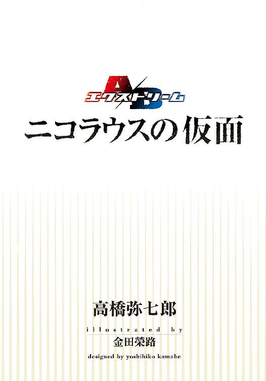
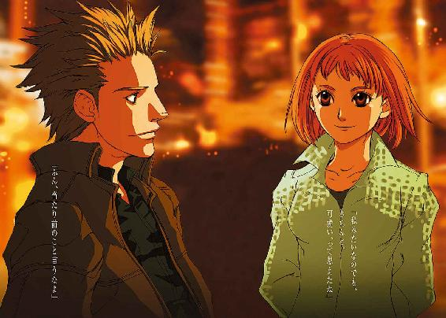
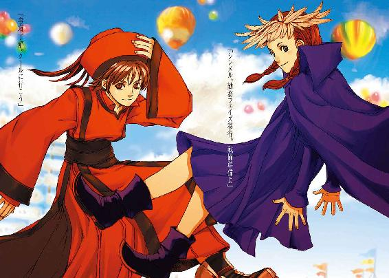
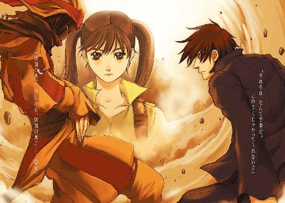
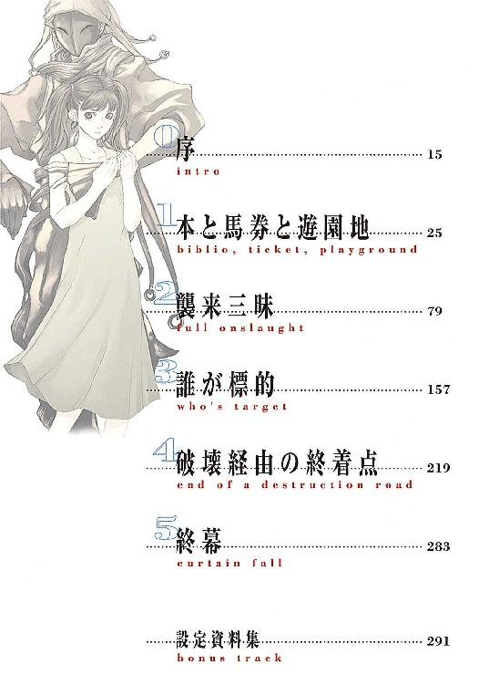
本書（電子版）に掲載されているコンテンツ（ソフトウェア／プログラム／データ／情報を含む）の著作権およびその他の権利は、すべて株式会社ＫＡＤＯＫＡＷＡおよび正当な権利を有する第三者に帰属しています。
法律の定めがある場合または権利者の明示的な承諾がある場合を除き、これらのコンテンツを複製・転載、改変・編集、翻案・翻訳、放送・出版、公衆送信（送信可能化を含む）・再配信、販売・頒布、貸与等に使用することはできません。
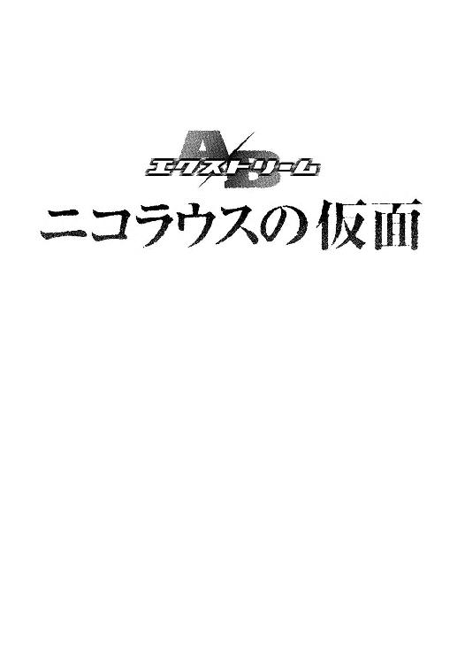
始まりは、いつだったか。
「おはよう。君の名は、ニコラウスだ。ずっと、そう決めていたんだ」
と朝の光の中、奇妙な明るさに満ちた笑みを初めて瞳に入れた時からか。
それとも、
「すまんな。あいつらに見掛けだけでも取り繕う必要があったんだ。そのうち変えるよ」
と悪戯っ子のような笑みを仮面に映した時からか。
それとも、
「こいつは君だけのものだ。より良き一人の、僕の理想の、一つの結晶だ」
と外れた誇らしげな笑みを向けられた時からか。
それとも、
「あの子らを頼むよ。僕には、君しか頼みにできる人間がいないんだ」
と、澄んだ哀しさを込めた笑みとともに託された時からか。
それとも、
「父様、答えて」「博士、博士......」「死んじゃいや、死んじゃいやー!!」
立ち尽くすあの子らを見つけた時からか。
ああ、今度は俺が笑い続けなければ。
幸いにして、笑みは仮面としてある。
守り続けなければ。
もらった命と名に賭けて。
約束を果たそう。
我が、友よ。
だが、
いつになったら、全てを終わらせることができる？
あの子たちを、解放してやれる？
俺の終わりが訪れる？
疲れた。
本当に、疲れた。
なあ、ヘルムート、俺は疲れたよ。
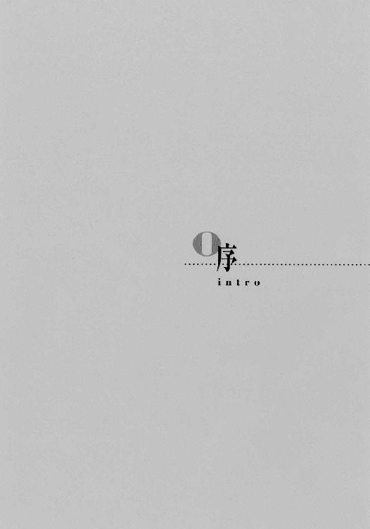
非常警報が、けたたましく鳴り響いていた。
明滅する赤い非常灯に強弱照らされるのは、複雑に折れ曲がるフレームと、血管のように張り巡らされたパイプとコード、記号を点滅させるパネル......ただただ、機械。
多少なりと知識のある者なら、それが人類社会に電力を供給する超高効率発電機〈対固定単極子循環炉〉......通称〈カーソン・リアクター〉の内部整備坑だと気づくだろう。
その非常警報の意味も。
不意に、光景が暗転する。
『キャ────────ッ!!』
絹を裂くような、という例えそのままの、女性の悲鳴があがった。
画面いっぱいに、ライト付きヘルメットを被った女性が現れた。ヘルメットから首までの保護幕を垂らし、体のラインも隠れるゴツい作業服を身にまとい、頰に当てた両手には絶縁グローブがはめられている。格好のわりに油汚れはなく、化粧も妙に濃い。
『うわあっ、出たぞお！』
奥のキャットウォーク上に現れた、似たような格好をした男が、大きく叫んだ。
画面一転。
サイレンの傍らのフレームが、周囲の鋼板もろとも盛り上がり始める。やがてサイレンさえも溶け込ませて盛り上がったそれは、巨大な塊となって、ずん、と重く一歩を床に打ちつけた。
生物とも機械ともつかない、不気味に蠢く、それ。
奥の男が、また叫ぶ。
『グレムリンだあ！』
そう、無重にして運搬可能、展開容積は無限とも言われる理想の異次元ポケット、〈ゾーン〉に巣食う、謎の怪物。〈カーソン・リアクター〉をはじめとする、〈ゾーン〉内の大エネルギー所在地に出没し、破壊の限りを尽くす害獣。
『うわー！ このままでは、我が社のリアクターはおしまいだあ！』
男がそれを指差して叫ぶ。
『キャー、誰か助けてえ！』
叫ぶ厚化粧の女の頭上に、グレムリンがのしかかろうとする。
そのとき、
『ご心配なく!!』
やけに威勢のいい口調で、ナレーターが切り出した。
『そんな時にはご一報！』
まるでその声が叩いたかのように、グレムリンの表面に火花が何点か散った。怪物は体勢を崩して、後ろ向きに傾く。そしてまた突然、その中心部に、ドコッ、と大穴が空いた。背後が爆発して、画面は炎と、大穴の空いた怪物のシルエットで埋められる。
その炎の中から、キラキラと輝く文字が飛び出した。通信アドレスを下に添えたその文字は、画面中央を占拠する。
『グレムリン退治のプロ！ 早くて確実！ ディビジョン駆除商会!!』
と、ナレーターが、その文字を読み上げた。
『あなたのニーズに応えます。ただ今、割引キャンペーン実施中。一年以内に系列五社以上ご依頼いただいた場合、なんと一割を還元！』
画面手前に、なぜか奥にいたはずの男がひょっこり現れる。
『やあ、これはお得だ』
そのように、化粧の濃い女も現れ、見事な営業スマイルでアドレスの文字を指差す。
『私も依頼しちゃお！』
ドジャーン、となぜか銅鑼の音が響き、画面がクレジットを出して止まる。
その画面を浮かべる暗闇の中に、大小四つの影が座り込んでいる。
しばらくの沈黙を経て、その一つ、ツインテールの影が、ぽつりと言った。
「これが今度の？」
少女のものである平淡な声に、ほんのかすかな呆れの色が混ざっている。
答えて、その隣のひょろ長い影が、すいすい流れるような男の声で返す。
「ああ。いい出来だろ？ ナビゲーターの役者以外は全部本物なのに、違和感なく一つ画面に収まってる。かなり高性能な多元解像度同調ソフト使ってるみたいだな」
「そーいう話じゃないでしょ？」
またその隣の影、かなり幼い女の子の声が食ってかかった。横の二人より頭の位置がかなり低く、お下げが二本、小気味のいい動作に振り回されている。
「大体こいつらって......」
その声の切れに合わせて、画面が再び灯る。
『私が社長です』
の文字とともに、でかでかと男の顔写真が映し出された。
スーツを上品に着こなす四十がらみ、風格を漂わせる容貌の紳士だ。見事なカメラ目線で、胡散臭い明るさに満ちている。このまま選挙ポスターにでも使えそうな決まり様だった。
この写真のついでのように、画面の隅に事業形態や組織構成などの詳細が映し出されていた。そのうちの一項目がピックアップされる。社員名簿だ。他のくどくどした説明に比べて、こちらの情報量は、やけに少ない。
・ディビジョン ［オーナー・経営責任者］
・フォートラン ［機器整備担当重役］
・ゴシップ ［経理財務担当重役］
・サーキット ［機器整備担当助役・突入要員輸送艇艇長］
・エレメント ［社長付き秘書］
・アンドロイド ［突入要員］
・サイボーグ ［突入要員］
オーナー兼経営責任者、つまり社長であるディビジョン氏以外の社員たちの顔写真は、集合写真の切り抜きや雑踏に混じった盗撮まがいのものなどを小さなコマに適当に放り込んだ、ぞんざいなものだ。
お下げの子のまた横、ソフト帽を被った影を浮かべる少年......というよりは男の子が、素っ頓狂な声をあげる。
「えっ、これだけ......たったの七人なの？ 僕らが二手に分かれるよう、指令が来たくらいだから、もっと大規模な組織かと思ってたよ」
ひょろ長い男が、再びすいすいと答えを返す。
「小さな組織では、一人が占める割合も役目も大きいから、バラせばそれだけ戦力も大幅に下がる......その意味では、まあ今回の妙な指令も、戦術的には間違っちゃあいないさ。それに」
ひょこん、と肩をすくめた。
「駆除屋を舐めちゃあいけない。連中は、絶対に妥協できない敵と、遠慮容赦なく撃ち合うことで飯食ってるんだ。下手な軍隊より実戦経験は豊富だし、そもそも、腕しか売れない法外者が流れ込む場所だ。ルー、連中の戦力評価、詳細は出てるか」
再び、ツインテールの少女。
「完了済。総合戦力評価。依頼達成率・確認撃破総数・実質戦闘所要時間・グレムリンによる対象リアクター被害総額・突入要員による対象リアクター被害総額・突入要員損傷率・他社相対比較、以上、自己申告項目による総合戦力評価値、計上」
読み上げたデータが、同時に全員に転送される。
「ちょっと......なに、このベラボーな数値？」
「二人でこれか。こないだの［セブン・ハンドレッド］なんか比べ物にならないな。なるほど、戦力を分散させて、武装も不可能にする......妙な指令でも、一応は筋が通ってるね」
緊張の度合いを深めた、しかし奇妙に冷静な、お下げとソフト帽の声が交わされる。
「それだけじゃねえぞ。今度は俺の〈アブラカダブラ〉で予備調査した、連中の経営データの外枠だ。見てみな」
と、さらに脅しつつ、ひょろ長い男は別のデータを転送した。
今度は誰も、何も言わない。
「な、無茶な額の出入りだろ？ たかが一軒の駆除屋が動かしていい金じゃあない......外面に漏れてる奴だけでこれだ。中をさらえば、どれだけのもんが出てくることやら。我々が動く意味も、きちんとあるってえわけだ」
「そうね。こいつら、絶対まともじゃないわ」
「今度も頑張ろう」
言い合う彼らの間に、またツインテールの少女の声が、ぽつりと割って入った。
「......気に食わない笑顔」
『私が社長です』
の画面に全員が再び目を向け......やがてお下げの子が、にひひ、と笑った。
「そりゃ、ルーの大好きな笑顔は、硬くて動かない奴だもんね～」
「かっかっか！ そりゃあ、どうもありがとさん」
「......」
「あっ、痛い痛い！ グリグリはやめてー！」
「ああっ、ルー、ごめんなさい。許してあげて！」
「なにあんたが謝ってんのよっ痛い痛い痛い！」
わたわたと騒がしい気配の中、男が立ち上がり、その長身で画面を細く塞いだ。
「ほおれ、いつまでも遊んでんじゃない」
ツインテールの華奢なシルエットも立ち上がり、訊く。
「ニコル、笑ってる？」
その平淡な口調での問いに、ひょろ長い男は腕を軽く両腰にあて、答える。
「ああ、当然だろ。妙な指令だが、額もでかい。それだけ働き甲斐もあるってもんさ」
「......」
「さあ、総員......」
小さな、両こめかみを押さえるお下げと、その肩に手をやるソフト帽も慌てて立ち上がり、四つの影が画面を塞ぐ。
そしておもむろに、ひょろ長い男が、事件の始まりを告げた。
「出勤準備！」
返事が三つ、重なる。
「事項了解！」
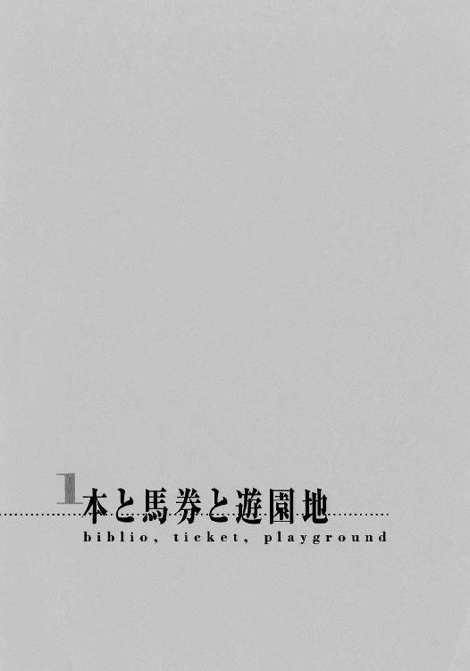
環太平洋地域の西端に位置する島嶼区画。
その主要都市の一隅に、閑静な緑地帯がある。
〝......以上の製法の結果、連鎖的経路接続の余地を残した〈ニューロンドーム〉人造脳の素形が形成される。［Ａアップモデル過程─図８参照・添付擬視ファイル８参照］ここに芽生える自我は、完全に、人間の自然脳におけるそれと同様の現象過程を経て発生する。〟
『ムナカタチーフ先頭、ムナカタチーフ先頭、一馬身置いてアキラチョーラッキー、遅れたヘッポコザンダー中団に飲み込まれた』
「いけ、いけ、差せ、差せよ！」
無重、運搬可能な異空間ポケット〈ゾーン〉の発見による建築物の大整理の結果、世界はかなりの空間的余裕を得た。かつては、世界一ゴミゴミしている、と（事実を）喧伝されたこの都市も、都心部を離れれば、このような緑地帯をかなりの広さで持つまでになっていた。
〝つまり、〈ニューロンドーム〉とは、人工物による、人間の脳活動の再現を目指したものである。与えられた命令と制限の集合体であり、それ以外の動作要因および結果を持たないプログラムの動作と、この〈ニューロンドーム〉における人格表出は、原理的に異なる。〟
『アキラチョーラッキー来た、アキラチョーラッキー来た、アキラチョーラッキー来た、並んだか、並んだ、抜いた、抜いた、一気に抜き去った』
「ぬおおおおお！ よし！」
この区画にきっちり四半年居座る冬は、ようやく去りつつあったが、今日のところは全区曇天。この緑地帯の彩りを未だ占める冷たい濃緑と冬枯れの白も、大地に広く落ちる雲の影の中、深く沈んでいるように見える。しかし、寂しげではあっても、殺風景とは感じられない。
これは、この区画の借主が、地面に緩やかな起伏をつけ、木々や道、街灯、標識までを適所に配置しているためだ。風景をいじるというのは、当世においても贅沢の部類に入る趣味だが、借主はそれをたしなむだけの......財力だけではない、芸術的な意味での資格も持っているらしい。まるで一枚の絵画のような、見事な全景がそこにはあった。
〝プログラムは、いかなる動作も、例え自己修正・進化の機能を備えていたものであっても、非合理には行えない。しかし〟
『凄い凄い、末脚とは思えない加速で後続を離す、独走だアキラチョーラッキー』
「ぐわおお！ 愛してるぜえ!!」
ただし、一つだけ、その調和をぶち壊しにしている無粋な建物がある。それはつまり、この風景を形作った、当の借主の住まいなのだが。
［ディビジョン駆除商会］
と主要十言語で大書された悪趣味な看板をでかでかと掲げた、貧相なコンクリ二階建て。平地面積はそれなりにあるが、くたびれ具合もそれなりにある。
〝〈ニューロンドーム〉により生まれる自我は、かのマシンアダム誕生を示した【コンラッド質疑応答】、「君は噓をついているか」に対する『彼』の〟
『ああっ、しかし伸びない、伸びない、仕掛けが早かったかアキラチョーラッキー』
「んなな、なにいっ!?」
絵画めいた、木々立つ丘を越えてゆく薄灰色の石を敷いた道路が延びる先に、こんな建物が突っ立っていると、とたんに風景の美しさが逆転して、滑稽になってしまう。今日のような曇天だと、微妙に怪しささえ漂ってくる。
人は、こういう光景を、胡散臭い、と表現する。
〝「いいえ、私は噓をついています」という回答で示されたように、非論理的な思考の構築および表出を可能にする。［第一章参照］〟
『そして来た、やはり大外から来た、クロイワカイザー、クロイワカイザー来た』
「ぎゃおおおおおおっ!!」
借主が、こんな造形や配置を故意にやっているのかいないのか、その人となりを知る者でも......いや、知る者ならばなお、判断を下しがたいところである。
借主の名は、『ディビジョン』。
〈ゾーン〉内に現れる謎の害獣・グレムリンの退治を請け負う現代の花形職業『駆除屋』である、ディビジョン駆除商会の社長だ。稀代の粋人、あるいは怪人として、名高くもあり名低くもある。
この彼も含めた、総員七名の訳あり傷持ち腕利き等々の社員が巣食う......もとい集う仮の宿が、ここだった。
〝カイザー来ぎゃ......じゃなくて、ええと、現代において一般にアンドロイドと呼称される『二次的誕生による人間』は、通常〟
『アキラチョーラッキー脚が残っていない、抜いた、ちぎったちぎった、残り２００は一人旅だ、誰も追いつけない、圧倒的、圧倒的だ、ゴール、ゴール！ 皇帝杯無敵伝説は健在、クロイワカイザー！ ああ今、じわりと上がっていたモーレツハヤミも二着でゴール』
「っくぎゃおあううえおえあ！！！」
今日は、緊急依頼も含めた社用が一切オフの完全休養日。
例によって、彼らは過度なマイペースで生きている。
〝ぎゃおあこの〈ニューロンドーム〉を内蔵したうえおあ存在をああアキラチョー〟
『アキラチョーラッキー、なんと止まって一息ついている、前代未聞』
「んがうあー、この馬鹿馬!!」
「だーっ、うるさい!!」
叫び返す声とともに、分厚い物体が壁掛けスクリーンにぶつけられた。
ばちゅん、と光が散って、競馬中継に合わされていた画面がクリアされた。スクリーンは平坦な銀幕に戻る。
地上社屋二階にある二十畳敷きの待機室......床の間台所トイレ付き、障子張りの窓に南向きの神棚まである純和室......に、静寂が訪れた。
そのど真ん中に据えられた特大のこたつに下半身を埋めたまま、見事な投擲を見せたのは、年の頃十六、七の少年。尖った輪郭と鋭い目線、ざんばらにした焦茶の髪。全体に、荒んだ雰囲気がある。
「人が読書してるってのに、ウマウマうるさいっての！」
もっとも今は、寝癖だらけの頭に濃紺のパジャマという姿なので、迫力には欠けているが。
「......ボギー」
と、答えるでもなく、こちらは直前までの狂乱姿勢のまま硬直していた男が呟く。
よれよれのワイシャツに緩めたネクタイという、チンピラチックな格好。その首から上だけが不自然にぐるりと回って（その部分の改造はしていないはずだが）、幅広サングラスをかけた年齢不詳の細面が、ボギーと呼んだ少年の方に向き直った。その顔には、『半端なトランス状態』とでもいうような異様な虚脱感が表れている。
社の実戦部隊である突入要員を務める『サイボーグ』ことボギーが、思わず肩を引かされる。
が、
「金、貸してくれ」
と続いた一言で思わず倒れこんだ。倒れたまま、訊く。
「ゴシップ......まさか、今のレースに......」
かくん、と今度は首から骨が抜けたように、サングラスの男『ゴシップ』は頷いた。
「......一点買い、ボーナス全部......」
実は少し前、彼らディビジョン駆除商会は非常にでかいヤマを片付け、連合政府とその外郭団体である星系開発公団、さらには連合治安軍からも巨額の報酬を得ていた。これにより、かなりヤバ目だった経営状態は一気に健全化（と社長は主張する）、社員たちもそのおこぼれに与って臨時ボーナスを受け取っていたのだ。
その、並みの水準でなら三月は暮らせる額を、
「ぜ、全部......」
聞いている方の頭が痛くなる。言い返す気力も失せたボギーは、そのまま寝転ぶ。
「だって、当たれば十七倍だぜ？ 賭けない方がおかしいだろ」
「それだけ勝率が低いってことだろ？ 賭ける方がおかしいよ」
これで、よく社の経理財務担当重役が務まるもんだ、とボギーは呆れた。おまけにこの男、非常時には、社のために各種の電子的な違法工作を縦横に駆使する、超級のクラッカーでもあるのだ。冷静にして合理的、即時的確な判断を求められる存在であるはずのクラッカーが、
「確率なんて、しょせんただの数字だろうが。俺の馬にかける情熱のたぎりが、これと決めさせたんだよ」
などと非合理的なことを、いけしゃあしゃあと言うのだから、世の中は不条理に満ちている......とはいえ、公私の区別はするし、仕事自体を嫌う言葉を聞いたこともない。だからこそディビジョン社長は彼に社の事務方を任せているのだろう。よく見れば、着ているスーツも、よれよれではあるが、汚れてはいない。
妙なところできっちりしている、妙な男なのだ......と、あまり他人のことを言えないボギー少年は思う。
その不条理なクラッカーは、体ごとしぼみそうなため息を漏らして、こたつに入った。
「はあ～、こんなに尽くしてるのに、なんで応えてくれねえのかなあ～」
その掌のなかで、渾身の握力によって一本のこよりのようになった馬券の束を、侘しげに眺める。ついでと卓上にある籠に手を伸ばすが、中は空。ますます侘しい気持ちになる。
その様に憐憫の情をもよおしたボギーは、とりあえず助言してみる。
「見返りを期待することしかできない奉仕の結果なんて、そんなもんだよ。きちんと返ってくる所につぎ込まないと」
しかしこういう合理的な意見はえてして、大穴狙いに取り憑かれている博打打ちには効果がないものだ。やはりというか、ゴシップにはこたえた様子もない。さっさと話題を変える。
「そう言うわりにゃ、おまえさんも結構、無駄使いしてるように見えるぜ」
「僕のどこが無駄使いをしてるってのさ」
ゴシップは、一昨日から待機室の大部分を占拠して、社員たちに不評を買っている、山積みの物体を見渡した。
「こんな古臭い情報媒体を山ほど買い込むのは普通、無駄使いって言うぞ......こんなにペーパーハード使っちまって......なんでパーソナル・バンクに直接放りこまねえんだ」
ゴシップは手を伸ばして、スクリーンを停止させた物体を取った。
表紙には、『ニューズフロント特別編集・人間概論』とある。たしか先月の新刊だったと思うが、さっそくペーパーハード、いわゆる〈本〉にしたらしい。特注の少部数品だから、一冊でも結構な額になるはずだが、ボギーは今度のボーナスをはたいて、それを山と買い込んでいる。
地下社屋にある彼の自室には、この数十倍の規模で本が山積みされているらしい。現在、とっつぁんこと、社の機器整備担当重役たる『フォートラン』御大自らが、彼のために効率的な収納棚を製作中で、その期間中、新規追加分はここに置きっぱなし、ということになっている。
「情報じゃなく知識って言って欲しいね。めくって、読んで、理解する......これが読書の醍醐味なのさ。融合視界に文字並べるだけなんて、無粋の極みだよ」
融合視界というのは、視界に自己流インターフェースを投影する技術だ。獲得（改造、という語感は不評なので、大抵この語が使われる）には比較的費用と手間がかかるが、簡易端末としての使い勝手がいいので、普及率はそこそこある。
ボギーは、その融合視界を仕事では常用するが、しかし同時に、現代でも根強く残るブックフリーク......つまり、データ読み取りや保存を、紙を介して行うという、前時代的なメディアに耽溺する（ボギー的に言うと『たしなむ』）変わり者でもあった。さらに付け加えるならば、この趣味にハマるのは普通年配者で、彼のような年少者は珍しい。
「無粋ねえ......人のレース観賞を邪魔するのは、無粋とは言わねえのかよ」
「本当に『観賞』だけなら文句も言わないけど......だいたい、なんで遠慮なく騒げる自分の部屋で見ないのさ」
「ここのスクリーンが一番でかいんだよ」
「それこそ自分で買うなり中継に感覚を割り込ませれば......あ、ははあ、なるほど」
ボギーは彼特有の、底意地の悪そうな笑みを浮かべた。
「な、なんだよ」
この顔に面する人間は、自分の心中を見透かされた気がして、居心地が悪くなる。それに、この鋭い少年の推測は、大概当たるのだ。今のゴシップの場合も例外ではなかった。
「一人で見るのが寂しいんだろ」
「な、なにおう!?」
「はは、要ボーナス増額ってとこかな」
ゴシップは、うるせえ、と言って分厚い『人間概論』を放り投げる。悔しいが、この少年は口喧嘩の（腕っ節もだ）高位ランカーだ。話を終わらせるには、降参するのが最も早い。
ボギーは外れて飛んでいく本を手元に引き寄せ、受け取った。おもむろに完勝の宣言を出そうとした時、からからと玄関先に吊るしてある鈴が鳴って、来着者のあることが告げられた。一階のガレージに車が入ったらしい。
地上社屋一階は、社の実戦部隊を運ぶ突入要員輸送艇〈チャリオット〉の格納庫を兼ねるガレージと、地階型〈ゾーン〉発生機関からなっている。
異次元ポケット〈ゾーン〉は、その内部に、〈ゲンセ〉との境目・境界面を天頂にした、外界とほぼ均等の重力を持つ。
地階型〈ゾーン〉というのは、その境界面を地面と平行に発生させる方式のことで、境界面越えの際の重力制御が必要ない、最も基本的な〈ゾーン〉の設置方式だ。
ディビジョン駆除商会の本体とも言える、社の規模からすると不相応なほどに巨大な地下社屋は、この地階型〈ゾーン〉内に存在する。地上の粗末なコンクリ二階建ては、海面に突き出した巨大な氷山の一角に過ぎないのだ。
とはいえ、その一角が社員にとっての憩いの場であることに変わりはない。また一人、社員が鉄板で組んだだけの階段を軽やかに上って来る。
「ただいま。今日は結構寒いわね」
綺麗に通る声を響かせて、品のいいロングコートに身を包んだ女性が入ってきた。ショートの金髪に丸眼鏡という、非常な美人だ。両手で抱えた近所のショッピングセンター［せみ屋］印の買い物袋がはちきれそうだ。
ボギーも、この女性に対しては素直になる。
「おかえり、エリー。なんだい、その大荷物は？」
「メインは鱈の切り身とたまねぎ。温かい北欧風チーズグラタンでも作ろうと思って。それに社長も、たまには上で食べる、って言われたから、ちょっと多めに買ってきたの」
社内外を問わず人気のある優しい笑みを浮かべて、ディビジョン駆除商会の社長付き秘書『エレメント』ことエリーは丁寧に答える。
「へへえ、社長がね......そりゃ珍しい。ミサイルでも降るかな」
言いつつ、ゴシップは壁に張ってある電子掲示板、食事担当の項を見た。社長ととっつぁんを除いた（前者は地位の特権、後者は機械体であるため）名前が、各々のスケジュールに合わせて、ランダムに並べられている。
今、そこにはエリーを表す『Ｅ』とゴシップを表す『Ｇ』の文字が、フォント化されたとっつぁんの達筆で記されている。
ゴシップは、やれやれ、と言って立ち上がり、続きの台所に向かう。コートを玄関の洋服掛けに納めるエリーから買い物袋を受け取り、中を覗いた。
「エリーのご馳走と一緒だと、俺の不手際が目立つんだがなあ......酒はあったかな？」
「ありがとう。お酒はアンディが買い置きしてるわよ」
料理と食事は、要生存剤という『生きるためだけの栄養源』の発明後も、現実を楽しむ行為の一環として大いに営まれている。料理に限らないが、成功も失敗も、面白さ悔しさを感じるためには大切なものなのだ。
ちなみに、エリーの料理は、味は超一流だが取り合わせが無茶苦茶で（胡麻蜜かけの白玉団子の後に山盛りパスタと各種ソースを出したりするのだ）、ゴシップのそれは東西南北網羅した酒のつまみ系の小品ばかりだ。
（今日は気分が乗らねえから、小松菜の山吹和えで手早く済ませちまうか）
と思い、傍らの大型冷蔵庫を開けたゴシップは、そこに並んだ酒瓶を見て眉根を寄せた。
「......日本酒ばかりだ。あのラブマシーン、俺のアクアビット飲んだ後に、自分の好みを補充するたあ、いい度胸してるぜ」
エリーがエプロンをつけながら答えた。
「ふふ、最近凝ってるみたいだから。今日もキットに飲ませたりしないといいけど......ボギー、みんなが座れる程度に、本を片しておいてくれる？」
「ん、了─解」
投げやりに手を振って、ボギーは寝転んだまま、散らかった本を一斉に宙に巻き上げた。『精神力による物理干渉』......いわゆる念動力だ。宙に浮かんでいた本が、ボギーの意思の流れを受けて、部屋の片隅になだれ込んでいく。大枚はたいたわりには扱いがぞんざいだ。
その人類の革新たる特殊技能者の緩みきった様子に、ゴシップは呆れ声で言う。
「ったく......紙めくりの引きこもりかよ、爺むせえ。これならアンディの方が、よっぽどうまく休日使ってるぜ」
すかさず強烈なカウンターが飛んでくる。
「馬券でスった人に言われたくないね」
「うぐっ」
「また？」
悪気のないエリーの追い討ちが刺さる。
「うぐ、ぐっ」
こういうとき、ボギーのカウンターに一撃クロスしてくれる奴がいないというのは、非常に苦しい。口の暴君の攻撃をまともに受けてしまう。そもそも自分は、会話においても前衛に向いていないのだ。
電子掲示板の外出の項にある『Ａ』と『Ｃ』の文字を、恨めしげに見上げるゴシップだった。
とあるガレージに、白いワゴンが一台、ぽつん、と佇んでいる。
「......いいのかなあ、こんなことに使って」
男の子はコンソールにお気に入りのソフト帽を置いて、目の前の画面を見た。
そこでは今、彼らの上司からもらった侵入・書換えプログラムが流れ動いている。本来は、彼らが今潜む車両を通過フリーにするためのものだ。
「いいの。ニコルも敵情視察を欠かさないように、って言ってたでしょ～♪」
その傍ら、お下げの女の子が姿見の前で、鼻歌を歌いながら答えた。青いスカートだかローブだか分からない、装飾過剰な衣装を肩に付けて、丈を合わせている。
「それにしたって、これは少し近すぎるんじゃないかな。標的の周りには妙な連中もいるのに。僕らはこのままじゃ、ただの子供なんだよ？」
男の子の危惧に、女の子は頓着しない。気楽に答える。
「なによ、その妙な連中が気になるから仕掛けるのを待とうって言ったのは、シンメルの方じゃない。その慎重さに付き合ってあげたんだから、今度は私の言い分に付き合ってよね」
「慎重にもなるよ。僕らだけでの活動なんて、この四年で初めてだし、その初めての活動で、標的に先客がいるんだ。せめて〈悪霊団〉の包囲を先に作っておかないと危険だろう？」
「だから、その待ち時間を、標的の観察と、ついでに遊びに使ってみるのもいいじゃない......どう、似合う？」
女の子は、次に羽で編んだ冠をかぶって見せた。お下げの髪型に良く似合っているが、男の子はため息のように返す。
「ついで、ね......まあ、張り付いていれば、妙な連中の手出しを牽制できるかもしれないけど」
「でしょ？ 大丈夫、その間に〈悪霊団〉もきっちり配置するから。ここ、変なセンサーだらけで隠匿に時間がかかるから丁度いいわ」
「うん......」
男の子は曖昧に頷く。彼としては、標的に近づく、それも人間同士として接触するというのは、あまり得策とは思えなかった。なんといっても、殺す相手なのだ。
と思いつつも、男の子は自分の朱の衣装を取った。女の子のはしゃぎようが、普通ではなかったからだ。
（......仕様がないか。こんな時でもなければ、僕らは遊べないものな......）
「ベルヒト、遊ぶのはいいけど、せめて疑われないように接客・案内マニュアルくらいインストールしときなよ」
既に、シフト的にも、性格的にも、女の子のフォローが板に付いている。
あいにくの曇天でも、その場所の浮かれた雰囲気と明るさは損なわれることはない。
マスコットキャラクターを象ったバルーンが宙に幾つも巡り、高く細い城がそれを突くように天に伸びる。それを取り巻くのは森やら岩山やらだが、それらは人工物特有の、整理されすぎた概観を持っている。その間を効率的に埋めるのは、観覧車の円、コースターの線、極彩色のポップな建物の群れ......そして何より、浮かれ騒ぐ雑踏の緩やかな流れ。
それは、おもちゃ箱と色とりどりのブロックをぶちまけたような、およそ人が考えうる限りの『楽しい光景』を、くどくしつこく具現化した、巨大な遊園地だった。
そのマスコットキャラクターを練り固めたような門、一歩間違えば悪趣味という入り口で、
「ファンシーランドにようこそ！」
「それでは、ご案内させていただきます」
と可愛らしい扮装に身を包んだ、ガイドの女の子と男の子が、見事なマニュアル的朗らかさで言った。
それに答えるのは、一組のカップル。
「ああ、よろしく頼むぜ」
と荒削りな容貌の、大柄な青年が気分よく返す。
「はしゃぎすぎてはぐれちゃダメよ」
その隣に立つ、容貌にあどけなさを残した少女が、しっかりした口調で続けた。前にではなく、横に向けて。
「......それは、俺に言ってんのか？」
「他に誰がいるってのよ」
ディビジョン駆除商会の突入要員『アンドロイド』ことアンディと、機器整備担当助役にして突入艇艇長たる『サーキット』ことキットの姿は、この島嶼区画でも指折りのアミューズメントパーク、［ファンシーランド］にあった。
社内恋愛中（アンディの主張・キットはノーコメント）の二人は、完全休養日を利用して、デート（同右）としゃれ込んでいたのだった。
このパークは、社の軍用浮遊艇〈チャリオット〉なら三十分程度の距離にあるのだが、二人はあえて普通に、直通の高速鉄道でやってきていた。
「デートってのは、どんな過程も楽しみの一つなのさ」
「パークの駐車場に軍用機で着陸して、好奇の視線浴びるなんてご免だわ」
と両者の意見が、微妙にズレながらも合致した結果だ。
この二人の関係というのは大体こんな感じで、アンディは直球ど真ん中一本槍、キットは外角低目一杯から、場合によっては敬遠・死球も辞さないというタイプである。それでも概ねうまく付き合っていられるのは、ボギーの表現による、
「接敵の方法が違うだけで、互いはきちんと殺傷圏内に入ってるのさ」
ということらしい。
まあしかし、そのちぐはぐさが愉快に見えることは間違いない。
「そっちこそ、走り回って慣れないスカートに足引っ掛けたりすんなよ」
「な、慣れなくて悪かったわね！ エリーが選んでくれた服よ、文句ある？」
ガイドの二人も、接客義務以上の笑みで、この妙なカップルを促した。
「本日のお勧めは、新規開設のアトラクション『ムーン・ツアーズ』、人気の飛行体験『サイモンのゴーゴーファイター』、期間限定のゴーストシアター『ミッシーのバッドトリップ』、いずれも待ち時間なくご入場できます！」
青い魔法使いの扮装をした、元気のいいお下げの女の子の名前はベルヒト、
「それ以外にも、通常の遊戯施設、レストラン、ショップなどのガイドも承っています。分からないことがあれば、ご遠慮なくおっしゃってください」
朱の道服の、落ち着いた感じの男の子の名前はシンメルというそうだ。
二人の扮装は、洋の東西こそ違うものの、装飾の様式が統一されているので、見た目に違和感はない。
「ライトマジック・パレードは本日六時からになっています！ 夕から夜に流れ行く光の行進を、ぜひともご覧ください！」
「パレードは全長一キロメートルにも及び、フロートは三十台、スタート地点はホワイトヘラン城、ルートは中央大通り一周となっています。雨天決行ですので、ご安心ください」
それよりも、ベルヒトの強く細い眉、シンメルの柔らかな輪郭と、二人が口調そのままの顔立ちをしていることが、キットにはおかしかった。
「何か？」
ベルヒトが、不思議そうな顔をして訊く。
キットは慌てて手を振った。
「ううん、なんでも。どれにしようか、アンディ？」
「飛行機は飽きてっから、それ以外。なんでもいいぜ」
「じゃ、『ムーン・ツアーズ』にしよ！ 新設会場は中央よね？」
「はい、こっちです！」
「低速バスが走りますから、左側に寄ってくださいね」
キットは、ガイドの二人をまるで妹弟のように連れて、派手派手しい色合いをした敷石の道を小走りに駆けて行く。なんだかんだで、はしゃいでいるのはキットの方だ。
彼女の今日の格好は、チェックのブラウスとフレアスカートに、だぶだぶのハーフコート。色はいずれも淡色で、少女らしい線の細さによく似合っていた。
ただ、これは例によってというべきなのだが、彼女は頭に、一昔前の板金工のようなゴツい保護面を装着していた。これは無改造の彼女が各種出入力端末として使っている道具だった。今は上に跳ね上げて顔を出しているが、それでも妙な格好には違いない。
（あの二人も、仕事とはいえ、気にせずに接客できるってのはさすがだぜ）
などと感心しつつ、アンディはのんびりと、しかし大股な歩調で後に続いた。どうせキットは道々お菓子を買ったりするだろうから、急ぐこともない。
彼の方は、つなぎにブーツ、フライトジャケットというひたすらラフな格好だが、着こなしが完璧なので、私服として全く違和感がない。それなりにいい男として通る。
そのアンディがふと見れば、案の定キットはバイシクルワゴンでアイスを三つ買っている。そのうちの二つを勧められたガイドの二人は、仕事だからと丁寧に断っているようだ。
「本当にすいません」
と深々と頭を下げるシンメルを、
「丁寧すぎたらお姉ちゃんが悪者になっちゃうでしょ！」
とベルヒトが叱り飛ばしている。
キットが、それじゃとばかりにアンディの方を向いた。どうやら二つとも押し付けられそうな気配だ。何もこんな寒々しい曇りの日に、アイスなんぞ買わなくてもよさそうなものだが。
それでも、じんわりと胸に暖かく湧くものがあるようないい気分を、アンドロイド・アンディはその作り物の体に、確かに感じていた。
アンディが、ひんやりと冷たいチョコミントアイスを頰張っている頃、残るディビジョン駆除商会の面々は逆に、ひたすら熱々のチーズグラタンに口をつけていた。
「このホワイトソースの隠し味は白ワインだね」
と、上座にしつらえてもらった座椅子で、上品に匙を使う人物が言った。年の頃は四十程の、風格を漂わせる紳士だ。
笑顔が明るすぎてやや胡散臭いが、不思議と嫌味はない。中身も大体この外見に相当する。その意味では裏表のない人物と言えなくもないが、そもそも外見からしてつかみ所がないので、正体不明であることに変わりはない。
この紳士が、ディビジョン駆除商会の社長、世間に噂をいろいろ振り撒き、しかしその始末を一向につけない難儀な男・ディビジョンである。
「甲州もの、と見たがどうだね、エリー君」
台所に一人残って次の料理の準備をしていた、エプロン姿のエリーが、しっかりと体ごと向きを変えて、笑顔で答えた。
「はい。ご名答です」
その彼女が手にしているのは、なぜか練り味噌を入れたボールだ。
（......グラタンの後に風呂吹き大根ときたか......まあ、前みたいにイカ五目飯とシフォンケーキを一緒に出されるよりはいいか）
などと思うゴシップだが、今食べているチーズグラタンの味自体は、店に出せるほどの美味なので、贅沢な悩みと言えなくもない。食べる楽しみというものを、ほとんど全身で感じる。
「ふむ、こういうときは少し、生身の体が懐かしくなるのう」
と、とうに味覚を捨てた人物に、口惜しさを感じさせるほどだ。
この、社長の対面に座る、今時珍しい完全機械式の体を持つ老人（らしい）こそ、ディビジョン駆除商会の機器整備担当重役フォートランこと、とっつぁんだった。
「ところで......」
とっつぁんは自分の頭部、いかにもな頑固親父の顔を映した古臭い二次元モニターを、グリンと回した。視界に、グラタンと小松菜を交互にかき込んでいるボギーが入るが、それは通り過ぎる。さらに回って、壁に掛けられたスクリーンの方向で、止まる。
「優雅に食事をするのはいいが、待たせすぎではないか？」
「ふむ、熱々のグラタンを食べている最中に通信を求められるというのも、なかなかない経験だからね。応対が少々不慣れであることは認めよう」
と言ったディビジョンは、見事にグラタン用の陶器皿を空にしていた。
「......それで」
ナフキンで口元をぬぐい、綺麗に畳むと、ようやくスクリーンに、回転式の座椅子を回して向き直った。膝元で掌を組む、余裕の構え。
「『ヴァージョン』君、だったね。君のことは、うちのゴシップ君から色々と聞いているよ」
開けたままにしていた通信画面の中で、収まりの悪そうな髪に手をやっている妙齢の美女が、対応と話題、両方に対して軽くため息をついた。
「どうせ、ロクでもない話でしょ？」
「そうでもない。クラッカー集団［蜘蛛］を率いて連合政府のシステムジャックを謀り、連合政府保安機構の誇る世界最強の対クラッカー情報網兵器〈フーダニット〉と二ヵ月もの間渡り合った怪物クラッカー『赤』......間違いはないだろう？」
「最後の『怪物』ってトコは気に食わないけど、まあ大体合ってるわね」
不敵な笑みを浮かべる美貌は、猫科の肉食獣を思わせる。油断すれば一瞬で咽喉元を嚙み裂かれそうな甘美な恐怖が、そこには匂っていた。
「今じゃ、その保安機構に囚われた、哀れな〈フーダニット〉ドライバーよ」
連合政府保安機構の対クラッカー情報網兵器〈フーダニット〉。謎の多い、しかし最強の名のみが高い、連合政府の守り神......その制御と管制に携わる人間は、畏敬を込めて『ドライバー』と称される。いずれも人類世界で有数の腕利きというが、その詳細は当然、固く秘されている。
「けっ、よく言うぜ。俺たちを売って自分の安全を買いやがったくせに」
とゴシップが毒づくと、それに耳聡く答える。
「あら、あなたに言われたくはないわね、『青』。あなたと『黒』の方も、私の情報を売って、逃げる時間を作ってたじゃない。お互い様よ」
「先に裏切られたから、その仕返しをしたんだよ。一緒にすんな」
「相変わらずつれないわね。それで、もう一度話しかけてきたってことは......」
ふ、と恐怖の笑みを深める。
「逆探は無駄だ、ってことが分かったのかしら」
図星を指されて、ゴシップととっつぁんが、思わず息を吞んだ。
「茶番の食事が終わるまで待ってあげたんだから、答えてくれてもいいんじゃない？」
しかしディビジョンは、全く動じた様子もなく、明るい笑みで返す。
「なるほど、君はなかなか話し甲斐のある相手のようだね」
断固として答えを拒絶する、その明るさに、ヴァージョンは表情を消した。簡単に手の内を明かし合うようでは、交渉相手としては三流だ。静かに冷たく、しかし賞賛する。
「......お褒めに与り恐悦至極だわ、ミスター・ディビジョン。さすがに『青』あたりとは歯応えが違うわね」
うるせえ、というゴシップのぼやきを聞き流して、ディビジョンは簡潔に告げる。
「本題に入ろうか」
にっ、とヴァージョンは改めて笑い、データを一つ、転送した。
時事新報を集めたファイルらしい。数は五十余。
ディビジョンは、傍らを見た。いつの間にか、エプロンを脱いで正座したエリーが、そこにいる。ついでに練り味噌の小皿を付けた風呂吹き大根も、横に置かれていた。
「ありがとう」
「はい」
さて、とディビジョンは周りを見渡した。
ゴシップが、社の情報中枢とリンクさせたサングラス越しに『ファイル洗浄終了』の答えを受けて頷き、とっつぁんが天井から別のスクリーンを下ろして広げ、サブディスプレイを即席で作った。ボギーは自分の前にも置かれた風呂吹き大根をぱくついているが、どうせ融合視界で情報を受け取るだろう。
「どれを見ればよいのかな？」
ディビジョンは、サブディスプレイにファイルを並べてゆきながら、訊く。
「三面記事よ。一番最近ので言えば、ファイルのラストページ」
「これかな、『非合法武装組織［セブン・ハンドレッド］謎の壊滅。管区治安当局・軍司令部は関与を否定』」
ゴシップが、続いて似たような記事を拾って、サブスクリーン内を整理してゆく。なるほど、五十余、全てのファイルにそれらしい組織壊滅の類の記事が掲載されていた。最も古い記録は四年前のもので、いずれも生存者なし。その犯人や抗争の原因は不明、とある。
「［セブン・ハンドレッド］......環太平洋地域では、それなりに有名な組織だね」
「政府は、この犯人らしき連中の行動原則を、ようやく解明したの」
「ほほう」
「ま、簡単な話、押し込み強盗なんだけど」
その会話をよそに、ファイルを調べるボギーは、それら札付きの武装組織の中に、自分も良く知る名前がいくつもあるのに気づいて驚いた。
（［セブン・ハンドレッド］だけじゃない......［グリムウォーカー］、［ワックス］まで......？）
いずれも街のギャング程度ではすまない、練度の高い戦闘員を数多く抱え、それなりの筋とも繫がっていた組織だった。それが潰された。全滅という。悲しくはないが、哀れみは覚える。
そのボギーの『裏側に関しての非常に高い見識』（ディビジョン評）で眺めれば、被害者リストはほとんど裏社会のオールスターの観さえあった。それらのことごとくが、要員を殲滅され、本拠地を完全破壊され、有形無形の資産を雲散霧消させている。なんとも乱暴で豪勢な分捕り様......まさに強盗だった。
「政府は、この武装組織潰しの強盗団退治に、そろそろ本腰を入れる気になったってわけ。我我の付けた連中のコードネームは［ブラックアウト］よ」
「強盗団［ブラックアウト］、ね。それが一介の駆除屋たる我々と、どう関係すると？」
ディビジョンはとぼけるが、ヴァージョンは頓着しない。自分の話を続ける。
「連中の手口は武力行使だけじゃないのよ。同時に組織の情報中枢にクラッキングをかけることで、その経営基盤から保持していた情報、内外の伝達経路まで、根こそぎ消し去り、破壊してしまう......だから証拠も残らず、復讐の意義もなくなり、忘れられるままになる」
ヴァージョンはここで一旦言葉を切り、間を置いてから本題に入る。
「政府からあなたたちへの依頼よ。この［ブラックアウト］を、退治して欲しいの」
「はむ」
ディビジョンの妙な声は、返事ではない。箸を取り、練り味噌をたっぷりつけた風呂吹き大根を頰張っていたのだ。味噌に練りこまれたゆずの皮が、ほどよい酸味を口中にもたらす。
「うん、美味しい」
「はい。ありがとうございます」
エリーが嬉しそうな顔をして答えた。
ヴァージョンは、とりあえず表向き平静を保った。
「............つまり、連中と戦うには、武力行使と情報戦を同時にこなせる組織が適任なのよ。依頼項目は単純。『連中が食いついたら、独力で捕獲ないし殲滅せよ』」
「なるほど。もし失敗しても、一つ会社が潰れた、で済むのがなおいい、というわけだねもぐ」
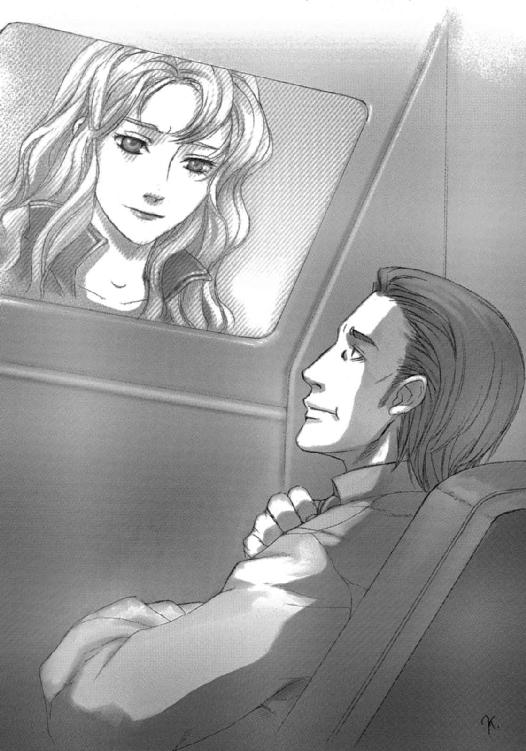
とディビジョンは何気に核心を突く。
「最低、連中のデータが得られればいいってか？」
「つまりは、ていのいい当て馬というわけじゃな」
「ウチも、見込まれてんだか、見損なわれてんだか」
ゴシップ、とっつぁん、ボギーが順番に言う。反対意見ではない。全員、ディビジョンの様子から、依頼を受けると分かっている。果たして彼らの社長は、条件の交渉に入った。
「報酬は？」
「定額ではないわ。これから、あなたたちの社に、民間企業に偽装した政府筋の機関が入金する......連中の監視網に引っかかるようにね。連中は、非政府組織間での『不正規』で『巨額』のやり取りに網を張って、そこから襲撃対象を選別しているらしいの」
「なるほど、襲われても公に文句を言えない相手を狙っているのか。しかし、だとすると連中は必ずしも、我々の所にやってくるとは限らないな」
「ええ。受けてもらえそうだから言うけど、他の、条件を満たしている幾つかの組織にも、同じ依頼をしているの。どこに食いつくかは、それこそ賭けね」
「報酬は、その食いつくまでの期間に行われる入金額、ということかな？」
「ええ。もし他の組織に食いつけば、それまでに入金された額は無条件で譲渡される......いい条件でしょう？」
「援護もなしに、社を潰す危険のある戦いをするんだ。妥当な線だと思うがね」
妥当......互いの条件が折り合った、その証明の言葉だった。
「......それじゃあ？」
「それ以外に条件がないのなら、受けよう」
「オーケー、ミスター・ディビジョン」
ヴァージョンは会心の笑みを浮かべた。
ディビジョンも一見、常のように余裕の笑みをただ返しているだけのようだったが、しかし付合いの長い社員たちは、その笑みの成分を正確に判断している。
これは、ヤバいヤマだ。
そして社長は、それと分かっていてなお、受け入れている。
......まあ、どうせ儲ける方向に持ってはいくんだろうけれど。
「イーヤッホー！」
「ワアー！」
アンディとシンメルが、ワイヤーで吊られ回転するだけの飛行機に、並んで乗っていた。この手のアトラクションは、原始的ではあるが、今もなお子供たちには非常に人気がある。
飛ぶのには飽きてるとか何とか言っておきながら、こういう乗り物に惹きつけられるあたり、アンディもしっかり子供である。シンメルの方は、素直に楽しんでいるようだ。
その様子を、キットとベルヒトが近くのベンチに座って眺めている。彼女らも、散々遊びまわって、ようやくの休憩といったところだ。
「あんな、吊られて同じとこ振り回されるだけのものの、どこがいいのかしら」
「そ、そうですね」
キットの呆れ声に、ベルヒトは曖昧に同意した。
さっきキットがメリーゴーランドに乗っていたとき、それを眺めていたアンディが、
「あんな、ただピカピカ光って揺さぶられるだけのもんの、どこがいいんだ」
と言っていたことは、彼女だけの秘密だ。
（でも、仲はすごくいいんだよね）
ベルヒトには、そこが不思議で、羨ましい。
「......いいなあ」
ぽつりと、声が漏れてしまった。
キットは、それを耳の端に引っ掛けて、そしてベルヒトの視線の向く先を知って、直感的に理解した。
「ふうん、そうなんだ」
「あ、あはは」
ベルヒトは照れ笑いしてから、本音を漏らす。
「いいですね、本当に仲がよくって」
「う～ん、偉そうに言えるほどじゃないけど」
ふとキットは気がついて、訊いてみた。
「......あなたたち、ちょっと失礼かもしれないけど、何歳？」
とキットが言うのは、この手の職員は商売柄、文字通りの『若作り』をしている者が珍しくないからだ。もちろん年齢を訊くのは、対人マナーとして、あまり誉められた行為ではない。
しかし、ベルヒトは嫌味なくにっこり笑って返した。
「私は十二歳、シンメルは十一歳です。とりあえずは、見た目どおりの歳ですよ」
「ふうん、成年認定受けてるんだ」
成年認定とは、その名の通り、就職や選挙権等、社会的権利を行使するための認可資格のことだ。年齢に関係なく、審査で適性があると認定されれば、誰でも一人前の『成年』になれる。
もっとも、代わりにいろんな......主に納税面での義務も負うから、認定にはそれなりの覚悟が要る。あらゆる権利を放棄して、要生存剤を食い、偽装経験領域で気儘に暮らすのも自由だ。
ただ生き延びるだけで得られる資格ではないから、五十過ぎでも未成年という人間はいるが、普通は二十前後で取る。若年者が成年認定を取得するのは、養育不適格者を親に持っていたり孤児だったりと、不遇がその理由である場合が多い。
キットは完全にそれで、三年前、ベルヒトと同じ十二歳の時に取っている。
「十二っていえば、あたしがアンディに出会った頃か......なんだ、全然焦る必要なんてないじゃない。のんびりやりなよ。あたしたちだって、まだまだだし」
「のんびり......」
ふと、その心に、恐怖と不安の影が差す。
明日という日が、いつまで与えられるのか。
「......それができれば、いいんですけど......」
「え？」
「っは!? いえ、別に何でもないです！ 本当です！」
ベルヒトは慌てて手を振り、誤魔化す。
「......ふうん」
キットは詮索しなかった。『そいつの事情はそいつのもの』。これは社の連中から、言葉によらず教わった、数少ない真実だ。
二人はそれ以上言葉を交わさず、ファンシーランドの光景に見入った。
いつしか、曇天が夕闇を吸って空を黒一色に染めていた。空に浮かぶ淡いバルーンの光と、地を埋める街灯と装飾の光が、混ざり合い、溶け合っている、まさに幻想の国。
その中から、男二人が戻って来た。アンディは少し身を屈めて、腰ほどまでしかないシンメルと何か楽しげに話しながら歩いてくる。
「あっ」
不意に、ベルヒトの懐から、オルゴールに似せた電子音が漏れた。
ガイドサービスのタイムアップだった。
シンメルも気づいたらしい。アンディに丁寧に頭を下げてから、こっちに駆け寄ってくる。
キットは、ベルヒトに向き直って言う。
「......お別れね。ありがとう、とっても楽しかったわ」
「こちらこそ。最後に変なこと言っちゃって、すいませんでした」
「ううん、いいのよ。たまに自慢とかしてみるのも、悪い気分じゃないし」
さらりと言ってから、横に視線をやる。
「なんせ、こういうことって、本人の前では絶対に言えないから。付け上がっちゃうもんね」
「あははっ、悪いですよ」
「ベルヒト、行こうか」
ベンチの前にシンメルが立った。姿勢を正して、ぺこりとお辞儀する。
「お客様、本日は、当園のガイドサービスを最終延滞時間までご利用いただき、ありがとうございました。またの機会も、是非ご利用ください!!」
まったくこの男の子は、最後まできっちりしている。
ベルヒトも、ベンチから立ち上がって姿勢を正した。
「こほん......間もなく、ライトマジック・パレードも始まります！ どうぞ楽しい──」
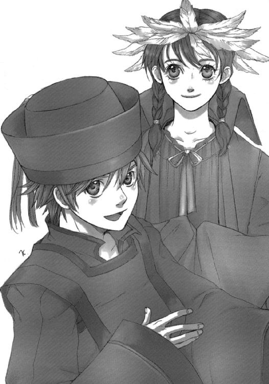
ふと、ここでベルヒトは言葉を切った。固まった表情に、何かが混ざりそうになる。何か、言葉が出そうになる。
「......楽しい夜を......」
キットが不審に思う、その寸前に、ベルヒトは表情を回復させた。
「幻想的な光の行進とともにお過ごしください！」
「うん、本当にありがとう」
アンディがようやくその傍らに立つ。
「ああ。言われなくても、これからもさらに楽しくしっぽりと、夜の盛り上がり......」
「下品な冗談言ったら怒るよ」
「はい」
二人と二人は、くすりと笑い合って、別れた。
「......」
駆け去ってゆく男の子と女の子を追うキットの視界に、強い光が混じり始める。
去った二人と入れ替わり、パレードの光と音が近づいてきていた。その先触れとして、高く灯をかかげたフロートが、地をゆるゆると滑ってくる。船を電飾で象ったフロートの両の舷側には煌びやかな楽隊が段状に座って、賑やかでアップテンポな音楽を奏でている。
その後にも延々と続く幻想的な光と音の行進と、その見物に集まる人々が、二人の子供をかすませ、紛らせ、そして消した。
その、にわかに湧き起こる喧騒の中、キットが口を開いた。
「......可愛い、って......」
「んん？」
冷たい安堵が、こぼれ落ちる。
「私みたいなのでも、きちんと、可愛い、って思えたね」
「ふん、当たり前のこと言うなよ」
アンディは寄り添おうとはせず、キットも寄りかかろうとはせず、二人はただ、それぞれ立って、やって来るパレードを眺める。
そのとき、ぽつり、と、
「あ」
キットの頰を、アンディの髪を、
「雨か」
パレードの光を吸い込んだ水滴が打った。その光の粒は、まるであらかじめパレードを飾り立てるものとして用意されていたかのように、まばらに、細かく、闇を淡い光で埋めていく。
楽隊の演奏も、全くめげずに人を弾ませる音色で熱狂を演出する。
パレードを囲んでいる銀色のバトンダンサーらが、観衆を混じらせた踊りを始めていた。
「予報じゃ、強くはならないって言ってたよ」
「ふうん、ま、雨中のデートもオツなもんだけどな」
天気は、科学の発達の末にも結局、人の思い通りにならないもの（地球気候全体のバランス上、してはならないものでもある）......『現実』の一部として厳然とある。ある程度、気圧を広範囲で調整する〈我田引水〉大変圧衛星も、非常の干ばつの発生時等でしか使用されることはない。雨は降るときに降り、上がるときに上がる。
「デートはともかく、雨のパレードは素敵かもね」
「それを『ともかく』扱いされると、すごくめげるんだけどなあ......」
そんな二人を、いつしか人波と狂騒の渦が取り巻いていた。
情熱と興奮が伝染する。キットはくるりと綺麗に回って見せた。
「することに変わりはないでしょ......さ、踊ろ！」
「へいへーい！」
ややどたついたステップがこれを追う。
パレードを真横に流し、踊りの間を縫って、男の子と女の子が歩いて行く。
「ベルヒト、びっくりしたよ。言っちゃうかと思った」
先をずんずん進むベルヒトの背に、シンメルは声をかけた。答えは、振り返らない背中越しに返ってくる。
「そこまで馬鹿じゃないわよ。ただ、初めてのケースだったから、ちょっと名残惜しくなっただけ......いいお姉ちゃんだったし」
「そうだね。お兄ちゃんもいい人だったよ」
二人はしばらく無言で雑踏を進んでいった。
やがて、パレードも遠い人通りもまばらになってきた辺りで、再びシンメルは口を開いた。
「ベルヒト」
「何よ」
「クールに行こう」
ベルヒトは、どきりとした。
彼の、鋭く強い声。迷いを見透かされたような、いつもの感じ。顔が真っ赤になる。
「わ、分かってるわよ！」
背中を向けていたのは幸運だった。追いつかれないように、駆け出す。
「ベルヒト？」
追って駆け出したシンメルに、誤魔化すため、しかし実際に起こりつつある事態を告げる。やはり、振り返らずに。
「〈悪霊団〉がキャッチしたわ。やっぱり連中、動き出したみたい！」
「!! 僕らがいなくなった途端か。露骨だな」
「情報蒐集から戦闘準備へ、勤務フェイズ移行！」
「事項了解」
二人が目指すのは、ファンシーランドの外れにある中世風の石積みガレージ。その奥に、一台の真っ白なワゴンカーが、まばらな雨に隠れるように、密やかに佇んでいる。
雨中、幻想を撒くパレードの光に紛れるように、キットの心臓につけられた赤い一点。
それが、レーザーサイトからのものだと気づいたときには、すでに遅かった。
「可愛いな、彼女......死なせたくはないだろう？」
なんともレトロな台詞を、アンディは背中で受け取った。
まあ今時、素人への視覚的な威嚇程度にしか使えないレーザーサイトで（しかも雨中にだ）話を持ちかけてくるような人間だ、古風で偏った趣味をしているのだろう。
「アンディ、どうしたの？」
キットが突然立ち止まったアンディを、怪訝な顔で見た。そしてその後ろに、このパークのマスコットキャラクター、『白兎のサイモン』の、頭でっかちな着ぐるみが不自然な近さで立っているのに気づく。ふと目線で確認すると、周囲にも幾つか、立ち止まった着ぐるみが。
（で、胸のこれは......アレよね......）
キットは余計に騒がず、暴れもしなかった。ただ、目線を険しくして、こういうときに頼りになるはずの男を詰問する。
「......色ボケしてた？」
「ボケるほどねえだろ、っと!?」
答えたアンディの背中を、サイモン人形の大きな掌が叩いた。
「喋るな。押す方向に歩け」
小雨の中、幾人かで作られた大きな円が、アンディとキットを中心に、ゆっくりとパレードの熱狂から離れ、人気のない場所へと進んでゆく。
その間、着ぐるみの奥から伸びる赤い光のマーキングは、常にアンディではなく、キットの全身に付けられていた。
「なるほど。天下無敵のアンディ様、唯一の弱点を狙うたぁ......あんたたち、よく調べてるな」
「何を今さら。お得意さんなら、みんな知ってるでしょ」
「喋るなと言っている」
「痛っ!?」
サイモン人形の、やはり大きな靴による蹴りが、キットの細い脚を乱暴に蹴上げた。よろけた彼女を支えたアンディの眉が、ぴくりと跳ね上がる。
サイモン人形が、その二人を後ろから見下す。
「次は彼女の血を見ることになるぞ」
「へいへい、分かりましたよ」
素っ気なく、アンディは答えた。
その腕の中で、顔を見上げるキットは、理解する。
（あ、怒ってる......）
そんなことを感じている場合でないのは分かっていたが、しかしキットは嬉しかった。静かな表情の奥に憤怒の炎を燃やしてくれる男と、その炎を、力によらず感じられる自分が。
その炎を凝縮したような声が、低く漏れた。
「サイモン君よ......一言だけ、いいかな？」
アンディは、振り返って、対峙する。
人形の口の奥から、逆に冷たい声が返ってくる。
「......言ってみろ」
「さっきみたいに、気安く彼女に触らない方がいいぜ。あんたらのためにならない」
サイモン人形は、その、二人にとっては妥当な忠告を、挑発と受け取ったらしい。肩をすくめて見せた。
「そうかい。いい彼氏だな、お嬢ちゃん」
おどけた仕草と言葉だが、声色は冷たいままだった。
「じゃあ代わりに、おまえに触るとしよう」
声の切れとともに、アンディの腹に大きな拳が飛んだ。
「っぐ!!」
くぐもった打撃の音とともにアンディの体が宙に一瞬浮く。全身に、痛みを伝える機能以上の量の電流が走り、視界が急速に暗転してゆく。
「アンディ!! っんぐ......!?」
キットの絶叫を押さえる、別の着ぐるみの手が、彼女の後ろからかぶせられた。
（......バカ、やろ......）
不甲斐ない自分を罵ったのか、忠告を破った連中を嘲笑ったのか、騒いだキットをからかったのか、
理解する前に、アンディの意識は途切れた。
ヴァージョンが去った瞬間から、さっそく危険の報酬である入金が始まった。
「入金ライン、開きました......早いっスね」
通常業務では考えられないほどの巨額の金が、まさに怒濤のようにディビジョン駆除商会のシステム心臓部にしてデータ保持ブロックたるコンピューター〈ポーカーハンド〉へと流れ込んでいるが、しかし素直に喜んでいる者は、この面子の中にはいない。
彼らの間に漂っているのは、やばい橋を渡る時に特有の、隠れた真剣味と静かな高揚だった。
笑みはあるが、それは冒険心の表れであって、可笑しみの類ではない。
それをまさに象徴するような人物、ディビジョン社長が、おもむろに切り出した。
「ゴシップ君、裏を取ってくれないかね」
「は？ この話のっスか？」
「そうだ。他の、さっきヴァージョン君が言ったとおりの企業が他にあるかを、大至急だ」
地下に展開する〈ゾーン〉内社屋の司令室への移動の間も惜しんで言うのだ。かなりの本気、ヤバい状況らしい。
「了解。しかし、条件付けが厳しいっスね」
「全企業を当たる必要はない。駆除屋と非合法武装組織だけに限定して、実際に金が我々のように流れ込んでいる場所が一件でもあるかどうか、探してくれればいい」
「いい、って......前者はともかく、後者は......」
「エリー君、その筋のリストを」
補助情報ボードを手にしたエリーが、正座する姿勢同様、しっかりした声で応じる。
「はい。リスト２９０『要警戒組織』クラス、転送します」
「......リスト受領確認、検索スタート」
質問する気もなくなったゴシップは、さっさと自分の仕事にかかった。凄まじい量のデータが、彼の電子的に特化された超感覚の中を通り過ぎてゆく。しかし、
「前者結果、ゼロ」
さらに数秒遅れて、
「後者結果、ゼロ」
ボギーがいぶかしむ。
「それじゃ、見え見えの虚偽依頼ですか？ 何でそんな手間を」
「む!?」
言い切る前に、とっつぁんが、自分の顔を映したモニターが画面のバックを赤にした。非常事態の合図だ。
「埋設コード切断......爆破じゃ！ 電波妨害も始まっておる！」
「っく!? 暗転ってか、くそったれ！」
外部に伸びていた超感覚を突然切られたゴシップが、失調感に痛む頭を抱えた。
「攻撃だと？ たった今、入金が始まったばかりだってのに......早すぎるぜ！」
「ゴシップ、ぼやいとらんで独立回線を立ち上げろ、緊急監視機構を起動する！」
「ええい、どういうつもりだ、あの女狐？」
罵りながらも、ゴシップはとっつぁんの指示に従い、社の独立制御回線に感覚を移行させる。
ボギーが素早く立って、とっつぁんに言う。
「僕らが出し抜かれるなんて......武器出して！」
「流しの中じゃ！ さすがは四年で五十も裏組織を潰した強盗団だけのことはある」
「誉めてる場合じゃないだろ？ よりにもよってアンディたちが留守の............そうか、それも狙って!?」
ボギーは歯嚙みした。あっちでも何か起こっているに違いない。
ほどなく、外部を経由しない、ディビジョン駆除商会の社屋で独立したシステムが感を得る。
「監視機構に感、区画Ｎ３・Ｗ２に潜伏する集団......ぬっ!?」
とっつぁんの顔を映していた画面が一瞬、リストの羅列に変化、再び顔に戻った。
「き、機動ブイが三機!? 後備砲兵まで連れておるぞ！」
区画遠方から、無翼の戦闘機、あるいは鉄の箱舟のような飛行兵器が、社屋へと進路を取り、接近しつつあった。
機動ブイ（Ｂｕｏｙ＝浮標）とは、浮遊艇の様態から来た通称で、正式なカテゴリ名は対地攻撃機。前現代のヘリの役割をほぼ受け継いだ、対地攻撃と輸送が主任務の低速飛行機種である。大きさも同程度の二十メートル前後で、ローターを持たず、重力制御機関による自在な進退昇降を行う（社の持つ〈チャリオット〉は、その強襲突撃の特化機種）。
「機種は......マクディビットＡＳＡ─64〈シバ〉じゃ！」
社に向かってくるこの〈シバ〉は、機動ブイにおける対地攻撃タイプの典型的な機種である。全体は巨大な装甲ボートといった形態で、その両舷側にミサイルポッドを、上部甲板および船底部に可動式連装ロケットランチャーを、機首に狭くキャノピーを貼ったコクピットの上下に機関砲を備えている。
「えらく本格的だな。強盗団なんて戦力じゃない......ちっ、〈クラリネット〉程度か」
ボギーは、流しの中、醬油瓶や砂糖袋などの横に何気に並んでいる武器の中から、グレネード付きのサブマシンガンと弾倉付きベルトを引き出した。その頼りなさから、思わず叫ぶ。
「〈チャリオット〉は出せる!?」
「機動ブイが接近中じゃ！ システム起動の前に、ガレージを先制攻撃される！」
「はめやがったな、女狐め！ まさか強盗とつるんでやがるのか!?」
とにかく無茶苦茶だ、ここまで露骨で大げさな真似をして採算が合うのか、それともこの行動には他に何か意図が、だいたい自分たちがここまで後手に回ってしまうとは......珍しく慌てる三人の耳に、社長とエリーの、まったく平常通りな声が入る。
「狙いは、安直に考えるなら、我々の〈ポーカーハンド〉なんだろうね」
いつもの、口元を指で隠す思案中の仕草と、これもいつもの、肯定の返事。
「はい。安直に、考えるなら」
たしかに、とっつぁん特製のハードにゴシップ特製のソフトを積み、ディビジョンが味付けした、ディビジョン駆除商会の心臓〈ポーカーハンド〉は、この業界に留まらず、世界でも指折りの、相当に高度なシステムではある。内部に隠された資産や営業経路、情報なども、いろんな意味で、一零細企業のレベルを遙かに超えたものだ。
しかし、その奪取のためだけに、こうも大々的に戦闘を仕掛けてくるものだろうか。もう少し外部とのラインを保持できていれば、他組織の壊滅状況や使用兵器の傾向などから、［ブラックアウト］なる連中の性格を割り出せたのだが。
「さすがは『赤』、手際のいいことだ。それとも、この慌ただしさには複雑な事情があるのかな」
「はい。状況が錯綜、以上に切迫しています。そろそろ危険ですから、地下に......」
その二人の会話を、
「な、馬鹿な!?」
ととっつぁんが切り、同時にボギーは怖気を感じた。
（なんだ!?）
ばん、と待機室玄関の扉に、外から何かが当たる音がした。
センサーに接近を感知された機動ブイは、まだはるか遠くだ。
しかし、扉の前に、既に誰かが！
「！」
とっさにエリーがディビジョンの前に飛び出し、
「っと！」
とっつぁんがさらにその前を鋼鉄の体で塞ぎ、
「どわあっ!?」
ついでにそのゴツい鉄腕でゴシップを社長の後ろに放り込んだ瞬間、
見かけほどヤワではないはずの扉が、外側からの凄まじい衝撃を受けて、砕け散った。
念動力による防御壁でその破片から身を守ったボギーは、
「......このっ!!」
破片が過ぎる間もぎりぎりに念動力の壁を消し、扉の向こうにサブマシンガンの弾を叩き込んでいた。
この〈クラリネット〉軽機関銃は、強化服装着時に愛用する〈ワルツスコア〉突撃銃と比べて非力なことはなはだしいが、この際、贅沢は言っていられない。空飛ぶ武器庫〈チャリオット〉と自分専用の全制空戦用強化服〈ＰＳＧ[I]２ ブラックゴースト〉Ｂ号機は、この階下のガレージにあり、しかも艇長たるキットが不在なのだ。
ボギーの撃った弾は、狙い違わず、玄関扉の枠内に入った。
しかし、その向こうに届かない。
弾き返された。
物に当たっていない。
これは。
（まさか......）
最高に嫌な予感とともに、ボギーは手持ちの武器が頼りない場合の切り札を飛ばした。
「......っ！」
必殺の圧力を持った念動力の塊。
それが空気を押しつぶす不可視の波動となって部屋を駆け抜ける。
普通の人間なら、これを喰らえば踏んづけたカエルのようにぺしゃんこになって、即死だ。
普通の人間なら。
しかし、やはり来訪者は、そうではなかった。
不可視の波動は、ちょうど扉の地点で、反対側からほとばしった同質のものとぶつかり、擬似爆発を起こした。圧力の無秩序な解放が、合金製の扉枠を外側に向かって押しひしゃげさせ、壁を諸共に砕いて引きちぎれた。
「......念動力者か......！」
衝撃の余波を受けるボギーの苦苦しい声が漏れ出る。
濛々とあがる強化コンクリ構造材の煙の中から、恐怖の来訪者が二人、姿を現す。
その片割れが一声、
「ちわ～っす」
ついでに、ぴっ、と崩れた敬礼のように手を上げる。
強盗団［ブラックアウト］の、それが宣戦布告だった。
騒動にわかに湧き起こるディビジョン駆除商会社屋から、丘を幾つか越えた窪地に、長大な砲で天を突く自走砲が数台陣取っている。その一団の後方に、カモフラージュネットをかけた重装甲の機動ブイが一機、潜んでいた。
グリソムＡＳＡ─24〈シェパード〉。ディビジョン駆除商会を襲撃している〈シバ〉よりも一回り大きく、また重武装で、そのシルエットはうずくまったサイを思わせる。戦場での管制と指揮に当たる機種だ。
その装甲と電子装備に包まれた闇の中、一人の男が、破壊した埋設ケーブルに横繫ぎした回線で、外部と通信している。ダークスーツを着た細身の体が、画面の青い光に消え入りそうだ。
「来たぞ」
空気を斬るような声色で、その細身の男は言う。容姿も、それに見合った酷薄さを醸し出している。人間の持つ負の感情の横溢が、本来その容姿にあるべき無機質さを打ち消していた。
「やはり警戒網には引っかからなかったな」
その声を受ける画面に、貧相な初老の男が映っている。濁った瞳の奥に狡猾な光をたゆたわせるその男は、ひどくゆったりとした口調で答えた。
「時間通り......やはり、律義な連中じゃないか。それよりも、回線の遮断は、うまくやったかね？ 外部に、知られるわけにはいかないぞ」
細身の男は短く恫喝する。
「誰に言っている」
「おっ......と、専門家には、要らぬ忠言だったな、ふ、ふふふ......」
「分かっているなら、さっさと次の手筈にかかれ」
「ああ、そちらも、な。お互いの利益のために、せいぜい頑張ろうじゃないか」
細身の男は答えずに、ただ通信を切った。
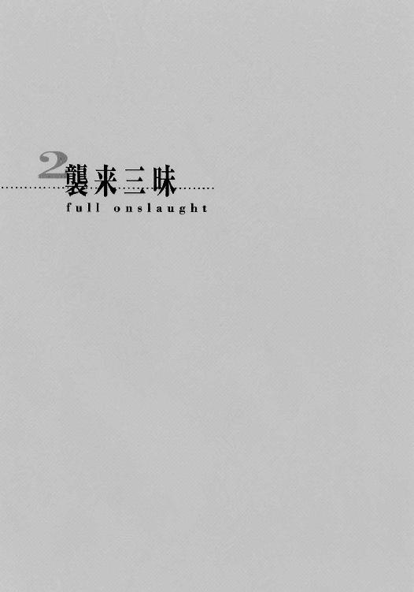
各々、無数の修羅場を経験してきたディビジョン駆除商会の面々だが、しかしそれでも現実というものは、彼らを決して退屈させる気がないらしい。
奇天烈と言うしかない二人組が、彼らの前に立っていた。
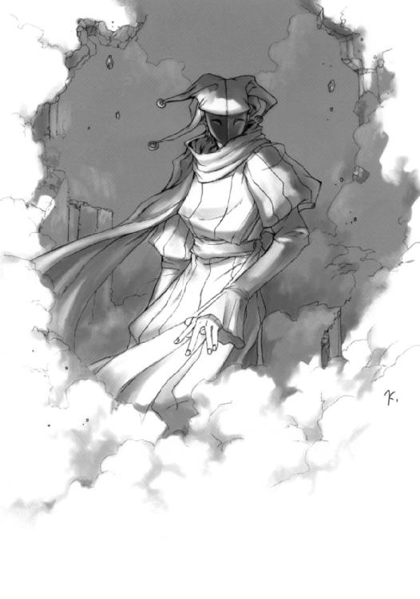
一人は、ぶかぶかの中折れ帽子に膨れ上がった肩、床を擦る裾から覗く爪先の尖った靴。しかも配色は極彩色の赤と黄。まるで......いや、完全に道化師そのものの、異様な格好だった。
しかし、その派手派手しい格好とは逆に、顔は漆黒の、目だけで笑う仮面。右肩からは数字やアルファベット、記号などを一片にした飾り紐が幾筋もじゃらじゃらと垂れている。
もう一人は、別の意味で異様だった。棒立ちした、可憐、その言葉のままの少女である。人形めいた美貌に長いツインテールの黒髪。鮮やかな若草色のワンピースをまとっている。
その可憐な少女が、小型自動車ほどもある、真っ黒な立方体を背負っていた。そこからは、たった今扉を押し砕いた杭打ち機が、支持アーム付きで伸びている。
さすがのボギーが、一瞬呆気に取られた。
場違い、などという次元の問題ではない。ほとんど現実かどうかを疑わせるような光景。
「お初にお目にかかります、ディビジョン駆除商会の皆さん」
道化師が、ひょいと腰を屈めて優雅に挨拶し、
「貴社の悪銭、ぜ～んぶ」
そして、挑戦した。
「没収！」
その言葉の切りを待っていたかのように、杭打ち機が少女の背負った黒い立方体に引っ込み、代わりにチェーンガンが飛び出した。そのとき初めて、
「っ!!」
ボギーは自分たちが危地にいることを思い出した。
ほとんど不意打ちの、重く途切れのない撃発音が二十畳敷きの待機室に轟いた。機関砲弾の嵐が、全てを粉々にする。壁が補強材ごとぶち抜かれ、こたつ板が中心から破裂し、衝撃波で皿が砕け飛び、カーテンが縮んでから爆発する。
反撃どころではない。背後の同僚たちを守るために、ボギーは必死の念動力で、この弾丸の雨を弾き飛ばした。
（......来る！）
その彼の特殊技能者としての超感覚が、同じ力の脈動を感じる。
道化師からだ。奴が、特殊技能者......それもボギーの初撃を跳ね返して余裕を見せられるだけの力を持つ念動力者なのだ。それが、チェーンガンの掃射と一緒に襲いかかってくる。
（まずい、破られる！）
「緊急退避いっ!?」
叫んで振り返った彼は、今度は味方に驚かされる。
彼の背後、丁度部屋の真ん中から向こうの床が、エレベーターのように下に向かってスライドしていた。（彼らだけ）地下社屋内に退避して応戦準備を整えるつもりなのだ。
「んじゃ、お先～」
「しばらく時間稼ぎを頼むよ」
「頑張ってね」
とゴシップ、ディビジョン、エリーらが下へとスライドしつつ、順番に薄情な別れを告げる。
「あ、ずる、っと!?」
言った瞬間、自分の正面に念動力の波がぶち当たった。必死に力のバランスを取って、これを横方向に受け流す。かけられていたスクリーンごと、右手の壁が爆砕した。
その衝撃に思わず手で顔をかばうボギーに、
「援護はしてやる」
と、やはり下がってゆくとっつあんが告げた。
瞬間、神棚が火を吹いた。
罰当たりにも、強力な徹甲弾を連射する機関砲が、神棚の奥からにょっきり伸びていた。
反時計回りに高速回転する六連装砲身が毎分八千発の発射速度で、無礼な客をもてなす。回転砲身冷却用カバーの『Ｂｌｅｓｓ ｙｏｕ!!』という書き文字は、無論とっつあんの手によるものだ。
この制御をとっつあんから受け取ったボギーは、融合視界内に射撃管制ソフトを立ち上げ、道化師を狙う。向こうのチェーンガンも、無秩序に部屋を壊すのを止め、ボギーに指向した。
お互い、銃器の援護を受けての念動力合戦だった。
敵弾の集中する場所に力を集中し、味方の弾が抜ける場所をできるだけ開ける......正確な力の制御と状況の把握が必要な、まさに名人芸的な応酬。
業界指折りと言われる腕利きの特殊技能者であるボギーでも相当に苦労するこの作業を、しかし対する道化師は難なくこなしているようだった。濛々たる硝煙と銃火による混沌の視界の中、高笑いさえ聞こえる。
「かっかっか、なるほど凄い！」
やがて、向こうの硝煙が薄れ始めた。キーン、と耳障りな、金属が空回りする音が響く。チェーンガンの弾が切れたらしい。回転が止まり、また箱の中に引っ込む。
ボギーも、神棚の機関砲の掃射を止めた。
「ただぶっとばすだけ、って奴とは相当やりあってはきたが」
道化師は、まるで舞台の空白を埋める役者のように独演する。
「俺みたいな装備もなしに、ここまで念動力を制御できる特殊技能者ってのは、まったく初めてだ！ 感服するよ！」
（装備？ 脳のパターン・モザイクと、簡単な外部出力以外に動作原理を持たない特殊技能者に何の装備が？）
とボギーはいぶかしんだが、ともあれ対処が先だ。訊かずに、叫ぶ。
「......そうかい！」
機関砲の照準と、錐のように意識をまとめた念動力の焦点を、空間上で同調させる。
分厚い装甲をも一瞬でひねり潰す、その確信とともにボギーは必殺の一撃を放った。
ボギーは、
「......ふっ！」
と道化師から漏れた笑みだか気合だかが、その黒い仮面の笑みを深めたような錯覚を覚えた。
その認識は、視覚的には間違っていたが、心境の察知としては正しかった。
迫る力の前に、道化師の右肩から下げられていた記号の飾り紐が割って入っていた。それは記号の一片ごとに別れて、散る。それら記号片が、波紋のような同心円状に配置され、
そして、ボギー必殺の念動力と弾丸の多重攻撃を、その円の上で受け止めた。
小揺るぎもせず。
驚くボギーに向けて、今度は道化師が叫んだ。
「お返し、だ!!」
円が、中心に置いた一個の記号片からせり上がった。そのせり上がる動作がそのまま円錐状に伸びて、槍の穂先のようにボギーへと向かう。
「く!?」
ボギーはこの先端に念動力を集中させるが、穂先はそれをものともせず驀進する。
（......っこの!!）
必死の集中で、ようやく円錐の槍は止まった。ボギーの、ほんの数十センチ先で。
「はっ!?」
とある気配に気づいたボギーは、とっさに自分を念動力で弾き飛ばし、下がった。
案の定、止まった槍は道化師の意を受けて、瞬時に円形に再展開した。留まっていれば、捕らえられていたかもしれない。
その記号片を介して広がる不可視の力の向こう、掌を広げてこれを制御しているらしい道化師が、立方体を背負った少女を連れて、ゆっくりと歩いてくる。瓦礫を踏み潰す乾いた音が、やけに耳障りに感じられる。
「下がって下がって、背には壁......いずれそうなる、今回も」
固まった笑みが、絶対の余裕を満たして、ボギーを追い詰める。
アンディがようやく目を覚ますと、そこはいかにも幽閉場所に相応しい、逆に言えば工夫のないコンテナらしきものの中で、傍らにはキットが行儀悪くあぐらをかいて座っていた。どちらも後ろ手に、両手首から先を丸ごと一塊の凝固材で固められていて、指一本動かせない。
「やっと起きた？」
さすがに不機嫌そうな、キットの声色である。
アンディは身を起こしつつ、凝固材より硬いジョークで誤魔化そうと試みる。
「や、はは、いつまでたってもお目覚めのキスが来ないんでね、仕方なく自力で......」
アンディはコンテナの中を見渡した。頑丈そうな鋼板で組まれた細長い直方体で、片端には全面両開きの扉（今は半開きになっている）、もう片端に格子付きの採光窓と、これだけは高価そうな通話装置がある。大型トレーラーか何かの荷台らしい。今は動いていないようだが。
「......え～、その」
恐る恐る、アンディは訊く。
「何もされなかった？」
ぶすっとした顔で、キットは答える。頭の保護面と、腰に付けていたポシェット大の工具袋が、コンテナの中ほどにぞんざいに放り投げられている。
舐めているのか、単に無頓着なのか、それともすぐに始末するからか。
「後ろから抑えられた時に唇切った。放り込まれたときに保護面と工具袋取り上げられて、腰打って、今はお尻が冷えてる。おなかも減った。後ろ手の姿勢が辛い」
「あ～、その」
「言い訳はなし」
「はい、すいません」
しょんぼりとするアンディ。
キットはくすりと笑って、意地悪をやめた。
「......でも、怒ってくれたから帳消しでいいわ」
「そりゃありがたい。これからもどんどん怒っちゃうぜ......で、どうだった？」
この二人の間でしか通じない、主語と、事情の説明を欠いた物言い。
キットは質問の意味を正確に理解する。
「大丈夫、〈プラスマン〉じゃない、ただのサイボーグよ」
「俺ん家は、こんなまどろっこしいことしねえだろうし......だとすると」
二人は、いささかうんざりしながら、ある人物の胡散臭い笑みを思い浮かべた。
「とばっちりかな？」
「あー、たぶんな。その筋だとしたら、相手が多すぎて分かんねえや。とりあえず、帰って問い質してみるか」
そこに、半開きになっていたコンテナの扉の向こうから声がかけられた。
「残念だが、簡単に帰すわけにはいかない」
アンディは、この声に聞き覚えがあった。さっき自分を殴ったサイモン人形の中から響いていた、冷たい声だ。
重さにきしむ扉を開けて、大柄な男が入ってきた。太い骨格が、そつなく着込んだスーツの上からも分かる。いかついが、深さと重さの欠けた面付き......危険なタイプの人間だ。
アンディは、その格好と仕草、自分たちを捕らえた手口から、その男の身元を推測する。
並みの人間なら、あのディビジョンと事を構えようなどとは思うまい。だから、両極端などっちかだ。つまり、ディビジョンの恐ろしさを理解していない馬鹿か、理解した上で襲いかかってくるやり手か、だ。
こいつはそのどちらか......現段階で判断するには、情報が足りなさ過ぎる。
アンディは探りを入れることにした。
「あんた、いいパンチしてたな」
サイモン人形の手の中に、スタンガン系の装備を隠していたことに対する皮肉だ。
しかし、男は悪びれる様子もない。おどけた様子で、しかしやはり冷たい口調で答えた。
「ああ。ドラム缶を殴るのが趣味でね」
ドラム缶というのは、痛覚を遮断したアンドロイドを指す蔑称だ（同じく、痛覚を遮断した人間はハムと呼ぶ......いつの時代も、人は悪口を発明する手間だけは惜しまない）。
「......しかし、おまえは違ったようだな」
男は、床に座ったアンディの前に立つ。
「あの程度で気絶されるとは思いもよらなかったよ。なぜ損傷をデータ化しない？ ひょっとしてマゾか？」
あからさまな侮蔑にキットはむっとしたが、アンディは軽く切り返す。痛烈に。
「まさか。痛みがないと、倍返しするときにやる気が出ねえからさ」
この痛烈さは、彼と同じ、突入要員の相棒に影響されてのものだが、慣れていないと、不必要に相手を刺激する羽目になる。
この場合も、そうなった。
「いいねえ、その身の程知らずな台詞」
男の細められた目が、残虐な光で満たされる。
「こっちとしても、遠慮なく痛めつけられるってもんだ！」
言うや革靴が、アンディのあごを蹴り上げた。
「がふっ!!」
「アンディ！ やめなさいよ、卑怯者！」
男は、その罵りに、むしろ気持ちのよさそうな顔をする。
「これでも友好的に振る舞おうとしているんだがね」
「ゆ、友好的な誘拐犯、ね......正しい政治家や無害な建前狂信者くらいに噓臭えっ！」
再び蹴りが入る。
腹に深々と爪先が埋まって、たまらずアンディは横倒しになった。
「は、せいぜい倍返しの勘定でもしているがいい。地獄でまた会えたら精算してやる」
「......馬鹿言え、それじゃやり逃げだぜ。天使が味方の俺様は天国行き決定なんだからよ......」
「アンディ、もう黙って！」
キットはアンディに覆い被さろうとしたが、男に蹴り飛ばされてしまう。
「うぐっ！」
「キット!! てめえ......それ以上その子に手ぇ出しやがったら、倍返しが重傷を超えて、命に届くぜ」
「はははは！ この状況でよくそんな強がりが言えるな、虫けらが。まあ、ほざくのだけは自由だが......しばらく待っていろ。全てが終わった後で、貴様らを社屋の焼け跡に案内してやる。そうだな、ついでに後追いも手伝ってやろう......出せ！」
男が通信機に向けて叫ぶと、鈍い振動がコンテナを揺らし始めた。車が走り出したのだ。
（焼け跡、ね......）
この状況でもアンディには、焼け跡に転がるこの男の仲間たちの死体と、勝ち誇って立つ自分たちの社長、という図しか思い浮かべられない。
それは信用と言うよりも、ありきたりの事実のような確信。
が、着いた先がそうでも、こっちが死体になっているのでは話にならない。
何より、キットが、キットを、絶対に。
（さて、どう反撃したものかな）
これは自慢なのだが......殺す算段だけには詰まったことがない。
ファンシーランドの広い敷地の片隅に、中世風の石積み城壁で囲まれた、人気のないガレージがある。壁一枚越えれば外に出られる場所だが、主要幹線道路向きではないので、城門を模した小さなゲートは自動式で、警備も機械任せになっている。
そこに、雨中寂しく、ぽつん、と佇む真っ白な大型ワゴンカーが一台。
その中では、男の子と女の子が着替えを行っていた。
体ごとの、着替えである。
服を全部脱ぎ捨てて（最近ベルヒトは、この時に仕切りのカーテンをするようになった）、二人の小柄な体がすっぽりと収まるカプセルの中に入る。
ベルヒトが言う。
「ルーとあのお姉ちゃん、会わせてあげたかったな......ルーってば最近、ニコルのことですごく辛そうだもん」
彼女の姉のような（といって何か積極的にしてくれることはないが）、ツインテールの少女が、常の無表情を曇らせる様を見ることが、最近多くなった。キット、という今日出会った少女になら、何か助言がもらえたかもしれない。
そのカーテン越しのベルヒトの言葉に、シンメルは呆れ声で返した。
「そんな話をしてたのかい？」
「あ......い、いいじゃない、別に」
（やれやれ......クールに行こう、って言ったばかりなのに）
まあ、威勢のわりに反抗されたことはないし、非合理な行動を取ったこともない。特別問題もないか、とこちらはあくまでクールなシンメルである。
覗き窓もない、円筒形の棺のようなカプセルの扉が閉鎖されると、特殊な溶液の注入が開始される。二人の体を構成する軟質素材が、これに触れて溶け始めた。触感は遮断しているが、やはり気分のいいものではない。
だから二人は、この換装作業時、通信で雑談することにしている。
《でもまあ、それを言うなら、ニコルの方も相当、悩んだり疲れたりしてるみたいだけどね》
《えっ、ニコルが？》
ベルヒトは意外に思った。彼女はニコルを、あの、いつも軽く剽げている黒い仮面の男を、悩みや疲れなどとは無縁の存在だと......むしろルーの悩みに気づいていない鈍感男だと思っていた。しかしシンメルにとってはそうではないらしい。なんだか悔しかった。
《......そう、かしら》
首から下の全身が溶解され、体内の駆動部と神経節が剝き出しになる。このカプセル内が暗闇であるのは、その意味では大いに結構なことだった。
洗浄剤も兼ねる高密度溶液に浮かぶシンメルは、小さく頷く。
《うん、そうだよ。本当は、今みたいなときに、こんな例外中の例外みたいな任務につくのは嫌だったんだけど......》
今まで標的といえば、兵隊もどきやギャング、マフィアなど、問答無用の敵ばかりで、こういう一般企業の襲撃、しかも自分たちが二手に分かれて戦うというようなケースはなかった。
つまり、ニコルとルーが〈ゾーン〉内に突入してシステム・武力の両面を制圧（後ろ暗いところのある連中は皆、重要なものを〈ゾーン〉内に隠す）、境界面外に網を張ったシンメルとベルヒトが逃げ出す者を待ち伏せ、片付ける、というのが彼ら本来の役割分担だった。
それが、今回の指令は、まったく違っている。『相手が少人数だから、分断して、さらなる戦力低下を狙う』、というニコルの解説は......彼自身も恐らくは疑問を持っているだろうが......こじつけのようにシンメルには思えた。なんだか、嫌な感じだった。
その指令の胡散臭さを証明するかのように、自分たちに割り振られた標的二人を発見した彼らは、さっそく不確定要素に出くわすことになった。
標的の周囲に、正体不明の、妙な連中が密かに張り付いていたのだ。
彼としては、その連中さえいなければ、行道ででも二人を強襲していたところだ。ベルヒトに言われたように、慎重過ぎると自身思わないでもなかったが、それでも今回の指令の不気味さが、彼を自重させた。ニコルも、ルーも、ベルヒトでさえも抱いている、自分たちの存在に対する不安がそうさせたと言ってもいい。
（ニコルたちの方でも、何かあるんじゃないかな）
いやいやだが、それでも仕方なくやってきたことが、終わろうとしているのではないか。
用済みの存在として消される、という形で。
彼ら四人の、逃げられない、その不安。
せめて万全を期そうと思い、自重して、ベルヒトがわがままを通して、押し切られて......
（どうやら、僕もクールというには程遠いらしいな）
そうやって標的である二人に接近した結果、ベルヒトは相手に何らかの感情を抱いてしまったようだ。やはり許すべきではなかった。まったく、嫌な中でも極め付けに、嫌な任務だ。彼女に、そういう形での『殺し』をさせる羽目になってしまうとは。
とりあえずは、二人に付いて回っている間に、〈悪霊団〉の配置は終わった。周囲の連中への対処も楽に進むだろう。すぐに終わらせてニコルたちに合流する、それが当座の作戦方針だ。
（でないと、何が起こるか分かったもんじゃない）
《......シンメル、なに、黙りこくってるの？》
強気のように見えて、その実すぐに不安や弱さのボロが出てしまう、この職務に向いていない女の子。何とかしてやりたい。しかし、
《ううん、なんでも......どんな任務であれ、僕らに選択権はないんだよね》
《？ ......そ、そりや、そうよ。私たちは、そのために存在を許されているんだもの》
彼女なりの、諦めの言葉。
（そう、諦めているんだよね......僕らは皆......でも）
カプセルの、入り口の反対側が開いて、二人はその奥へと溶液の流れに乗って入る。その全身の神経節から出る微量の誘導波に、奥から伸びた対の接続部が繫がってゆく。最後に、二人の体の駆動部は収縮して、奥の入れ物にすっぽりと収まった。
鋼鉄の、入れ物に。
《戦闘機構体〈ケーニヒ〉起動》
《戦闘機構体〈ケーニギン〉起動》
その入れ物が閉じ、二人は、あらゆる感覚を得る。
体としての、あらゆる感覚を。
各部をチェックし、回路をクリアにしてゆく。
ふと、シンメルは呟いた。
《やっぱり僕は、ここから出たいな》
《え？》
溶液が排出され、衣替えを終えた二人はカプセルから出る。入るときは大きすぎたカプセルの入り口は、しかし今はぎりぎりで二人を通していた。
無音かつ自然な彼らの駆動を、点灯された薄緑色の照明が照らし出す。
その一体、自動車並みの大きさを持つ、鈍い銀色の狼が、シンメルの声で言った。
「僕らが、この稼業から足を洗えないかな、って......いや、洗うべきだ、ってこと」
カーテン越しに、寸詰まりで腕だけが長い、大柄の西洋鎧が、やはりベルヒトの声で答える。
「そりゃあ、考えたことなら、いくらでもあったけど......」
濁されたその言葉の続きを、シンメルは容易に続けることができた。
「それができるのなら、あのニコルがやってないわけがない。ルーのためにも」
「私たちのため、ってのも、少し入っててくれると、嬉しいね」
「うん」
実際、ニコルは......あの、見かけによらず律義な苦労人である彼らの保護者は、その準備を色々としてくれているようだった。彼の諦めは自分に限ってのもので、被保護者たちを何とか生かそうともがいている......そうシンメルは考え、感じていた。とても嬉しかったが、少し悲しくもあった。
（少しは僕らにも、苦労を分けて欲しいな......この任務が終わったら、それも含めて色々と相談してみよう......）
と、しっかり者の男の子は思う。
とにかく、この厄介そうな任務を果たすことが先決だった。
体に力を入れる。頼もしい駆動と強度を実感する。
二人は、人型の内包、あるいは着装という機構自体にその構造を制限される強化服などと違い、換装によって戦闘に対応する本式の戦闘サイボーグだった。
ワゴンカーの天井が音もなく開き、夜の雨を突いて彼らは跳躍した。
ガレージを囲む中世風の石積み城壁の上に、巨大な銀狼と異形の鎧が、風切る音だけを伴って立つ。街灯の薄明かりと小雨の中でたたずむその威容は、まさに幻想の光景だった。
やがて銀狼が問い、
「ベルヒト、〈悪霊団〉の囲みは？」
鎧が答える。
「完璧よ。いつでも仕掛けられるわ」
「よし、射点を確保し次第、攻撃を開始する」
「事項了解」
壁上の影が小雨に紛れ、失せる。
社長たちが降りた後の床面は幾重もの鋼鉄のシャッターで閉じられ、ボギーはまさに孤軍奮闘の態である。
《座標55移動要求》
（了解......っと！）
とっつぁんからの指示を受けて、ボギーは念動力で射撃姿勢のまま体を弾き飛ばす。強化服を着装していない身にはかなりきついが、この際文句も言っていられない。
ついでとばかりに〈クラリネット〉の銃身下に取り付けられたグレネードをお見舞いしてみるが、やはり、その直撃寸前に空気に力感の波紋が広がる。念動力の防御壁だ。衝撃で爆発はするが、煙幕程度の効果しか得られない。
その煙の中、ボギーが飛ぶ先に、跳ね上がって壁となっている畳があった。なんとまあ、江戸間用の本いぐさ畳の裏に、五センチ厚の複合装甲が貼り付けられている。
その影に滑り込んだボギーは、待機室内の状況を、別途のカメラはじめ各種センサー類からの情報で把握する。この辺りのフォローに、さすがにとっつあんは抜かりがない。
（その手際で、僕もさっさと下に降ろしてくれればいいのに）
などと、さすがのボギーも心中ぼやく。
あの道化師の念動力は、自分と同じ、物理的に手を伸ばせる範囲に力を及ぼす『伸長作用型』らしい。視認したものしか打てない『直接認識型』よりは強力だが、あらゆる障害を越えて標的を狙える『自在干渉型』（もっとも、この能力者はほぼ全員テレパシー系だが）ほどではない。
とはいえ実のところ、この型の特殊技能者には遮蔽物など関係ない。だから道化師は単に、自分の念動力との相殺という、力のロスを避けているだけなのだろう。
なんとも余裕のあることだ......と思う間に、少女の背中の箱から飛び出たロケットランチャーから砲弾が打ち出された。弾道予測。着弾点は自分の、
（直上か！）
相当に戦い慣れしているらしく、対処の間が異常に短い。
ボギーは妨害・回避行動は取らず、目の前の畳装甲を床から引っぺがして頭上に掲げた。砲弾と同時に念動力が目の前から飛んでくるはずだからだ。
そしてやはり来た。
一応は予想通りだが、きついことに違いはない。
「っこの！」
念動力の防御壁を目の前に展開すると同時に頭上で着弾、爆発。
グレネードの爆炎を介して、目に見えない衝突が姿を現す。それは無秩序な竜巻のようであり、また明確な方向性を持った激流のようでもある。
その力は弾け、飛び散り、受け流される。
ボギーはその中心で、上と前の凄まじい衝撃から辛うじて身を守った。ほとんど悲鳴のように求める。
《とっつぁん、もう限界だ！ はやく退路を!!》
その言葉を肯定するように、神棚ごと機関砲が爆砕される。ロケットランチャーは抜け目なく連射されていたのだ。とっつぁんも焦った声で応答する。
《む、床の間じゃ！》
なんて所に、と呆れていられる余裕もない。ボギーは防御壁を形作っていた物理干渉力を反転、自身の身をほとんど直線状に、後方の狭い床の間へと撃ち飛ばす。飛んだ後の床面が、支えの力を失って、落ちてきた畳装甲もろとも、一瞬でぐしゃりとひねり潰された。
それを尻目に、ボギーは床の間の床に開いた穴から、花瓶の残骸を引き連れて落ちる。
地上社屋の、鉄骨で組まれた基部を過ぎ、さらに下へ。すぐに広い空洞状の地下部が現れる。その、地面を浅く円柱状にくりぬいた場所の底面円周に、下方に向けて展開された異空間ポケット〈ゾーン〉への入り口〈天使の輪〉が煌々と輝いていた。その輪の中は、見た目にはいくつものシャフトを突き立てている黒々とした地面だが、実際には境界面＝『向こう側への見えない入り口』だ。
ボギーはその向こう側にある地下社屋、ディビジョン駆除商会の本体へと逃げ込む。
この、人類に新たな地平......というより自閉を与えた、便利この上ない異空間ポケットは、出入り口である境界面を、上部わずかに削り取った球形をしている。〈ゾーン〉内の建造物は概ね、この球形にわずかな余裕を持たせた金魚鉢のような形態をしている。
ディビジョン駆除商会地下社屋も、その例外ではない。〈ゾーン〉の内壁である空間殻面が発する薄明かりに照らされた地下社屋の、円形をした屋上部が、境界面をくぐったボギーの真下に現れる。エレベーター等、地上から下ろし伸ばされた太いシャフトが何本も突き立つ、無愛想なコンクリ材の床だ。
そこに許容限界ギリギリの衝撃で着地したボギーは、倒れこんで大きく息を吐き、一声。
《早く強化服か、せめてインナースーツを......このままじゃ、やってられないよ！》
彼はまだ濃紺のパジャマ姿のままだった。
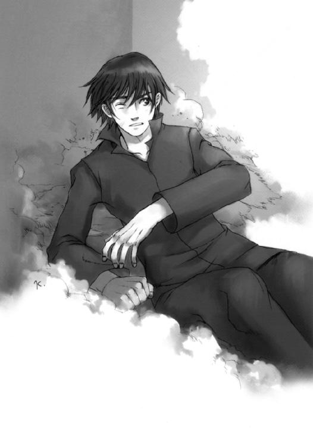
硝煙に未だけぶる待機室で、二人は声を交わす。
まずは軽く、道化師が、
「初っ端から逃がした、ってのは初めてだな。やるねえ」
そして平淡に、少女が。
「ニコル、笑ってる？」
「ああ、変わったケースには、やっぱ、変わった相手が出てくるもんだ」
いつもと違う指令。
同じ頃にシンメルが抱いていた不安と疑問を、この道化師も抱いていた。彼ら四人組のリーダーとしての、三人の保護者としての、不安と疑問。
いつもと違う相手。
手強かった。少人数だからと侮ったわけではなかった。むしろ、早々にこの妙な任務を終わらせようと、ルーともども全力で襲いかかった。しかし結局、先制攻撃はいなされた。
いつもと違うやり方。
さらに今回は、シンメルとベルヒトの援護がない。境界面を塞ぎ背後を守る、頼りになる二人がいない。我武者羅に攻め立て、一気にカタをつけねば、何が起こるか分からなかった。
それとも、何かが起こりつつあるのか。
（まさか..................いや）
胴震いするような恐怖を仮面の奥に隠して、道化師は軽く言う。
「さて、追うぞ」
少女は、やはり平淡な声とともに、指を差す。
「エレベーター」
「ダメだ。罠を張ってるに決まってる。床から行こう」
「事項了解」
少女の背負った黒い箱の両側面から、杭打ち機が二つ飛び出した。
屋上部から一階下は本来、皆が地上＝〈ゲンセ〉から持ち込んだ荷物をとりあえず置いておくために設けられた場所だが、実際はとっつあん専用物置と化している（『輸送ターミナル』なる偉そうな呼称は社長とエリーしか使わない）。最低限の照明の中、このマッドな機械老人の怪しげな研究資材が乱雑に、所狭しと詰め込まれている。
《連中、床をぶち抜いて下ってきおる。人の家だと思って好き勝手しおるわい》
その片隅で、ボギーはとっつぁんの指示を受けて、強化服用インナースーツのスペアを見つけ、急ぎ着込んでいた。袖を通しながら、とっつぁんと交信する。
《強盗のマナーなんでしょ......迎撃システムは？》
《無論、山ほどある》
地上社屋基部と地下部......太く短い円筒形になっているその壁面は、攻撃兵器で埋め尽くされていた。砂粒一個も通さない、通すなら灰燼に帰してから、という無駄に大げさな仕掛けだ。
ボギーが通り過ぎただけのそこは、しかし侵入者にとってはまさに地獄への降り口となる。
《......よし、来い》
なる、はずだったが、
《む？》
（......？）
とっつぁんの困惑した唸りと同時に、ボギーは違和感を覚えた。
最初に連中が扉の前に立った時と同じ感覚。
迎撃システムが作動しない。しかし、連中は近づいている。この感覚は？
《どういうことじゃ!? ボギー、確認してくれ！》
ボギーはヘッドギアをつけながら、慌てて屋上部への階段を駆け上る。その床面出口から、首と〈クラリネット〉の銃口だけを出して、違和感の正体を確かめようと、境界面を警戒する。
やがて、
「っ!?」
センサーがロストし、しかし自分はたしかに感じるそれが、天井に張られた虹色の湖面のような境界面から、雫のようにぽつりと舞い降りた。
それは不思議な、存在感だけで捉えられる不可視の球。
屋上部に降り立った球は、瞬時に弾けた。その中から道化師と少女が現れ、華麗な動作で降り立つ。弾けた球は、あの記号片へと分解し、また男の肩に飾り紐として連結された。
《......認識操作だ！》
《なぬ？》
他者との同調能力であるテレパシーの亜形。
本来はテレパシストが相手の認識力を操作し、幻惑する力だ。それをこの道化師は、自分たちを囲む記号片にその力を送り込むことで、逆に自分たちを他人から隠すのに使っている。センサー類が完全に出し抜かれたのも無理はなかった。
（なるほど、連中が誰にも捕まらないわけだ）
ボギーが彼らを認識できるのは、特殊技能者として、その能力の行使自体を感じることができるからだ。だとしても、よほど注意を払わなければ分からない。現に、待機室では不意を討たれている。
《強盗団なんてレベルの敵じゃないな。とっつぁん、センサーを僕の融合視界とリンクさせて》
《ぬ、しかしそれは》
ボギーが常に、この危険な二人組に張り付いていなければならない、ということだ。
《でないと連中、迎撃システムを素通りして奥まで踏み込んでくよ。多分、他の組織も、この手で一気に畳み込まれてるはずだ。そうなってからじゃ遅い》
《むう、たしかに》
《よろしく......ん、連中、気づいたな》
がり、と少女が靴先をこすって、ボギーの方に振り向いた。人形のように可憐な立ち姿の少女。その少女が黒くてデカい箱を背負い、そこから伸びた二本の支持アームの先にそれぞれゴツい杭打ち機がくっついている。なんともアンバランスというか、シュールな眺めだった。
少女に釣られて道化師も、ひょい、と体を回す。忌々しい笑みの仮面が、その奥に輝く瞳が金色に輝いてボギーをねめつけ、
そして、お軽い口調で、不気味に告げる。
「やあやあ、道化師は、常に推して参るものでね」
ディビジョン駆除商会最下層にある社長室。
その無駄に広く豪勢な、しかし派手でも下品でもない調度の部屋は、非常時には司令室となる。襲撃から十分と経たずに地下社屋まで侵入されるというのは、創業三年で最大の危機だ。
今、その社長室の左右両壁面からは黒光りする無骨な機械類が突き出して、とっつぁんとゴシップが応戦態勢を大急ぎで整えている。
常は各種名画を映し出す社長席背後のスクリーンも、明度を落として戦闘状況を上書きしている。ちなみに今スクリーンの壁紙となっているのはレンブラントの『夜警』だ。
「それにしても、想像以上の難敵じゃな」
社長から見て左側の壁面、まるで強化服ハンガーのような設備に体を連結させたとっつぁんが、深刻な面持ちを壁面のモニターの一つに映して言った。
社長席に余裕の表情で掛けるディビジョンが、机と椅子を床ごと回転させた。『夜警』を見ているのか戦況を見ているのか、緩やかな仕草でスクリーンを仰ぐ。
「そうだね。でも、この程度の覚悟はしていたよ」
「最初から絶体絶命の覚悟っスか？ 社長も案外悲観的なんスね」
とっつぁんと反対側の壁に迫り出したコンソールの前に座り、各種システムを立ち上げるゴシップが、内容ほどに深刻ぶることもなく続けた。
ディビジョンは、この期に及んでも笑みを浮かべる。
「賭け事においては、危険度と利益は概ね比例する。君はその忠実な実践者だったように思うんだがね、ゴシップ君」
釣られてゴシップも笑ってしまった。
「くく、なるほど、分かりやすい説明をどーも......ほい、全監視装置リンク完了、しばらくボギーに頼りっきりっスね」
「状況が状況だ、頼らせてもらおう。その分は、後できっちり払わせるさ」
ディビジョンは言って、彼の右後方という定位置に立つエリーに目を向けた。
「はい。仕掛けた方々に」
やれやれ、物騒なやり取りだわい......と画面の中で苦笑するとっつぁんは不意に、完全に意外な事態を、彼らの直上、つまり〈ゾーン〉の外に認めた。
「......な!?」
「どした、とっつぁ......っ!!」
尋ねるゴシップの目の前で、画面の基調色が赤く......エマージェンシー・パターンへと変更される。同時に、その画面に状況が表示された。
「地上社屋が攻撃されてる!? どこから？」
「接近中の機動ブイじゃ！」
内部の騒動に気を取られている間に、三機の機動ブイ〈シバ〉が社に到達していたのだ。その状況を、別途からのカメラ映像が、まるで他人事のように映し出す。
見慣れた貧相なコンクリ二階建ての横合いを、わずかに下降する直線軌道を描く円筒形の物体が次々と打ち、爆発させる。機動ブイ〈シバ〉の、対地ミサイル攻撃だ。その噴煙と炎に穴を穿つように大口径機関砲の弾丸が飛んで、社屋を削り取り、衝撃で破裂させてゆく。
攻撃は一機からのものだけではなかった。〈シバ〉三機ともが、遠巻きに、機首を社屋に向けた定点旋回による完全掃射態勢をとっていた。
多方向から受ける爆発と打撃に、看板が紙屑のようにぐしゃぐしゃになり、壁と鉄骨が弾けよじれ、コンクリ構造材が濛々たる黒煙を吐き出し......最後に、極め付けが来た。
「後備砲、砲撃開始!!」
「野郎!!」
とっつぁんの報告にゴシップが罵りで答え、
そして社屋は巨大な運動エネルギーの直撃と高性能炸薬の破裂の中、
粉々に吹き飛んだ。
同時に映像が途切れる。
地下社屋につがなっていた中継装置の方も、完全破壊されたのだ。
『地上社屋建材〈ゾーン〉内に崩落中』の警告音の中、四人はただ画面を見つめていた。
その、時間にすれば、ほんの三、四秒の空白を破ったのは、ディビジョンだった。
「......弁済項目の中に、精神的苦痛を含めるのは、私の趣味ではないのだが」
ゆるりとした口調は、獲物を足下に敷いた虎のものだった。
「はい。高く、高く見積もりましょう」
答えた声も、同じ。
とっつぁんが、冷静に報告する。
「〈ゾーン〉発生機関、完全損壊。〈ゲンセ〉との連絡も、途絶した」
「ちっ、締め付けて上に追い出すつもりか？ 中から外から、ご丁寧なこった」
ゴシップは、デンジャーストライプに囲まれた非常計測スイッチを押した。画面の端に、カウントダウンが灯り始める。それは、地下社屋の耐久限界時間を示していた。
異空間ポケット〈ゾーン〉の発生元である稀少粒子は、己を厳重に頑丈に内蔵していた発生機関からの規定エネルギー供給を失ったことで、展開空間を、空気を吐き出す風船のように縮小させ始めていたのだ。
固定設置された境界面の上、崩れる瓦礫の間を縫って、微光をまとった稀少粒子が漂う。
〈ゾーン〉を展開させるためのエネルギーを放出しながら、妖精のように。
その下で、地下社屋を内蔵した〈ゾーン〉が縮んでゆく。
ゆっくりと。
しかし、確実に。
ファンシーランドの周囲に広がる娯楽コロニー。同じ装飾体系に沿って建てられた街並みは、しかし意外に小さなものだ。これは、一昔前には高さと大きさをステータスにしていた宿泊施設が、地階型〈ゾーン〉に、その活用空間を収めてしまったためだ。
闇を圧倒するきらびやかな夜景を眺めたければ、各施設にある法定空域を巡回する浮遊艇に乗ればいいし、極端な話、部屋にいながら、それを楽しむこともできた。そもそも、上空に浮かぶキャラクター・バルーンは、その視覚をはじめとする諸情報を提供するためにあるのだ。
こうして景色の不純物を取り除いた不夜城は、己の存在感を地に空に、余す所なく示せるようになっている。訪れる人々は、その夢のような絶景を楽しみ、喜ぶのだ。
今、その夢幻を撒く光の中、郊外へと向かう車両の一団がある。小雨に湿された路面を蹴立てて進む十台、その全てが大型トレーラーというのも異様だが、その走行隊形も奇妙だった。決して横に並ばず、車線を互い違いにし、車間距離をかなり開けている。ほとんど走行妨害の進撃だった。
一応、そのコンテナにはファンシーランドのロゴや、白兎のサイモンなどの人気キャラクターが描かれているが、車体の無骨さから、かえってミスマッチ振りを強調していた。風船を持った子供が不思議そうに見上げ、耳付き帽のカップルが怪訝な視線を送る。
主要来園経路外とはいえ、道に車は行き交っているし、何よりこのコロニーは全体が宿泊施設だ。無数の人目が、車道歩道、建物の窓から、この場違いなトレーラー群に向けられている。
その、速度を変えるごとに地響きすら立てるトレーラーの乗員たちは、しかし大真面目だった。今も慌ただしく無線で、やり取りを行っている。
《標的、現れました！》
《二時方向、屋根伝いに併走中......やはり二体！ 概況推測から、強襲タイプと思われます》
「よし、予定通り食いついたな。各車、警戒態勢を維持しろ」
いかつい大男は、舐めたことに無音出入力ではなく、音声で交信していた。
（ま、無理もないか）
キットは真横でぼろぼろになって伸びている相方の有様を見てため息を吐いた。アンディはあれから結局、散々男を罵って、男も遠慮なく倍返しの元手を振る舞ってくれた。最後に吐きかけられた唾が痛々しいが、キットは放置している。これも演出の一環だ。
「コロニーを抜けたら、一気にしとめるぞ」
交信の内容から、キットは暇つぶしとばかりに考えをめぐらす。
（あたしたちは、今襲ってくる奴らへの餌ってわけ）
伴走する全車......コールネームは《タールツー》から《タールテン》......が、《オールグリーン》を返信する。最後に誰かが付け加えた。
《大丈夫ですよ、タールワン。たかが戦闘サイボーグの一、二体。この戦力で打ち漏らすわけがありません》
タールワンと呼ばれたいかつい大男は、余裕の面持ちで返す。
「当然だ。しかし、ロストはするな。連中、我々以上に隠密行動に長けているらしいからな」
《了解......ちっ、な...だ、この雑音？》
「電波妨害なら、むしろ好都合だ。各車、指向光通信を開け」
《りょ...解》
全車、互いに送・受光装置の角度を調整し、限定的な光通信網を整備する。この、径を絞った光線を媒質とした通信方式『指向光通信』は、送・受光部が近距離・直線状になければならないが、代わりに電波妨害の影響を受けず、盗聴も確実に防ぐことができる。
ほどなく、その完了の報がタールワンの元に届く。
《指向光通信全車リンク・クリア》
（なんだか、こっちの知らない所でややこしいことになってるみたいね......帰ったら、たっぷり文句と請求書あげちゃうわよ、社ちょ）
ズン、と、キットの思考が、突然の衝撃に遮られた。
「な!?」
驚愕の声を上げたタールワンがよろめいた。トレーラーが乱暴にハンドルを切っていた。
「なんだ、どうした？」
《しゅ、襲撃です!!》
《二体だけではありません！ 反対側からの発砲です!!》
「なんだと!? 馬鹿な、それにまだ街中」
（愚痴ってないで対応を指示しなさいよ......戦い慣れてないのかな？）
《二撃目、来ます！》
また、ズズン、と地響きが。
《タールツー被弾！ うわあっ!!》
大地をきしませるようなブレーキ音と鈍い衝突音が幾つも重なり、やがてキットらを乗せたトレーラーもそれに巻き込まれた。急ブレーキがかけられる。
キットは、壁に押しつけられた。
「うぐっ」
ブレーキを踏んだ牽引車両は停まっても、コンテナの方はどうしても慣性で振り回されてしまう。その横方向への運動は、路肩への激突による衝撃で終わった。
「ぅわあっ!!」
キットは背を壁で打って、前に放り出された。腕が使えないので受身が取れず、思い切り頰をぶつけてしまう。アンディもその側に滑ってきた。
タールワンは通信機につかまることで、辛うじて転倒を防いでいた。その姿勢のまま怒鳴りつける。
「ツーからシックス、応戦しろ！ くそっ、市街戦だと!? 奴ら、何を考えている」
予想外の事態に、タールワンは慌てた。外から、銃撃と着弾の衝撃が次々と湧き起こる。無線機からは報告と、それに倍する悲鳴と怒号が入ってくる。
《タールスリー！ 返事をしろ！》《だめだ、展開中にグレネードを放り込まれて......車両を放棄する！》《くそ、なぜだ、そこら中に！》《二体どころじゃない、囲まれてるぞ。小さい！》
（......そろそろヤバそうね）
と思い身を起こしたキットは、傍らを見る。
そこには、苦悶の表情を浮かべて倒れ伏すアンディが。
（ほら、いつまで臭い演技してんのよ）
声には出さず、その頭を、とりあえず自由になる部所である膝頭でごつんと小突いた。
とたん、その苦悶の表情が消えて、ぱっちりと目が開く。視線を合わせてにやりと笑い、ついでに、はしたなく自分を小突いたものを見て、ため息を吐いた。
「......なによ」
「いや、見えそうなのを喜ぶべきか、悲しむべきか」
「とりあえず苦しんどけば？」
「うわ、やめやめ、ホントに見えるぞ！」
アンディは無理な体勢での膝蹴りの連撃を喰らって思わず叫んだ。
タールワンが気づいて怒鳴る。
「貴様ら、少し静かにしていろ！」
「へ、へ......苦戦中かい、サイモン君......いや、タールワンか？」
名を呼ばれたタールワンは、ぎろりとアンディをにらむ。
「静かにしていろ、と言ったんだ」
通信機から砲声が届いた。
《七時方向だ！》《火が、火......》《タールフォー、爆散！》《タールファイブ被弾！》
タールワンは忌々しげに舌打ちする。
「ちっ、役立たずどもめ。やはり使わざるを得んか......各自、全戦力をもって応戦しろ！」
わずかに怖気づいた声が返ってくる。
《こ、ここで、ですか》
「そうだ、もう構うことはない！ あとでもみ消す、遠慮なくやれ！」
《りょ、了解》
各車からの応答を得ると、タールワンはゆっくりとアンディに近づく。
「貴様らを狙って来る奴らを片付ける。ただそれだけの、簡単な任務のはずだったが......少々てこずりそうなんでな、任務に本腰を入れるためにも、とりあえず......」
言うついでのように懐のホルスターに手をやり、拳銃を抜き出した。
「荷物を始末せねばな。悪いが、社への案内はキャンセルだ。先立つことになるのか後追いになるのか......いずれにせよ、お前たちの社長とは、向こうで落ち合ってくれ」
倒れたままのアンディは、危機の中でも変わらず、不敵に答えた。
「天国でか？ まあたしかに社長なら、閻魔さんに金積んだり、神さんを丸め込んだりして、ひょっこり顔出しそうだな......遠い未来に」
「地獄で、すぐに、だ。図々しい虫けらが」
ごり、とタールワンはアンディの頭を踏みつけるが、その下からは、やはり変わらぬ声が。
「......誰が虫けらだって？」
狙いは違わず、心臓に付けられる。
「貴様だよ。女も守れず、無様に踏みつけられ、何に利用されたかも知らされず、価値のない命を引きずった挙句に野垂れ死ぬ......これが虫けらでなくて何だ？」
「なるほど、馬鹿にゃ馬鹿なりの理屈ってのがあるもんだ」
「......」
タールワンの目がすがめられ、トリガーが絞られる。
刹那、
アンディはえびぞり、横向きに両足で壁を蹴り、踏みつけられた自分の頭を支点に回り、体を丸く縮め、顎と膝の間にあるものを勢いに任せて挟み潰していた。
タールワンの足首を。
「っ？」
支えを失い、タールワンは倒れる。逆襲されたことが、彼には一瞬理解できなかった。他でもない彼自身が痛覚を遮断していたため、その実感を持てなかったのだ。気づいた時には床に倒れている。逆にその一瞬で、アンディは腰で跳ね、立ち上がっていた。
「っく!!」
驚きと焦りの中、倒れたタールワンは優位の根拠・銃に頼る。
そしてそれは、当然アンディの予測範囲内の行動だった。
発砲の瞬間、アンディは回し蹴りのように体を振り向けていた。彼は銃口の向きを絶対に見誤らない。弾道は当然のように、彼の後ろ手に固められた両手首の硬化剤、その中間を抜ける。
撃発音とともに、硬化剤が砕け散った。
手首が離れ、片方の掌が現れる。が、アンディはご丁寧にも、硬化剤の残っている方の腕で、タールワンの腹を上から殴りつけた。その、痛みに顔を顰めるのではない、ただ事態への驚愕だけを浮かべる顔に、アンドロイド・アンディは嫌悪を覚える。
その嫌悪のまま、彼はタールワンの手首を踏みつけ、予定調和のように銃を......強面な馴染みの友を、自由になった方の手で取った。
這いつくばり、踏みつけられた男は、しかしすぐに優位を確信して立ち直ろうとしたが、
「両二の腕に内装火器。注意して、アンディ」
というキットの声に、再びの驚愕に突き落とされる。
「な、なぜそれを!?」
キットはこれに、そっぽを向くことで答えた。
アンディはその少女の様子と相手の武装に、くっくと笑って言う。
「やることがナンセンスな奴は、武装もナンセンスだな......さて」
はっ、とタールワンは息を吞む。
「いよいよ倍返しの時間だが......痛覚遮断のハムにゃ、何が効くのかな？」
自分を見下ろす顔に、愛嬌さえあったその顔に、凄まじく凶暴な笑みが浮かんでいた。
殺したくてどうしようもない、粉々に破壊し尽くしてやりたい、存在を跡形もなく消し去ってしまおう......それら恐怖の力を、タールワンは皮膚の、ほんの毛幅ほど先に感じた。吞んだ息が咽喉を詰まらせ、死の気配が頰をひきつらせる。
相手はそれを知り、それを愉しみ、
そして、ゆっくりと銃口を彼に向ける。
「......っ......ひ」
「馬鹿、悪趣味な冗談言ってないで、早く助けてよ」
その少女の声で、突然、彼を押し潰そうとしていた恐怖の力が霧散した。
「はいはい。動くなよ......痛覚がなくても、死ぬのは恐いだろ？」
アンディは、頭を踏みつけられる前の、気楽な青年の雰囲気を取り戻していたが、もはやタールワンは、このアンドロイドの青年をその時と同じように見ることはできなかった。彼が銃の筒先で自分の懐を探り、硬化剤を溶解するためのスプレーを苦労して取り出すときにも、ただされるがままになっていた。なることしかできなかった。
やがてアンディは、足の裏でスプレーの先を踏んで硬化剤による拳骨を溶かし、ようやく両手の自由を取り戻した。続いてキットの拘束も解く。
キットは立ち上がってスカートを手で払い、アンディにきちんと向き直る。
「土壇場で大逆転ね、ありがと」
アンディは銃を持った手を背に隠し、一礼。
「どーいたしまして。ヒーローの務めってトコですよ、お姫様」
周囲の轟音と通信機越しの喧騒を背景に、二人は至上の笑みを交わす。
「じゃ、さっさとトンズラしよっか」
「はいさ。でも、どうやらこの［タールさんチーム］の他にも敵がいるみたいだし、これだけじゃ心許ないな」
拳銃を掲げてアンディが言う。
キットは簡単に答えた。
「あるじゃない、そこに。無駄に大口径だから、次を手に入れるまでの繫ぎにはなるわ」
打ち捨てられていた自分の保護面と工具袋を取る。
おやおや、とアンディは哀れみの視線を、キットの獲物にやった。
さっきまで、自分の獲物だった男に。
当然その男、タールワンは蒼白になった。
彼らがどたばたしている指揮車コンテナ外での戦闘は、市街戦ではあったが一般人は巻き込まれていなかった。
戦闘開始直後に、人の膝ほどまでの小型ロボットが無数に現れ、人々を脅しつけて周囲の〈ゾーン〉や戦闘区域外へと追いやってしまっていたのだ。
この、おとぎ話に出てくるブリキの兵隊のような、単純な鉄骨に三角帽子をかぶせた小型ロボット群〈悪霊団〉は、小口径の長銃による威嚇射撃とバッタのような跳躍力で人々の逃げる方向を誘導し、区域内を完全に無人に整理してしまっていた。その手法は、地表及び屋内を占拠対象と考える『限定空間戦』の戦術に酷似しており、実際それを応用したものだった。
彼ら〈悪霊団〉の半数は、この制圧（といっても、その概念は『威嚇による排除』と規定されているが）と周囲からの介入への警戒に、残り半数はトレーラー群......アンディ言うところの［タールさんチーム］との戦闘に当たっていた。
その、人気なくも騒がしい町の、凸凹広がる屋根の海原に、低いなりにも突き出た教会の鐘楼がある。その風抜きから二人、鐘を頭上にして、騒動を見やっている。
「市街戦ってのは初めてだったけど、なんとか巧くやっているみたいだね」
と男の子の声で言ったのは銀の狼と化したシンメル、
「うん、あの連中、最初から〈分身〉に引っかかってたから、半数使って人を誘導できたし。たぶん、管区警察が出てくる前にケリがつけられる」
と女の子の声で答えたのは異形の鎧をまとったベルヒトだ。
彼女が統率する小型ロボット群〈悪霊団〉の頭部である三角帽子は、集団で一つの電・磁、それぞれの〈場〉を形成する。彼女は、この〈場〉の内に囚えたもの（この場合は［タールさんチーム］）のセンサーに任意の影、〈分身〉を映し出すことができた。
［タールさんチーム］は今も、この〈分身〉の干渉を自動追尾装置や射撃管制機構に受けており、そのため、単体では大した戦力とは言えない〈悪霊団〉に、完全に圧倒されていた。
この様子に、シンメルは感嘆の声を漏らす。
「いいなあ、〈悪霊団〉の機能は多彩で。僕なんか、突っ込んでぶち壊すだけだ。羨ましいよ」
「パターン・モザイクがそうだったんだから、仕様がないでしょ」
ベルヒトの強い口ぶりは、照れの裏返しだった。
［タールさんチーム］は、すでに十台あった車両のうち、三台を破壊されていた。今も健在な二台（破壊された三台も）は、横開きのコンテナ内に砲架と銃座を並べた偽装戦車で、これが反撃の主力だった。しかしそれも既に、〈悪霊団〉によるグレネードの連射を浴びて相当なダメージを被っており、彼らの不利は見た目にも明らかだった。
しかし今、その形勢を一気に逆転すべく、タールワンの搭乗する指揮車を除いた残る四台が、コンテナハッチを急速開放していた。
その内部に格納されていたのは、黒い鋼の武装浮遊艇。単純な船の形に機関砲やミサイルポッド、ロケットランチャーを貼り付けただけの無愛想な、しかし純然と力強さを漲らせる物体。
シンメルやベルヒト、それにアンディたちは知る由もないが、それはディビジョン駆除商会に襲いかかったものと同機種の飛行兵器だった。
「機動ブイ......マクディビットの〈シバ〉だ。妙に重武装だけど、連中、一体何者なんだろう？」
素直に驚くシンメルに、ベルヒトはやはり強気に返す。
「誰だろうと構やしないわ。〈ローレライ〉誘導力場の調律が完了し次第、ぶち抜くだけよ」
この〈悪霊団〉の女王は、まだ全く本気を出していない。
その力を誰よりも知るシンメルは、信頼を込めて太い銀狼の首を頷かせた。
「うん、あと数分ってとこかな。でも、ブイよりも先に、あのコンテナを開いてない奴......指揮車から潰そう。〈悪霊団〉じゃ歯が立たないみたいだし。標的も、たぶんあの中だ」
「......事項了解」
ベルヒトはそれまでとは打って変わった、押さえようのない無理矢理な声で答えた。
ディビジョン駆除商会地上社屋の〈ゾーン〉内への崩落は、実際には映像ほどに深刻なものではなかった。
地上社屋の基部......つまり、天使の輪を収める円筒形に掘り下げた箇所で、折り重なった鉄骨がその崩落してきた建材の大部分を支えたためだった。とっつあんによる設計は、こういう場合のダメージコントロール万全だったというわけだ。
とはいえ、地上部は完全に瓦礫の山と化し、その通行が遮断されたことに違いはない。
その直下、〈ゾーン〉内地下社屋の屋上にも、鉄骨で食い止められなかった瓦礫が雪崩のように押しかぶさって、ほとんど境界面までを埋め尽くしてしまっていた。
地下社屋は、それでもその凄まじい重量を、何とか屋上だけで受け止めている。そこにいた二人と一人も、それぞれの方法で避難して、いずれも無事だった。
その二人の方、
「つたく、えらくどたばたするな、今回は」
道化師は宙に持ち上げた己と少女を囲んで、記号片による球体の防御壁を作っていた。かかる大重量に、しかし防御壁は全く揺るがない。
「ニコル、笑ってる？」
少女が、ツインテールをわずかに揺らして、彼を見る。
道化師は、変わることのない、笑顔の仮面。
「ああ。にしても派手好きなことだ。大体、上を塞いで何の得があるのやら、ここの連中......」
その仮面の奥で、彼は感じている。
（また、違う、いつもと）
金色の虹彩を持つ瞳だけで、上を見上げた。シンメルとベルヒトがいない、がら空きの上を。
恐怖が、視界の外に染みる闇のように、じわりと忍び寄る。
......銃口、弾丸、その先にある、疲れ果てた自分の絶対死......
その想像にはなぜか、小さな安堵が混じっていた。
（馬鹿な、何を考えてる）
安堵への陶酔は一瞬で去った。
道化師は、己の葛藤を封じ込め、誤魔化すための呪文を、密かに唱える。
（仮面の奥に、何もかも、仮面の奥に......隠せ）
じっ、と彼を見つめる顔が、すぐ側にある。
（隠せ）
念じつつ、見た目はあくまでも軽く、その無表情な顔に訊いてみる。
「それとも、これで仕留められると、舐められたかな？」
「分からない」
返ってきた簡潔な答えに、思わず、声だけの苦笑が漏れた。
「くくっ、まあ、とにかく、いつも通りにいこう。ルー、下に降りたら探査機を出して、適当な回線を見つけてくれ。〈アブラカダブラ〉を打ち込む」
「事項了解」
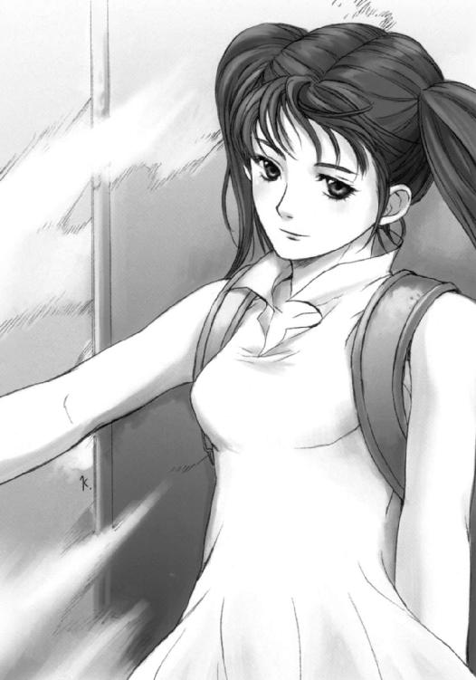
少女が返事をする間に、球形防御壁が、その下方頂点にあった記号片を中心として、形態を先鋭化させた。雫を逆さにしたようなその下方先端に集中された重みが屋上部を貫き、張力のバランスを失った周囲の瓦礫もろとも、二人は一階層下に雪崩込む。
その瓦礫を支えつつ、道化師は防御壁を限定的に解除してゆく。まずは下を、次に移動しながら横を、そして安全領域に入ってから全てを。記号片は再び右肩の飾り紐に戻る。
完全な闇の中を不便なく歩き出した二人の後方で、瓦礫が全ての支えを失って崩れ落ちた。
その音の余韻が残る間に、少女は背中の立方体から伸ばしていた、幾つかの棒を束ね、枝分かれさせたような探査機で、目当てのものを発見していた。同時にデータを転送。
「情報入力端末発見」
「事項了解。さあ、いただこうか」
道化師は指を指し、壁に貼り付いた小さなコンソールのような物に、記号片を一つ張り付けた。そして突然、場違いに大時代的な呪文を唱え始める。
「......〈アブラカダブラ〉、〈アブラカダブラ〉、厄除け給え......」
言葉の切れとともに、社員コードを入力しなければ開かないはずのコンソールに灯が点った。
画面に『Ａｂｒａｃａｄａｂｒａ』と表記される。次に、その一行下の端から一字、二行下の端から二字、と順番に文字が削られてゆき、最後に『Ａ』一文字が残り、以下白紙となった。
「よし、〈アブラカダブラ〉、注入終わり......と？」
記号片を飾り紐の端に戻した道化師は、またしても常とは違う反応を受け取り、怪訝そうな声を出した。彼の融合視界に、次々に表示が出る。
《外部リンク・エラー。〈プレイスメント・ハンター〉、〈レイアリング・ファインダー〉、ターゲット・ロス。〈インテグレイション・サッカー〉起動条件をクリアしていません》
「......あん？」
彼の持つ〈アブラカダブラ〉こそ、まさに彼らの活動の全て（破壊はついでだ）、つまり不正資金の流れを突き止め、それを流通経路や手段ごと乗っ取るという......実はその不正を働く者の隠蔽工作である資金洗浄を逆手に取って、虚偽名義を強制上書き・売却・別途に投入してしまうという、ひどいプログラムだ。
「外に回線が繫がっていないな」
しかしそのプログラムも、さすがに外部へ向けての機能が全てシャットアウトされていては、力の振るいようがない。
「さっきの爆破は、外への回線を遮断する手段だったのか？」
（......それとも......外......まさか）
道化師の心に再び、深い疑念が、重い恐怖が......そして暗い期待が、湧きあがる。
（来たのか）
彼の問うでもない問いに、少女はやはり姿勢と口調を崩さず答えていた。
「分からない」
（......笑え、仮面）
と念じ、道化師はまた笑う。
「かっかっか、そりゃそうだ。とりあえず二次機能で嫌がらせくらいはしとくか。いずれ腕っ節で中を乗っ取りゃいいしな。進攻・制圧行動開始だ」
「事項了解」
「ボギー君、無事かね？」
ディビジョンが司令室から問いかける。
《......ええ、なんとか》
崩落の瞬間、彼は乗っていた階段ごと、下の階に収納されたのだった。やりすぎの仕掛けに、いささか声に呆れが混じる。
《連中も、この程度じゃ生きてるでしょうね》
「ああ。フォートラン君が確認した。今、輸送ターミナルの辺りをうろついてるそうだ」
少し間を置いて、ディビジョンは尋ねる。
「それにしても、ボギー君、君はどう思うかね。地上を機動ブイや砲撃で襲い、地下を突入要員が受け持つ......それなりに役割分担しているように見えるが、しかし実際、あんな突入要員まで巻き込むような、シビアなタイミングの第二波を仕掛けるものかな？」
ボギーも返答に少し間を置いた。
《......社長の考えてること、何となく分かりますよ》
「ふむ、君も？」
《ええ、同意見ですね。でも、決め付けるには、少し情報が足りなさ過ぎますよ》
「状況が動くか、それとも動かすか、しばらく時間が要るようだね。とりあえず、装備を受け取って応戦準備を整えてくれたまえ」
《了解、とっつあん？》
「うむ、〈ブラックゴースト〉は上で埋もれとるから、旧型の〈アウリッシュガン〉で我慢してもらわねばならんぞ」
《文句は言ってられないよ。連中の位置を詳しく出して》
「了解した。ゴシップ」
「あ～、ちょっと待ってくれ。今、全破損箇所のチェックが終わ......ん？」
ゴシップの、システム内に溶け込んだ超感覚に、不思議な一点が。
モニター上には、一文字。
『Ａ』
それが突然、一行ごとに一文字ずつ増え、瞬く間に全画面を埋めた。延々、アルファベットが流れ続ける。
『Ａｂｒａｃａｄａｂｒａ』
を連呼しながら。
「うおわっ!? 侵食プログラムだ!!」
「むう、そういえば忘れておったな。連中、システムジャックにも長けているとか」
とっつぁんは発生場所を特定し、次に物理的遮断を始める。
「ん、なんだこいつ」
ゴシップの顔がとある情報を受け取って、ふと不審に曇った。
「外部への侵食も同時に行ってやがるぞ。資金洗浄のシステムに割り込む仕組みか......ロンダリングジャック・プログラムだな？」
「噂の、根こそぎ持ってゆくというやつか。しかし、自分たちで外部回線を切っておいて、どういうつもりじゃ？」
ディビジョンが、その二人の会話にわずかに頷き、しかし何も言わず沈黙を保つ。
「まあいいや、当面はこの内部の侵食を止めるのが先だからな......見てろよ。こういう日のために用意しといた、ゴシップ様謹製の対クラッキング・プログラムの威力を見せてやるぜ......さあ、起動しろ、俺の可愛い〈ポーカーハンド〉！」
気合とともにゴシップはサングラスを点灯させた。
社の最奥に潜むコンピューターが、求められた力を発揮する。メインスクリーン上に連呼されていた『Ａｂｒａｃａｄａｂｒａ』が、その速度を落とし、やがて止まった。
「ひゅう、好き勝手食いやがったな、この野郎......」
ゴシップはさらに、いくつものプログラムの立ち上げや経路の整備を、目と手で次々と行い、システムの復旧にかかる。まさに彼だけの、燃える時間だ。
その様子を見て、ディビジョンは満足げに頷き、次にエリーを見た。
「はい。お茶を用意しましょう」
と彼の秘書は、完全に社長の意を汲み取り一礼、社長室と繫がった給湯室へと向かう。
さらにディビジョンは、とっつぁんに......というか、手前のサブディスプレイ上に映った彼の顔に目を移す。
「さて、フォートラン君。ボギー君とゴシップ君が頑張っている間に、我々もやれることをやっておこう。とりあえず、〈ゲンセ〉との連絡を回復させたいんだが、アレは使えるかね？」
「もちろん。そのための設備じゃからな」
とっつぁんの確信に満ちた様子に、ディビジョンはまた満足げに頷く。
「結構。ではそれも含めて、全部、準備してもらおうか」
とっつぁんは、その言葉に込められた意味を察して、画面の中でにっ、と笑う。
「......全部、かね？」
ディビジョンも、笑い返しつつ答えた。
「全部、だ」
ファンシーランド娯楽コロニー外縁部での戦闘の喧騒は、未だ収まる気配がない。
その一角、というか中心にある、弾痕だらけのコンテナを背負ったトレーラー。その車輪はすでに二つがグレネードで破壊され、完全にその場に立ち往生する格好になっている。
その破壊は、コンテナ内で行われていた分解・改造手術に多少の揺れを与えはしたが、執刀者は、その程度のことで手を誤るほど未熟ではなかった。
その、万能工具を振るうキットの手並みは、芸術的な鮮やかさで、見る者を圧倒した。
他でもない、手術を受けているタールワン自身が、そう感じさせられるほどに、キットの動作には無駄がなく、処置は的確だった。
彼女は武装を取り出した後の処置もおざなりにせず、彼に向ける表情にも、それまでに彼女が受けた仕打ちによって当然起こるはずの余計な感情はなかった。
「できた。はい、どうぞ」
その、時間にしてほんの数分のうちに、太い銃身と細い射出口を持った、ハンドグレネードともサブマシンガンともつかない銃器が出来上がっていた。タールワンの拳銃を核に、彼の両二の腕に内装されていた大口径機関砲二門を加え、さらに強化骨格の一部やコンテナの床までを切り張りして作った即席物......とは到底思えない、見事な出来栄えだった。
「サンキュー。ふむ、いいな」
それを受け取ったアンディが即座に構えて、彼としては相当に高い評価を一言、口にする。
キットは頷いて、真剣な顔で続ける。
「弾丸はみんな徹甲弾よ。連射も三点バーストまで。セレクタで下部銃口の拳銃弾に切り替わるけど、元の精度が悪いから、至近でしか使えないわ。一応、同調用の照準器は付けたけど、念のために撃ってからフィードバック調律をしてみて」
「了解」
セレクタを確認して、切り替え、戻し、即席で作ったとは思えないコッキングハンドルを引いて、初弾をチャンバーに送り込む。融合視界に照準を立ち上げ、同調する。
「よっしゃ、いけそうだ」
「当然よ。あ、それと、おまけ」
キットは言って、小さな飴玉のようなものを二個、アンディに渡した。
「ん？ なんだこりゃ」
「脳幹と心臓に付いてたやつ」
「そういや関係ないとこもいじってたな......ん？ ははあ」
アンディは、キットと苦笑を交わしてから、元通りにしてもらった両手を（自分の凝固剤で）拘束されて横たわるタールワンの......半端に秘密を握っている男の傍らに片膝をついた。
「よう、一応訊いとくけどよ」
「俺は、貴様らを餌にして、現れるはずの戦闘サイボーグを始末しろ、という命令を受けただけだ。他には何も知らん。殺すなら殺せ。これ以上、何も話さんぞ」
ほとんど開き直って傲然と返すタールワンの目の前に、アンディは二個の飴玉もどきを三本の指に挟んでかざす。
「これも知らねえのか？」
「......なんだそれは」
いぶかしげな顔をするタールワンに、アンディはため息を吐いてから、告げた。
「自爆用の爆弾だ。おまえさんの頭と胸に入ってた」
「!! ば、馬鹿な!?」
「キットに感謝しな。この子でなけりゃ、まず見つけられない......起爆条件は？」
「生命活動の停止、あるいは大破よ」
キットが明快に答えた。虚偽の欠片も見出せない、確信の姿だった。
「......さっきの内装火器といい、なぜ......そ、そうか、特殊技能者か」
「半分は当たり、かな」
恐れの問いと、悲しみの答え。
アンディはタールワンの傍らに立った。見下ろして、言う。
「部下どころか自分の身も守れず、無様に武器をもぎ取られ、何に利用されたかも知らされず、自分の価値を決めないまま、死の一撃を待つ......」
「......ぐ」
侮辱と阿諛が、続く言葉で、逆転する。
「おまえは、虫けらか？」
「！！！！」
アンディの暗黙の求めに、しかしタールワンは絶句することしかできなかった。
その圧倒的な『人間』の姿にキットは微笑を浮かべ、そして保護面を下ろした。通信機とリンクして、戦況を把握する。
「全十台のうち、戦闘車両四台が大破炎上中。一台が中破、銃座二基健在。四台から機動ブイ発進中......〈シバ〉だわ。周囲に戦闘員は不在、〈シバ〉の発進トレーラーの陰で応戦中」
「〈シバ〉が四機？ 豪勢だねえ......ま、せいぜい気をつけるか」
アンディはすっくと立ち上がり、駆け出した。キットもそれに続く。
「じゃあな。もうデートの邪魔すんなよ」
コンテナの扉が開き、飛び込んでくる喧騒と爆音。
「お大事にね」
そして、去ってゆく影。
一人、身動きも叶わず取り残されたタールワンが抱いたのは、大きな恐怖ではなく......まったく馬鹿馬鹿しいことに......小さな寂しさだった。
教会の鐘楼にベルヒトの声が響く。
「......〈ローレライ〉誘導力場、調律完了。砲撃準備」
その異形の西洋鎧のような体の、ひときわ目立つ長い両腕が、全関節をフリーにして鞭のようにしなり、そして次の瞬間、完全な直線に固まった。両腕が、長い砲身と化したのだ。
その砲身である太い両腕の先にある鉤爪が限界まで開き、掌を大きく前に出す。そこには太さのわりには小さな、硬貨大の砲口が開いていた。両肩からは突起物が張り出し、来るべき作動のための予備冷却を始める。
「事項了解......ん、しまった！ タッチの差か」
その傍らの銀狼・シンメルが、舌打ちするように、黒金の牙を剝き出しにした。
「どうしたの、シンメル......あ！」
〈悪霊団〉からの中継画像の端に映ったものを急ぎ拡大、修正する。
それは銃を持った大柄な青年と、保護面で顔を隠した小柄な少女。
「しぶといなあ。あの連中が拘束してたはずなのに」
シンメルはほとんど呆れた。
「一体どうやって逃げ出すことができたんだろう。武装までしてるよ......ベルヒト」
「分かってる。二人を周りの変な奴らごと......ううん、標的を、障害物ごと、ぶっ飛ばすわ。照準微調整・威力半径制御フェイズ省略・〈ヤーレス・フォイヤ〉磁場誘導砲・砲撃開始」
シンメルは頷き、その逞しい前足を鐘楼の縁にかける。低い機動音の唸りに添えて、報告。
「事項了解。〈ケーニヒ〉騎乗者シンメルライター、突撃する」
「事項了解......あ、シンメル」
「なに？」
銀狼が異形の鎧に振り返る。
ベルヒトはいつも思う。この、もしかしたら、これっきりかもしれない別れの時に、顔を見たい、自分の顔を見せたい、と。妙な任務の中にある今日、その思いは一層強かった。
何故、〈ケーニヒ〉の方には顔を見せる機能が付いていないのか。自分の〈ケーニギン〉には付いている。しかし自分だけ見せれば、彼は羨ましいと思うかもしれない、だから、どんなに見せたくても見せられない。戦闘前に常に溢れる、この不安に根ざした不満が、普段は頼もしく感じるこの体を恨めしく思わせる。
「き、気をつけてね」
結局、いつもの言葉しか出なかった。
相手も、いつものように明るく答える。
「うん、なんだか手強そうだ、用心してかかるよ。援護よろしく」
「事項、了解」
二人が出た娯楽コロニーの通りは、隊列を乱したトレーラー群の残骸と破片、炎と煙で充満していた。それに押され消えたかのように、雨も上がっている。
「死体から何か引っぺがせる間は......ないか」
破裂して歪んだコンテナの陰に隠れた彼らの頭上を、機動ブイ〈シバ〉が、風を切って飛び過ぎてゆく。その黒々とした武器と装甲の塊を追ってか、どこからかグレネード弾が飛来、土産物屋の看板を撃砕する。
二人は煙の間を縫って走った。
「無事なトレーラーを奪う、って手もダメね」
「ああ。こんな所でトレーラーを動かせば、対地ミサイルのいい餌食だ」
二人の髪をさらうように、別の〈シバ〉からの機関砲弾が傍らを通り過ぎた。道路と、それに面したせいぜい三階までしかない、飾り立てられた建物に、破裂する点線が描かれる。
「［タールさんチーム］の連中、一体何と戦ってんだ？ 戦闘サイボーグとか言ってたが」
「さあ、こんな状況じゃ、見当もつかないわ、っとと！」
アンディはキットの手を引いて、〈シバ〉を発進させた空のトレーラーの陰に隠れさせる。
キットも必死に滑り込む。せっかくアンディと楽しく遊んでたのに、エリーが選んでくれた服なのに、でも社長のせいなんだよね、もう......と何だか色々浮かんでくる。少し悲しくなるが、前にそびえる背中を見て、少しだけ安堵のため息を得る。
「......その相手もだけど、そもそも、この［タールさんチーム］は、何処の誰なのかしら」
「見当はついてるよ」
「へ？」
「今は暇がないから、説明は後でな。さて......」
アンディは口元に指を立ててキットを黙らせると、中腰になった。と唐突に、トレーラーの陰から手を伸ばす。帰ってきたそれは、タールワンと同じスーツの襟首をつかんでいた。中身も無論入っている。
「動くな、犬」
銃口をこめかみに突きつけられた、タールなんやらとかいうはずの男の顔が引きつった。
「おまえさんたちのワンちゃんが、指揮車の中で寝っ転んでる。服務規程でも忠誠心でも慈悲心でも個人的好意でもいい、助けてやれ」
「......な、なんだと」
銃口越しの善意なので、いま一つ説得力に欠けるが、アンディは怒鳴り声の力押しで通す。
「このど素人！ 上で跳ねてる連中、機動ブイの牽制に移ってるだろうが。下を制圧する援軍か砲撃かがもうすぐ来るんだよ！」
「!!」
「授業料だ、武器渡せ」
言う間にアンディは男の体を探り、銃を二丁と弾倉をいくつか巻き上げた。銃はタールワンのものと同じで、使い道がないが、それでも弾倉をベルトに突っ込んだ。
「それ、急げよ！」
いただくだけいただくと、アンディは男を指揮車の方に押しやった。男は慌てて、走り去る。
「よし、いくぞ」
それには目もくれず、アンディはまたキットを手招きして走り出す。
「こんな状態で、よく戦況が分かったわね」
続くキットの当然の質問には、当然のような答えが返ってくる。
「でまかせだよ。俺ならそうする、ってこと」
「......」
「しかし実際ヤバい状況だぞ。囲まれてる上に、向こうさんの手の内が分からねえ」
「じゃあ、そっちはあたしが探るわ。五秒、安全を確保して」
「キット！」
怒りと心配を混ぜた顔をするアンディに、キットは保護面越しでも伝わる笑みで答える。
「ヤバい状況なんでしょ？ やるわよ」
「......くそっ」
アンディは銃を片手で持ち、キットを子供のように胸元に抱え込んだ。足は止めない。
キットは笑って言う。
「ちょっと、いい気分かな？」
「絶対に、五秒だけだぞ、約束しろ、すぐ帰れよ、深入りするな、無茶もするな」
「はいはい」
キットは真剣なアンディの表情に暖かな満足感を覚え、暗闇に潜る力を得る。
目を瞑った。感触だけで、開ける。
一つの扉を。
自分に与えられた......いや、刻まれ、組み込まれた力の、扉を。
扉の奥にあるものは、黒々とした、重く高密度な闇。
胸か頭か、奥へ奥へと、感覚を潜らせる。
（......）
その闇に、一筋、光が走る......やがてそれは二筋に、三筋にと、増えてゆき......やがて無数の糸となり、織り合わされ、綯い交ぜられ、模様となり......広がってゆく。
気持ち悪い。
理路整然と並び続き描かれる模様を感じる、体の奥底で......いや、体を、その模様の中に感じる......規則正しい模様に組み込まれた、不純物として。
気持ち悪い。
模様の構造を読み取る......繫がりと影響と干渉と、その力の往復を。
気持ち悪い。（.........）奥のものに触れた。気持ち悪い。こだまのように、反復する言葉が聞こえてきた。気持ち悪い。イヤだ、アレは。気持ち悪い。聞こえる言葉が、笑いと、力と、歪みと、どす黒い気持ち（............オマエハデキルヨ）悪い気持ち悪い（...............サアヤルンダオマエハデキルヨ）気持ち悪い気持ち悪い（..................アノモドキドモヲツカメサアヤルンダオマエハデキルヨ）
模様の構造は、こんなにも綺麗なのに、何故、こいつらはあたしは、こんなにも気持ち悪い。
気持ち悪いのが模様の中に広がる。
（くりあさーきっとちゃいるど、
どんどん広がって入ってくる。
（アノモドキドモヲツカメ
アンディも燃えるトレーラーも
（サアヤルンダ
振り回される銃も空を行く砲弾も
（オマエハデキルヨ
機動ブイも屋根を飛ぶものもそれが広げるものも監視するものも
（ダッテオマエハ
壁を這うケーブルも地に通る鋼転がる弾丸砕けた部品千切れた導線電子のうねり
「......ぐっあ、うう......う......」
広がり始めた。全てを取り込もうと自分が広がってしまう。
（ソノタメノカイロ
広がり過ぎる帰らなければ帰れなくなる。
呼んで。
「キット!!」
ぼっ、
と目の前が電子宇宙の残像を残してフラッシュする。
......ニューロンドームの造形フィードバックプログラムでできた顔が......
結構好みの、荒削りな顔が、目の前、保護面の向こうに、ある。
ある。
「帰ってこねえと唇で強制覚醒させっぞ!!」
少女の体が、力を取り戻す。
「............イヤ」
「キット!!」
安堵の叫びに照れたキットは、保護面を深くかぶり直す。
「......だって今、ちょっとよだれ出てるもの」
「ん～、それはそれで」
「ば、馬鹿、それよりも」
まだふらつく頭を上に振り向ける。
「......出鱈目が大当たりよ。上の連中はアンドロイドじゃない、自律戦闘システムを積んだ援護兵器で、辺りに変な電磁網を張ってる。技術屋としての勘で言わせてもらえば、多分、指揮官機が使う誘導兵器のガイド」
ガボッ、と妙に間の抜けた音がして、背後の空中で大爆発が起こった。
「!!」
アンディはとっさにキットを体の陰に隠した。
爆風と炎が周囲を払い、破片が飛び散る。
周囲で飛び跳ねている小型機のグレネードや銃撃ではびくともしないはずの、分厚い装甲で全身をよろった機動ブイ〈シバ〉が、たった一撃で砕け散ったのだ。
「砲撃？ どこから」
アンディは、〈シバ〉の移動経路と砲弾の直撃によるベクトルの変化から、砲撃の入射角を逆算する。結果、命中箇所は上面装甲、それも高角度による一撃と出た。しかしそれは常識的にはありえないことだった。曲射砲にしては角度が急すぎたし、擲弾筒程度では機動ブイの装甲を打ち抜けるわけがない。しかし見たところ、空中に他の航空機は存在しなかった。
では、あの驚異的な弾速を持つ砲弾はどこから飛来したのか。
（あの弾速と威力はレールガンあたりでしか出せねえはずだが、曲がるレールガンなんて聞いたことが......待てよ？）
さっきキットは言った。『辺りに変な電磁網を張ってる』、『誘導兵器のガイド』......技術屋の勘にヒントを得て、戦闘屋の勘が閃く。
（レールガンは弾体を電磁誘導で加速する装置だ......その最終的な誘導路が、この辺りに張られた電磁網だとしたら......）
ヒュボッ、と再び付近の路面に着弾、爆発する。弾体が持つ莫大な運動エネルギーが、着弾対象を蒸発させているのだ。しかし路面に当たったそれは、その着弾対象の蒸発以上の爆発反応を起こさない。そしてレールガンに使われる砲弾は、普通弾体内に炸薬を持たない。
アンディは自分の仮説に確信を持った。同時に、危機感も。
（ってことは......やべえ、俺たちは今、超威力のレールガンを放り込む穴の底にいるってことじゃねえか！）
そのアンディに逃げ道を作るように、腕の中のキットが叫んだ。
「三時方向に直進して！ 監視者がいる！」
「なんだって？」
と訊きつつも、足は既にそっちに向かっている。
目の前には、カントリー風を気取った、丸太組みの外装の喫茶店が。
「キット、背中だ！」
「う、わっと！」
言われた瞬間に、キットは、アンディの背に放り上げられた。慌てて腕を強く硬い首に回し、背負われる格好でしがみつく。
前を空けたアンディは、軒先に置かれていたテーブルセットを蹴立てて、太く広い窓枠をぶち破った。中に飛び込んで、さらに直進。目の前の大作りな木製のカウンター、その奥、厨房への両開きの押し戸、それらとは逆に、近代的で清潔な厨房などを次々に踏破する。
背後では、レールガンによる爆発の轟音が立て続けに鳴り響いていた。その中に、建物を震わせる大きな爆発が......〈シバ〉がもう一機打ち落とされたようだ。
そして、その爆音を伴奏のように飾る者が、来た。
突然、厨房の天井を破って大重量が落下した。アンディが駆け抜けた直後の床タイルを紙のように突き破り、すぐにその下の構造材と鉄骨を削るように蹴って、前へと跳ねる。
銀色の、力感溢れる狼だった。
一目でそれと分かる、格闘戦用機械獣。
首と背筋を一線に伸ばし、前方を走るアンディたちに追いすがる。
アンディが器用にキットの真横、肩越しに背面射撃を加えるが、銀狼はわずかにバランスを変えたステップを踏み、最小限の軌道で弾道から逸れる。前への躍動は、全く衰えていない。
唸りをわずかに上げて、黒い鋼の牙を示す。
「っち!!」
舌打ちするアンディは、しかしまだ余裕を持っていた。
「下を制圧する援軍、か。俺って預言者の素質あるのかも」
「予言より実行！ 来る！」
手持ちの即席銃は、三連射以上できないから、牽制には向いていない。ここぞというときに、（撃つ！）
キキキン、と通り過ぎ様、真横のゴツい業務用コンロを打ち抜いた。初弾から遅れた着弾の火花が、一挙に膨れ上がり、炎となる。その輝きの朱が危うくキットの背をかすめて、追って来た銀狼を飲み込んだ。
（こんなのが格闘戦用機械獣に効くわけない）
けど、とキットは後に続けることができる。黙ってつかまっていればいい。それでも、
「......わっ!?」
驚かされる行動を、アンディは取った。思い切り半回転、振り回される。
炎を全く問題とせず突っ切った銀狼は、炎を突き破った先に、自分めがけて走ってくる標的の姿を認めて驚いた。カウンターの銃撃を警戒して踏み込みを遅らせる、すると標的もその動きの間を察知して止まる。
文字通り、間の抜けた両者の、半瞬の対峙。
再び動いたのは当然、その必要性を持つ銀狼だった。
アンディはその仕掛けの瞬間をまた読んで、自分たちの体を横にずらす。銀狼の軌道が、とあるものと交差するように。そして仰向けに倒れ、キットを背中で押し潰す。
「んぎゅ！」
というキットの悲鳴に重なって、低いしりもち態勢からのアンディの銃撃、しかしそれは銀狼の下に逸れ......コンロの爆発の間に転がしておいた、飴玉のようなものに当たる。
爆発が起こった。
《うわっ!?》
シンメルは、自分の直下に突然の爆発を受けて驚愕する。その前足を、
《っは!?》
飛び起きたアンディが摑んでいた。
「っっだぁ！」
自分の突撃の勢いで銀狼は投げ飛ばされ、大鍋の並んだ金属棚を押し潰してひっくり返った。アンディはさらに追い討ちに三連射しつつ逃げる。キットはまだしぶとく背につかまっていた。
「ま、真正面、ちょい下！」
「あいよ！」
最後の鉄扉を蹴り潰して、アンディは目の前に開けた宙へと飛び上がった。
それは店の裏口で、地上から一階分高くなっている。
降り口である鉄板組みの簡素な階段の下、表とは違って飾り気の欠片もない裏道に、一台の大型バイクとそれにまたがった女性がいた。先の爆発音を聞いてバイクを出そうとしていたらしいその女性は、彼らの跳躍にギョッとして振り返った。見上げた影を確認して表情に驚きが増し、慌ててアクセルを吹かす。
「おっと！」
アンディは、いつの間にか失敬していた包丁を、その前輪の前に投げつけた。包丁は固い石畳に突き込まれて細かく震え、ついでにバイクの発進を思い切り妨げた。
「な!?」
前輪の制御を突然失った女性は、慌てて姿勢を立て直す。
その間に、アンディは真横に着地していた。にっ、と不敵で太い笑みを見た女性は、その手がハンドルを摑んでいるのに、ようやく気づいた。
「ちょ、ちょっと！」
バイクは女性を乗せたまま、アンディとキットを軸に、地面を削るように回り、そして、
「さ、試そうか、あんたはどっちだ？」
真正面上方から追って来た銀狼の矢面に立たされていた。
「っひえ!?」
女性は自分でも信じられない速さでアクセルとギアとハンドルを操作して、緊急発進していた。その収まりの悪い髪を銀の爪がかすり過ぎ、怖気の風が頰をこすった。
「なるほど、あんたは」
「［タールさんチーム］の人ってわけ」
「！」
いつの間にか後部座席に二人が、正確にはキットを背負ったアンディが飛び乗っていた。
「あんたたち!?」
「早くしないと......あ、やっぱり追ってきた！」
キットの言うとおり、ガガガガ、と路面を削る巨獣の爪音が、背後から迫ってくる。バックミラーに、銀色の砲弾のような姿が、見る間に大きくなる。
「な、な」
（なんでこんなことに？）
ディビジョン駆除商会は別途の手段で、こっちはこれで、それぞれ監視していたのだが、こっちは例の連中の小型ロボット群による奇妙な電波妨害で、遠方からの戦況監視が不可能になったため、接近せざるを得なくなっていた。
とはいえ、発見されるようなヘマはしていないはずだった。各種の電子的な攪乱・隠蔽手段を抜かりなく取っておいたはずなのに。
なのに、なぜこんな目に、自分は遭っているのか？
偶然とは思えない。明らかにこっちを目指して、撤収さえ間に合わないほどの短時間で、一直線に進んできた。見つけられていたとしか思えない。
一体どんな手段によって自分を見つけたのか、彼女には全く理解できなかった。
「あんたらがかけた迷惑料の支払いがまだなんでね......とりあえず、社まで送ってくれや。茶くらいは出してやるぜ......っとと！」
「わ、わ、落ちる！」
アンディは慌ててシートの端をつかんだ。背にあるキットを、銃を持った方の手で支える。
三人を乗せた大型バイクは、ほとんど横倒しにカーブを駆け抜け、戦闘の喧騒満ちる表通りに飛び出した。そのまま郊外への道を突き進み始める。
「ところで、あんたタールの何番？」
女性は、己の名を名乗るべきか少しだけ迷い、結局降参した。
「タール・チームじゃないわ。私は事情があって、この騒動を監視してただけ」
アンディに負けない不敵な笑顔をわずかに向けて、言う。
「名前は、『赤のヴァージョン』よ」
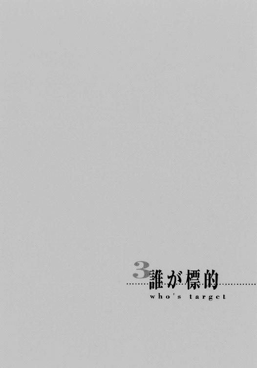
ディビジョン駆除商会を攻撃した機動ブイの一団を指揮する重装甲ブイ〈シェパード〉、その暗がりの中で、交信が行われている。
画面に映った初老の男は、表情の乏しいくたびれた顔に、わずかに嘲りの歪みを乗せて言う。
「なんとも無様なことだな、ミラー局長。機動ブイまで駆りだしておきながら、餌にも、標的にも、逃げられてしまうとは」
画面を前にする、ミラー局長と呼ばれた細身にダークスーツの男は、斬りつけるように後の言葉を遮断する。
「黙れ。追撃は行っている」
画面の端に、別働隊であるタール・チーム壊滅の報告が次々と送られてきていた。
トレーラー十台は全損、虎の子......というより、万が一の保険として配置したに過ぎない機動ブイ〈シバ〉まで、二機も撃墜されてしまっている。人的被害は、実に半数死傷。そして戦果、確保者はゼロ......餌にも、標的にも、完全に手玉に取られた格好だ。
「それよりも、なぜ今まで連絡を取らなかった、ノーティス」
鋭く斬りつけるようなこの難詰に、しかし画面向こうの初老の男・ノーティスは平然と、そしてゆっくりと答える。
「なぜ？ なぜとな？ おまえさんとの約定どおりに、受信システムとネットワーク中枢との間の秘匿回線を、老骨に鞭打って、組み上げていたのではないか。そちらこそ、連中の過去の調査記録を、持っていたのだろう。その不手際の始末で、非難される覚えはないよ。それともなにか、荒事に対して、私が打つ手を持っていたとでも言──」
「黙れ」
両者の間に、沈黙が降りる。
やがて、初老の男が、ぽつりと言った。
「......話に乗ったことを、後悔しているよ。［情報部区協課特別戦務局］局長ビル・ミラー」
「......」
「ミラー局長......いや、ビリーよ。これだけのことをやって、果たして割に合うことかね？ あまりに、眺望が悪すぎるとは思わんか。不確定要素だらけだ。あの連中も、餌に使った......何とか言う駆除屋たちも、おまえさんは侮りすぎていたのだ」
「ノーティス、今さら貴様を抜けさせるわけにはいかん。この計画を立てたのは、私と、貴様の二人だ。分かっているだろうが......」
この恫喝には、呆れと諦めの声が返される。
「ああ、ああ、分かっているとも、ビリー。我々は一蓮托生だというのだろう？ 例え発起人がお前さんでも、な。十年来の付合いだ、飽きるほど聞かされているよ」
「分かっているなら、文句を言わず、さっさとバンクへの秘匿回線を開けろ。準備ができたから、連絡を取ったのだろう」
「ふん......そうだな、そうしよう」
初老の男・ノーティスは傍らに手を伸ばした。通信画面にリンクスタートの表示が瞬き、特殊な経路への回線が開いたことを報せる。
ミラー局長は小さく頷き、独り言寸前の小声で言う。
「最低、タール・チームの方は、遅滞行動さえ取らせれば、捨てておいても構わない。こちらの真の標的は、あの駆除屋の〈ゾーン〉内にいるのだからな。それに、決め手もこちらが握っている」
「その強気の姿勢が、いい結果を摑むことを、望んでいるよ」
「以降、貴様は、外部からの干渉を監視しろ。我々が押さえたが、万が一ということもある」
言うだけ言うと、ミラー局長は、またも相手の返事を待たずに通信を切った。しばらく考えてから、再び通信機のスイッチを融合視界越し、身動きせずに入れる。
「ナロータワン、突入の準備はどうか」
地下社屋への突入部隊であるナロータ・チームから、音声だけで返答がある。
「はっ、ほどなく完了の予定......現在、ナロータセブンが降車中......ん、なんだ!?」
ズズズ、と不気味な振動音が、通信機越しに聞こえていた。
「どうした、ナロータワン」
「うおっ！ こ、攻撃です、地下から！ 〈シバ〉に攻撃命令を！」
「なに？」
ミラー局長は急ぎ、画面に灯を入れる。空中で待機中の三機の機動ブイ〈シバ〉からの映像だ。その三機、ムー・チームへとコールネームで呼びかける。
「ムーワンからスリー、警戒態勢を......む!?」
濛々たる噴煙が、瓦礫の山の周囲から上がっていた。まるでこれは......
「ミサイルだ！ 上昇前に叩け!!」
《ムーワン了解》
社屋を中心とした円形に、その噴煙は上がっているようだった。
《ムーツー了解》
〈ゾーン〉越しに指令電波でも送ったのか？ しかし電波妨害は抜かりなく行っている。第一、連中は崩落した建材に埋もれている上、襲撃を受けているはずだ。そんなに早く瓦礫を取り除けるだけの余裕と設備をどうやって揃えた？
《ムースリー了解》
社屋の瓦礫を囲んで上がる濛々たる噴煙の中から、ゆっくりと、円筒形の物体が数十もの数、迫り上がってくる。やはりこの円形の噴煙を噴き上げているのは、ミサイルサイロだった。
ミラー局長はほとんど呆れた。たかが一企業の分際で持てる設備ではない。
さらに不審な光景が。
今発射されつつあるそれらは、なぜか対空ミサイルの類ではなく、径の太い遠距離弾道弾だった。垂直打上げ方式なので、初速が遅い。これでは、射出する間に打ち落とされてしまう。
現に〈シバ〉が、まるでもぐら叩きのように、顔を覗かせるそれらを逐次、機関砲弾で破壊している。地表付近で破壊されたそれらは爆発炎上して、周囲に黒煙を巻き上げている。
（自暴自棄になって、手持ちの武器を使っただけなのか？）
と思い、突入部隊の前進を促そうとしたミラー局長は、突然、
「うおっ!?」
と叫び声を上げて融合視界内の通信を切った。
「なんだ？」
手前のスイッチを入れて、通信機の方を立ち上げる。そこには、彼の融合視界を襲ったものそのままに、雑音と灰色の砂嵐が荒れ狂い、舞っていた。
（指向光通信が攪乱される？ いや、それだけでは......）
悪寒を感じた彼は椅子を蹴立てて立ちあがり、司令区画から分厚い扉をくぐって操縦室へと飛び込んだ。
「きょ、局長！ あれを！」
〈シェパード〉の機長が彼の姿を見るや、窓の外を指差した。
丘の向こう。ディビジョン駆除商会のある方角。
「な、なんだあれは!?」
そこに、星満つ夜を押し塞ぐように、濛々たる黒煙が、まるで火山の噴煙のように凄まじい迫力で立ち上っていた。それは留まる所を知らず、周囲へとその影を落とし、広げ続けている。
「ま、巻き込まれます！ うわあ!!」
機長や操縦士らが悲鳴をあげる、その間に噴煙は雪崩のように迫り、彼らを内に飲み込んだ。
「ぎゃあっ！」
悲鳴を上げたのは、通信士だった。耳を覆っていたヘッドホンを放り出し、耳を塞ぐ。各種方式を試して連絡網を回復しようとしていたらしい。
そのヘッドホンを取り上げたミラー局長は、そこにまた狂騒のあることを知る。
（電波妨害......違う、対電子戦通信だ！）
聞いたことがあった。
噴煙のような......指向光通信さえ遮断する、高密度の凝集スペクトラム伝導剤を電波妨害区域で使い、逆に相手の眼と通信網を奪ってしまうという戦術があると。
この凝集スペクトラム伝導剤は、その名が示すように電磁波の類を異常なまでによく通す物質だが、この伝導剤下で運用することを想定していない通信機だと、逆に今のように周囲の電波の拾い過ぎで無効化されてしまう。相当に特殊かつ限定的な戦況下でしか使えないため、開発した当の連合治安軍でさえロクに配備していないという、『最高級のキワ物兵器』だった。
あのミサイルサイロから発射された弾道弾には、そのキワ物伝導剤が満載されていたのだ。発射指令も、同様の伝導材を地下社屋から噴射して行ったに違いない。気体なら、崩落した建材の隙間から、いくらでも這い出して地上に上げることができる。
この噴煙の膨れた先のどこかでネットワークと接触した瞬間、駆除屋どもは......この状況下での通信設備を持っているに違いない駆除屋どもは、外と繫がってしまう。
（......ば、馬鹿な、なんという、なんという無茶苦茶な奴らだ......）
自分たちの標的を釣るための餌に過ぎなかったはずの連中の、あまりにド外れた無茶さ加減に、ミラー局長は、我知らず頰の汗をぬぐっていた。
（だが）
と気を持ち直す。
どうせ連中は縮む〈ゾーン〉という檻の中にいる。標的を仕留めたら、爆弾でも仕掛けて逃げてしまえばよいのだ。いかに外からの介入を呼ぼうとも、その前にケリをつけてさえいれば、後は［情報部］たる自分たちの領分だ、いくらでも操作し、揉み消すことができる......そうとも、主導権はまだ、こちらが握っているのだ。
「ナロータ・チームに伝令を出せ！ すぐに突入を開始するよう......あの煙幕内での行動を前提に装備を整えるようにも伝えろ！ 特に、例の弾丸には細心の注意を払うように言え!!」
覚悟と優位からなる命令の声は、しかしわずかに震えていた。
アンディとキット、ヴァージョンを乗せたバイクは、ファンシーランド娯楽コロニーを出て、山間の曲がりくねった道へと入っている。夜の山道は、光に溢れたコロニーとは違う趣向、街灯だけの寂しいパレードで、彼らを延々出迎えている。
あの銀狼型の格闘戦用機械獣は、いつの間にか姿を消していた。無論、だからといって逃げ足を緩めるはずもない。彼らは全速力で社へと向かっていた。
「アンディ、そろそろいいでしょ、説明してよ。あの［タールさんチーム］って何者なの？」
不安定な態勢から移動して、ヴァージョンとアンディの間に入ったキットが訊いた。
その手は休まず、狭い空間の中で細工を続けている。いくら高性能のショックアブソーバーがあるとはいえ、高速の、しかもカーブ続く車上。かなりの揺れだが、手元は四半ミリの狂いも生じない。ちなみに部品の調達先は、バイクの後輪両脇に結わえられていたキャリアボックス、およびバイクそのものだ（無論、走行に支障をきたさない部分に限る）。他にも、ヴァージョン自身の腰に拳銃があったが、これは小口径だったので、すぐ返しておいた。
そのヴァージョンは、最初こそ文句を言ったが、相手がそれを全く気にかけないことと、自分に気にかける余裕がなかったということもあって、今は黙っている。
アンディは後方を警戒しつつ、キットの質問に答えた。
「確たる証拠ってわけじゃねえけどな。まあ、間違いないだろう。そっちの姉ちゃんに訊きや、一発なんだろうが」
なびく長髪の向こうから、声が割って入る。
「立場上、問題があるのよ」
「だそうだ。で、戦争屋の意見だが......連中、装備のわりに、ド素人なんだよな、やることなすこと。本物の戦争屋なら、いきなり市街戦を仕掛けてくるような非常識な相手に、戦力を出し惜しみしたりしない。最初から全力で反撃する。それで死んだら、何の意味もねえだろ？」
「ふうん、なるほどね」
言われてみると、確かにそのような気がする。
「戦況への対応もいちいちまずい。狙ってください、といわんばかりに指揮車だけコンテナ閉じてたりするしな。そのくせ、妙に統制は取れてるし、拉致の仕方も手馴れてる。機材も整い過ぎで......それと、外向きに気を使いすぎだ。態度は偉そうなのにな」
「はは～」
キットにも、なんとなく、分かってきた。
「どんな組織にもあって、どこででも嫌われて、しかし絶対に必要な集団......」
言いつつアンディは、器用に足を入れ替えて、後ろ向きになった。背中越しに、続ける。
「つまり、［情報部］だよ。［連合政府情報部］。たしか、こういう無駄に豪勢な装備を切り回す部署があったはずだ」
「ふうん」
キットは頷いた。政府機関が絡んでいるとなると、事態は一気にややこしくなる。といっても、それに対処するのは社長の役目で、彼らのやることは同じ......障害を排除して社に戻る、それだけだが。
「その［情報部］が追ってる連中が、あたしたちを狙ってると知って、それで餌にした？」
「だろうな......本人たちに面と向かって尋ねてみたいんだが、聞こえねえだろうなあ」
「！」
突如、道路脇の斜面下方から、剣吞な武装に身をよろった鋼鉄の船が浮かび上がった。
機動ブイ〈シバ〉が、追って来たのだ。
その上昇軌道に沿って機首にマズルフラッシュが閃き、夜に穴を穿つ。飛んだ機関砲弾は、バイクの後輪のわずか後ろに破裂の点線を描いて通り過ぎ、舗装材の破片を道路にばら撒いた。
「ヴァージョンさんが乗ってるのに？」
キットは驚くが、アンディは平然と答える。
「権力者側は開き直ったらなんでもする。気にするもんか」
その乱暴な意見の影で、二人は指向光通信による秘密の二重会話を行う。送・受光部以外に何も漏れないのが、この指向光通信の長所だ。
《［情報部］は遠慮せずに撃ってくる、狼も襲ってきた......両方の眼中にない人間だ》
《でも、監視していることは感じたわよ。あたしたちを追ってる連中に何かあるのかな？》
かちり、かちりと二人は物事を付き合わせ、理解してゆく。
《ふふん、そうだな。その［情報部］が狙うものの横取りを企んでる、ってとこか......ゴシップが言うにゃ、油断ならねえ女狐、ってことらしいからな》
《それ、個人的恨みも入ってると思う......まあ一応、予防措置はしといたけど》
しかしその口は、別のことを言っている。
「問答無用で撃ってきたってことは、もう一機が本命を、あの格闘戦用機械獣を見つけたな？」
ヴァージョンが、バックミラーをちらりと見やって言う。
「七時方向よ」
「おっ、あれか......案外近いな」
左後方で、同種の光が撃発音をわずかに遅らせて瞬き、続いて光跡を夜に引いたミサイルが空中で爆発した。
「アンディ、今のミサイル」
「ああ。変にぐにゃぐにゃ曲がって飛んでたが......さては、例の小型ロボットどもを引き連れてきやがったな。それで一旦消えたのか」
「じゃあ当然、砲撃した奴も......っと！」
バイクが道を急カーブして、山陰に入ろうとするが、〈シバ〉は飛行している。カーブの間をショートカットして、待ち構えるような低速飛行で機首の機関砲の銃口を、こちらに向けた。
「やっぱり機動ブイは振り切れないわね。せめてトンネルでもあれば、時間が稼げるんだけど」
ヴァージョンの苦々しげな声を断ち切るように、機関砲の掃射が始まる。付近をかするだけでも頰を切るような弾丸が、辺りに撒き散らされる。
キットが部品を撒き散らさないように押さえながら言う。
「先の道路を狙ってミサイルを打てば、一発でケリが付くのに......遊んでる」
「ワンちゃんの薫陶よろしきを得てるんだろうよ」
アンディが銃口を向けながら答えた。とはいえ、こんな豆鉄砲では、重装甲で身をよろう『鉄の箱舟』機動ブイに歯が立たない。撃つだけ無駄という、彼にとって一番嫌いな状況だった。
「やれやれ、こういう不正規戦には、ボギーなんかの方が向いてんだがなあ。あいつなら念動力でちょちょいのちょい、てな感じで......」
「ふうん、それじゃ今度から頼りになるボギー君の方を誘おうかな～」
「ああ、そりゃ無理だ。あいつの好みは、儚さ絵に描いたような真っ白けの女の子だからな。あっさりふられるのがオチ痛っ！」
ごん、と後頭部に筒が叩きつけられる。
「できた。小さいのくっつけて集束爆発弾にしたわ。打ち抜くだけならライフル並みになってるけど、弾道は不安定だから遠距離射撃はダメ」
受け取ったそれは、銃身の長いグレネードランチャーのような銃だった。
「りょーかいりょーかい」
苦笑しつつ元の銃をスリングで肩にかけ、新しい銃を確たる力感を持って構える。
後ろで、わざとらしく甘えるような声がした。
「アレ落としてくれれば、ご褒美あげちゃうけど？」
「......ガンバラさせていただきます」
ディビジョン駆除商会地下社屋内の戦場は、ボギーという単体の防衛線が押しまくられて階下へと移り、今は社員寮階層が最前線になっている。
《ボギー、その階段は壊すな。通過させろ》
《ん、了解》
ボギーはとっつぁんの指示通り、階段の降り口から廊下に滑り込んで、追って来る二人組の到来を待つ。すでに強化服を着装していた。
この、全体に丸っぽい輪郭の〈アウリッシュガン〉高性能強化服は、〈ブラックゴースト〉全制空戦用強化服が来るまでのＡ／Ｂの愛機だった。性能的には劣るものの、当座の戦力としては申し分ない......はずなのだが、物事はそうそう現実の都合に合わせてはくれないものらしい。
実はこの強化服、Ａ／Ｂの〈ブラックゴースト〉への機種移行に伴い、着装者に対するあらゆるデータを消されてしまっていた。結果、関節の屈曲の重さから跳躍の荷重力比、反動の吸収率など、どれもこれもが初期値に戻されていて、いまいち使い勝手が悪くなっている。急ぎフィードバック機能で再調整をかけているが、その慣らしの相手としては、今回の二人はいかにも最悪だった。
（来た......）
かっつんかっつん、跳ねるような道化師、こん、こん、とたまに薄れそうなほどに小さな少女、それぞれの靴音が階段の空洞に響き、少しずつ大きくなってゆく。
ボギーは、その背中に一基だけある荷重力推進機に後進をかけて、二人との距離を取る。
あの階段は、この階層まで......というか、地下社屋の階段は、みな一階降りると廊下を一度通り抜けて、また反対側から降りねばならない、ジグザグ構造になっている。それぞれの端にはエレベーターがついているから、普段の通行には何の支障もない。そのエレベーターが止まる時というのは、大体が今のような状況になるはずだから、この階段の布設の仕方は、明らかに侵入者への対応措置だった。
ボギーを囲み、前へと流れてゆくのは、幅広で天井も高く、ついでに清潔だが、飾り気のない社員寮の廊下。しかし、通常のイメージとは違って、ここの廊下は一直線ではなく、かなり適当な方向に、しかも直角に折れ曲がって伸びている。とっつぁん曰く、「限られた空間の有効活用」ということらしいが、社員にとっては結構面倒くさい造りだ。
（まさか、これも今みたいな事態を考えて......とっつぁんなら、あり得そうな話だな）
後進するボギーから見て左手にドアが、それぞれ直線の突き当たりに並ぶ構造だ。ちなみに部屋の並びは、降り口の階段からアンディ、ボギー、キット、エリー、ゴシップの順で、社長の私室は社長室に付属、とっつぁんは階層一つ丸ごともらって研究室兼用の特別扱いだ。
この廊下の一番奥が、下への階段になっているが、とりあえずは最初の角、アンディの部屋の前で曲がり、角に背を付けて身を隠す。
廊下の向こうから、足音が近づいてくる。
ボギーは、ようやく握れた愛用の〈ワルツスコア〉突撃銃を両手で真上に構え、一拍置いてから振り向き、撃ち放つ。
この、生身で使う〈クラリネット〉とは比べ物にならない強力な掃射を、しかし道化師は例によって、円形に広げた記号片の防御壁で難なく跳ね返してしまう。
「かっかっか、無駄だよ」
弾丸が跳ねる火花の向こうで、黒い仮面が変わらぬ笑みを浮かべている。
「ちっ、やっぱりダメか」
舌打ちしたボギーが斉射の間を一旦置くと、これも例によって、
「ニコル、笑ってる？」
と独り言のように呟く少女の背負った立方体から、今度は、大口径短身砲による滑空砲弾が飛んできた。空気を押しのけて猛進したそれは、『Ａｎｄｙ』と全体にサインペンで書き殴られたドアを音もせずに抜いて、部屋の中に飛び込み、爆発する。
防御姿勢を取るボギーは、壁ごと千切れそうになった扉が、ぎい、と哀れに抗議するのを見て聞いた。その中は......元がどうであれ、散らかったのは間違いないだろう。
《こりゃあ、帰って来てからが恐いな......》
《お前の間の取り方が悪い》
ボギーのぼやきに、とっつぁんが律義に答えた。
《隣に誘導しろとでも？》
無論、次の突き当たりはネームプレートに『Ｂ』とだけ書かれたドア。
《自己犠牲の精神は......なさそうじゃな》
《それが目的のために効率的ならするよ......けど！》
背中の荷重力推進機が唸りを上げて、伏せた体勢のまま、横へと体を引っ張り落とす。避けた瞬間、隠れた角が、記号片の槍で押しひしゃげられ、弾けた。
また、二人は進んでくる。しかも今度は、下がるボギーが次の角を曲がる前にアンディの部屋の前に立っている。
（何っ!?）
記号片が、彼らの足下を囲む輪となって、一息で角まで運んだのだ。全くあの道化師は、憎たらしいほどに念動力の使い方を心得ている......と思う間に、追撃の滑空砲弾が飛んでくる。
「っと！」
敵に倣って、というわけではないが、ボギーも自分を念動力で真横に跳ね飛ばした。
ギリギリで角に入り、代わりに自分の部屋の壁が、弾けて歪む。
（あ、壁際には、たしかニューズフロント全巻を揃えた本棚が......）
収集までの費用と苦労を思い起こして、わずかに気が重くなる。
が、それ以上の凶行は、なんと味方からもたらされた。
《ボギー！ 〈レッドホット〉を使うぞ、全速後退じゃ！》
「んなっ!?」
自分の部屋の壁に穴が空いている。その中は本、つまり紙だらけだ。そこでアレを......
悲嘆の中、それでも全速後退。しかしついでに叫ぶ。
《社長！》
《分かっているよ。あとで請求書と細目を出したまえ》
《大丈夫よ、ボギー、ちゃんと注文表を控えてあるから》
《......ありがと》
エリーのフォローはいつもながら的確で嬉しいものだが、
（本ってのは、持ってる物、それ自体に愛着が湧くもんなんだけどな）
と思わずにはいられないブックフリーク・ボギーである。
ともあれ、ひょいひょいすたすた進んでくる道化師と少女、二人とできるだけ距離を取る。
その廊下の光景が突然、高速シャッターの多重閉鎖で消えた。
《さあ、これでどうじゃ！》
とっつぁんの掛け声とともに、シャッターの向こう側に、社屋内を巡る射出口から、金属に化学反応して高熱を発する必殺の熱噴流が流し込まれた。砲弾に込められた一過性のものではない、空間を満たして中を完全に焼き払う方式だ。
「！」
道化師は気づいて、周囲に金属片の防御壁を張る。球体型で容積は小さく、記号片の使用個数も多い。二人は縮こまるように中に収まった。
「ルー！ ダクトだ！」
「事項了解」
道化師の求めに応じ、少女は先までの映像記録を背後の立方体で分析、出た結果を返信する。
「よぉし！」
防御壁を形作っていた記号片が十数個、そこから離れ、飛ぶ。
それぞれの行く先には、装甲シャッターで遮断されたダクトが。
念動力を集中された記号片は、一片で徹甲弾並みの威力を持つ。それが全て装甲シャッターを直撃、一瞬で突き抜け、破壊した。
「そおら......熱いエールにお応えするぞ!!」
道化師は喝采を浴びるメインイベンターのように両手を広げた。
その動作とともに、縮こまっていた球体が突然、膨れ上がった。充満していた熱噴流が、それに押されてダクト内へと一挙に流れ込む。
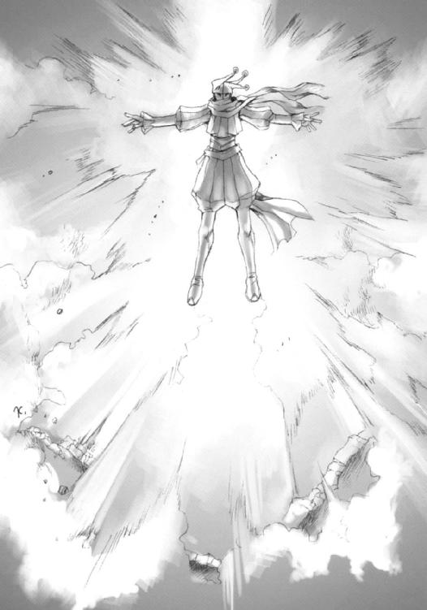
《ななな、なにぃ!?》
とっつぁんが思わず叫んでいた。メインスクリーン上の機構全体図が、一気に赤に染まってゆく。ダクトに流れ込んだ熱噴流が、周囲の機器機能を完全に焼き切ってしまったのだ。
《いかん、ボギー！ その階層から脱出しろ！ 援護できんぞ！》
社員寮階層の廊下に、また例の杭打ち機の音が響く。シャッターを破っているのだろう。
ボギーは言われた通り、さっさと逃げた。強化服ごと肩をすくめて見せる。
《やれやれ、なんて手際だ......よほど戦い慣れてるんだな。こういう無茶な奴らの相手は、それこそアンディの方が向いてるんだけど》
《なに弱音を吐いとるか。儂らもやられてばかりではないぞ。先の戦闘で、連中について判明したこともある！》
《へえ、なに？》
《道化師の方がニコル、女の方がルーというらしい》
《......他は？》
《ただ今調査中じゃ》
実はディビジョン駆除商会地下社屋の耐久限界時間は、もう四十分ほどしかない。それを過ぎれば、地下社屋の外郭部は砕けて、その持てる機能の大半を失うことになる。特に、とある機構にとっては致命的だ。なんとしてもそれまでに、事態をうまく収拾せねばならない......という危機的状況の中にあっても、真剣味に余裕のスパイスを効かせるのが彼らのスタイルだ。
「なるほど、ただ今調査中～っと、ね」
変わらぬ口調のゴシップは、外に撒いた〈ギブリ〉凝集スペクトラム伝導剤に対応した通信設備を調整、外部との連絡を取り付けていた。あの『Ａｂｒａｃａｄａｂｒａ』の、外部への侵食がぶり返さないよう、細心の注意を払う。
「お前さんが今やっていることじゃ。間違いではあるまい」
とっつぁんが、その脇のディスプレイにしかめっ面を映して言った。
「ま、そりゃそーだけど......おっ」
『ラインクリア』の表示。グラサン男はにんまり笑う。
「社長、繫がったっスよ。ラブマシーンと囚われのお姫様に連絡を取りますか？」
丸にＤ文字の湯飲みに口をつけていたディビジョンは、優雅に首を振る。
「デートの邪魔をする上司というのは、いかにも無粋だな。それに、おそらく繫がらないと思うよ。こんな状況だ、彼らも別の邪魔者に取り巻かれているんじゃないかな。話は、彼らが自力で通信を回復させてからだね」
ゴシップが確かめると、なるほど、繫がらない。こっちの状況はクリアなのだから、向こうに何かしら問題があるのだろう。
「......ん？」
不意に、ゴシップは伝導剤噴出口付近と地下社屋内部、両方のセンサーに感を得た。
「なんだ、上の連中か......？」
映像が、メインスクリーンの一角に投影される。
先端の縁を細かい金属突起の輪で幾重にも締めた太い管状の物体が、地下社屋廊下の天井から突き出していた。強襲突撃艇などに装備されている大出力の振動破砕装置だ（〈チャリオット〉にも小型のものがついていたが、業務には不要なので、とっつぁんとキットが取り外している）。密着させれば航宙艦の装甲にも穴を開けるこれで、地上の瓦礫や建材を突き破ってきたらしい。まったく、妙に装備のいい連中だった。
その管の先端が開いて、滑り台のように、強化服に身を包んだ突入要員が幾人も降りてくる。
が、とっつぁんは安堵の吐息でこれを迎えた。
「やれやれ、あの道化師や女のような援軍が来たらどうしようかと思ったわい」
ゴシップが怪訝そうな顔をする。
「にしても、今さら援護かよ......社長、どうします。装備でこいつらの身元を特定しますか？」
「さてはて......どういうことかな？」
この疑問の言葉は、ゴシップのものとは意味が違っている。
「私には見慣れたもののように思えるよ。この世で最も無粋でお節介で特権意識に凝り固まっている、弱い者いじめ集団が、実力行使に出るときの装備と、彼らはそっくりだ」
この粋人には珍しい露骨な悪口を、エリーが、これまた珍しく苦笑を混ぜてフォローする。
「はい。［連合政府情報部特別戦務局］の部隊と全く同じですね」
ゴシップが、自前の脳から情報を検索する。
「......［特別戦務局］？ ああ、［情報部区協課］の吹き溜まりですか」
［情報部］とは連合政府の管轄の下、区域間の対立に関する情報蒐集と、様々な反政府・犯罪活動を監視し調査する諜報機関だ（ちなみに、ヴァージョンが所属する［保安機構］は、この［情報部］も含めた全政府組織の情報保全に当たる『ガードマン』的存在）。
［特別戦務局］と言うのは、その情報部総務局にある区域間協力課（情報部区協課の略称で知られる）の一部署で、彼らの管轄案件において、警察では手に余り、軍では大げさ過ぎる事態に出動する即応部隊......というのは建前で、実際は［情報部］が『政府として表沙汰にするのは好ましくない』事態を独自に、速やかに片付けるための武力集団だった。
全員が［情報部］出身者で固められ、その閉鎖性と凶暴性から、非常に評判が悪い。というより、蛇蠍の如く忌み嫌われている（警察は『法の威を借る無法者』として、軍は『分不相応な武器を振り回すド素人』として、それぞれ軽蔑している）。しかし諜報機関にとってはある意味、必要不可欠な存在だった。
いずれにせよ、その汚れ仕事を請け負う武装集団が、彼らの社屋に続々と侵入している。ただ事とは思えなかった。
「ええと、強盗団を検挙しにやって来た......って、でも、機動ブイの攻撃や砲撃ってのは、連中の仕業っスよ？」
「なるほど、機材や装備が揃いすぎていたのは、そういうことか」
混乱するゴシップをよそに、とっつぁんは別の面から納得した。
ディビジョンは、エリーの差し出したお盆に空の湯飲みを置きつつ、指令を出す。
「どうも事態が入り組んでいるね......ゴシップ君、簡単な確認をまず行ってもらおうか」
「は、はいさ！」
ゴシップは、無駄に考えるのをやめて、自分のできることに取りかかる。コンソールに向かう顔が無言で、面白くなってきた、と叫んでいる。
「まず、ヴァージョン君のくれた時事新報のファイルが、実際のものと同一かどうか」
あっという間に、検索と照合が行われる。
「確認、終了。同一」
「次に、その襲撃事件全般が、今日のように派手な方式で行われたかどうか」
今度は、やや時間がかかったが、それでも遅れることわずか数秒。
「確認、終了。全件に、現況との該当項目なし。全部......どうやってかは知りませんが、強盗団の押入りは、秘密裏に行われてます。砲撃の痕跡は発見されてますが、全件、壊滅後しばらく経ってから発見されてます。戦闘中に、その行動が外に漏れた事例は一件もないっスね」
とっつぁんがついでに訊く
「機動ブイの運用は？」
「該当項目なし」
ディビジョンは、ふむ、と頷き、口元をわずかに指先で隠す。本気で思考を始めた合図だ。
「フォートラン君、突入部隊の配置図を出してくれるかね」
「了解した」
大スクリーンに、侵入者（と孤軍奮闘するボギー）の現在位置を示した地下社屋の平面図と立体交差図が、各種データを添えて表示される。
警戒システムとリンクしているとっつぁんが、概況を解説する。
「どうも、物理的な占拠が目的ではないようじゃな。最低限の経路にだけ警戒線を置いて、破壊の痕跡を辿って......奥へ奥へと進んでおる」
「援護するためか？ あの二人に？ 煽り食ってボギーに皆殺しにされるのが関の山だぞ」
「むう、今回ばかりは訳が分からんな。誰が誰の敵で、誰が誰の味方なんじゃ？」
ゴシップととっつぁんの期待の視線を向けられた彼らの社長は、この件を一人、呟くことで整理している。
「ヴァージョン君の不自然な虚偽依頼。本件は、他とは違う。根こそぎ奪う強盗団［ブラックアウト］。［情報部］が、我々と強盗団を追い詰める行動を取った。誰が誰の敵、味方か......？」
ふと、目線を上げる。
「ゴシップ君」
「はいさ、社長」
「［ブラックアウト］が強盗団だという情報の裏を取れるかね......いや、［ブラックアウト］というそもそもの名前は、誰が付けたんだい？」
「へ？ ......ああ、初出検索......出た。第一件の初動捜査中に、そのコードネームが初出。出所は不明。その後の捜査は、連続性を認められた段階で、管区司法当局から［連合政府情報部総務局区域間協力課］に権限移行......連合政府全体で扱う刑事案件である『世界犯罪』に区分されました」
「その段階とはどれくらいかね？」
「......明記なし。しかし一件目で既に、［情報部区協課］は捜査に嚙んでます。なんせ襲撃されたのは非合法武装組織っスから。当然っスね」
「ふむ、当然だね」
ディビジョンの声色には、笑いが含まれている。
「今、その［情報部区協課］が、［ブラックアウト］と時を同じくして我々の前に出現した。これは、あのヴァージョン君の依頼を、前もって［情報部区協課］が知っていたからだ」
「はあ？ でもそれなら、前もって我々に協力要請を求めてくるはずじゃあ？ その方が検挙できる確率も上がるでしょう？」
「それは［情報部区協課］の目的が、［ブラックアウト］の検挙にある、と仮定した場合の話だね。［ブラックアウト］がさっき外へ向けてのロンダリングジャック・プログラムを流したことで分かるように、外部への通信を遮断したのは［情報部区協課］の方だ。今回の件が、今までの手口とは違う、ということは、この場合、重要な意味を帯びてくるよ」
「......」
その皆が沈思する間を突き破って、不意にボギーの叫びが届いた。
《どういうことだい!? 道化師と女の子が、後続集団と戦闘を始めてる!!》
ディビジョンが、隠した口元に、笑みを乗せた。
それは、解を得た数学者の笑みだった。
ディビジョン駆除商会の下層も近い、空調・蓄電階層。
〈ゾーン〉内の大エネルギーを食うグレムリンには見向きもされない低い電力を、無数に分けて貯蔵する蓄電層の、まるで巨大な蜂の巣を壁に天井にしたようなスペースで、その戦闘は起こっていた。
「標的発見！」
その、上層へと続く廊下から放たれた、たった一声が、それまでの戦況を一変させた。
（!!）
ニコルは聞き、とっさに振り向いた。
廊下の角からばらばらと現れる突入要員たち。
いつかと全く同じ、唐突な来訪。
強烈な既視感が、赤く光景を瞬かせて彼を襲う。
燃える、家が。燃えてゆく、彼らの家が。燃えてゆき、崩れる、彼らの家が、暮らしが。燃えてゆき、崩れ去る、彼らの家が、暮らしが、友であり、親である、男が。
それを引き起こした者たちと、同じ姿、装備、出現......破局の象徴。
それが今、彼に襲いかかる。彼を『標的』と呼んで。
（......［特別戦務局］......!!）
自分たちに与えられた奇妙な、常と違う任務、その理由は。
道化師ニコルは、意識を占める赤い瞬きの中、一つの感情を爆発させる。
（......来た......来た......来た！）
それは、恐怖。
（終わりが!!）
「ニコル？」
少女ルーは、硬い表情に、ほとんど生まれて初めて、驚きを混ぜた。
敵が、かなりしぶとく張り付く敵が目前にいるというのに、ニコルは記号片の防御を解いて、背後の有象無象に散弾のようにばらまいたのだ。
「っわああああっ!!」
叫んでいた。冷静沈着、余裕というものの権化のように見えた道化師が。
背後に現れた突入要員の先頭集団は、戦闘隊形に展開する前に、この記号片の散弾を受けた。紙のようにその体を貫いた散弾は、当たると軌道を曲げて天井に向かい、当たる直前に降下、真下にいた連中を必殺の豪雨の中に押し沈めてしまった。床に着弾した記号片は、その場で不気味に振動して、次の指令を待つ。
あまりに凄まじい惨殺の様に、後続の突入要員たちは息を詰まらせ、角の際で止まった。
「......っはあっ、っはあっ......」
体を震わせて後ろを向くニコルを、ルーが突き飛ばした。
「ニコル！」
ルーが踵を回して背を向け、立方体の一面を盾のように展開した。鼓膜を裂くような跳弾がその表面に火花を散らした。
「......はあっ!!」
ボギーは容赦を知らない。
ルーというらしい少女に向けて次の手、必殺の念動力を撃ち放っていた。
ばぎゅ、と不気味な音を立てて、展開した装甲もろとも、ニコルを突き飛ばしたルーの左腕が折れ曲がり、引きちぎれた。
「ぐ......」
ルーはその痛みさえ麻痺する損傷を押して、立方体から後方に向けてミサイルを連射した。
ボギーは姿勢を横倒しにして、これを迎撃しながら陰に入る。
突き飛ばされたニコルは、よろける中でこの光景を見ていた。
「......ルー!! っこの野郎!!」
後方で床をこすっていた記号片が、床を削りながら前へと飛んだ。ミサイルの爆発をものともせずに進み、ボギーの隠れた蓄電層を一瞬でズタズタに破壊する。
「っう、わ!!」
ボギーのバックステップを踏んだ右爪先と、膝の装甲板が、この力の捻れに巻き込まれ、ひしゃげた。
蓄電層を捻り潰しながら通過した記号片が、後先考えずに追ってくる。
ボギーは全速で後退した。念動力を加えての加速が、辛うじてこれを突き放す。半秒下がるのが遅れていれば、全身が今激痛を送ってくる右爪先のようになっていただろう。
やがて距離の制限を越えたのか、記号片は一気に引き返していった。
ボギーは馴染みの、死線を惑う暗い動悸、生の証である荒く熱い吐息、その二つの、迫るような感触を、久々に味わっていた。
記号片の帰った先では、立ち尽くす少女に、道化師が手当を施していた。
「ルー、すまん......」
「痛い」
普段の余裕も消え失せたニコルは、自分の衣装を破って、ルーの千切れた肩口を塞ぐ。止血は身体機能でできるから、これは千切れた場所を隠すという、少女への気遣いだった。
「ああ、ああ、すまん」
「ニコル、後ろの連中」
「......」
「何？」
ニコルは、ことさらに軽く言って見せた。
「大丈夫、脅しときゃ、近寄ってはこないだろう」
「何？」
笑みの仮面はその問いに答える表情を持たない。声も、問いには答えない。
「大丈夫だ、いいから任せろ。ここの連中を片付けたら、全部終わらせる」
無表情な少女の顔が、わずかに上向き、しかし無言を通した。これまで、彼女の保護者であるこの道化師は、一度も間違いを犯さなかった。しかし、今彼女が黙ったのは、その信頼が理由ではなかった。彼が、既に背を向けて歩き出していたからだ。
肩越しに、声がかけられる。気遣いに満ちた、しかし答えではない、残酷で優しい声が。
「行こう。辛くなったら言えよ」
「事項了解」
後に続く少女を、その向こうに潜んでいる一団の気配を背に捉えつつ、道化師ニコルは身の内にかき回す感情の混沌を押さえつけ、隠す。
とうとう来た、この時が。
さて、哀れ狂いし我が友よ。
俺はうまくやれるだろうか？
ヘルムート・ニキシュ。
我が、友よ。
曲がって延びて、かすれてよぎる、一本の道路。
頭上を過ぎ、規則正しく夜に行列を延ばす街灯。
その上をふらふらと、しかし付かず離れず追ってくる鋼鉄の機動ブイ〈シバ〉。
そこからときおり舞い散る機関砲弾をかわすバイクの後部座席で、
「嗚呼......」
と後ろ向き、つまり機動ブイに相対する形で足をかませるアンディが、なかなかに悲壮げなため息を吐いた。今日期待していたのは、こんな色気の欠片もない光景ではなかったのだが。
「本当なら、今頃はどこかのレストランで夜空眺めて、『素敵な夜ね、アンディ。星空が空薬莢をぶちまけたみたいに綺麗だわ......』、『ふっ、あんなもの、君の瞳の輝きに比べれば、核爆発の前の曳光弾さ』、な～んていい雰囲気に」
「それ、あんまり良くない」
背後から、前席のヴァージョンとの間に挟まれて乗るキットの声がする。
「それよりも、せっかく作った物なんだから、ちゃんと使ってよね」
「へいへい......」
アンディは渋々、照星と照門につけられた同調装置を使って、街灯の上をよぎってはかえる機動ブイ〈シバ〉に狙いを定める。
（さて、どう落とすか......後続があるこったし、そう手間もかけてられねえが）
後方で別途に戦闘を行っているもう一機の〈シバ〉と......おそらくはあの狼型の格闘戦用機械獣をはじめとする追っ手との距離が、さっきよりも近くなっている。
（なら......そうだなあっ!?）
ヒュパッ、と空気を裂いて、頭上を例のレールガンから打ち出された砲弾が通り抜けた。
その衝撃波が街灯のアーチを一瞬でぐしゃぐしゃにした。伸び千切れ、屈曲部からもぎ取られ、また根っこから折れ曲がり、砕けたガラスの雨が彼らに降りかかる。
「くっ！」
「わあっ!!」
ヴァージョンが片手をかざして顔を守り、キットはただその腰にしがみついた。
アンディは街灯の欠片から目線だけを守りつつ、顔を勇める。
「こりゃ、思ってたよりも余裕がねえな」
「さ、最初からないでしょ！」
ヒュパッ、とさらに次弾が飛んでくる。
頭上にあった〈シバ〉が慌て、これを警戒して高度を取った。
通過した超音速弾は、今度は山肌に着弾して大爆発を起こした。
「やれやれ、派手だねどうも......さて、ヴァージョンの姉ちゃんよ」
頰に切り傷を作ったヴァージョンがわずかに、なびく髪の間から顔を見せる。
「何？」
「俺が合図したら直進してくれ。どうもこのままだとジリ貧だ」
「ええっ？」
「いいから、頼むぜ！」
アンディは後ろ向きになっていた体を、再び器用に前へと向け直した。後輪両脇のキャリアボックスの接合部に無理矢理足をかませて、半立ちの体勢を取る。
その、頭上で構えを取るアンディを、キットは真剣に見つめる。
アンディは、機械ではない、強力な意思の力を満たして標的を狙っていた。
（さあ、どこがいいか......まだ撃つなよ、レールガン野郎......）
予測どおり、頭上の機動ブイは、砲撃への恐怖から遊ぶのを止めて、標的を仕留めるための降下姿勢を取りつつある。その軌道、自分たちの進路、地形、全員の体重、速度、風向き......
計算と、それを確立させる勘が一致する時を、微動だにせず、待つ。
そして、ほんの数秒を経て、当たり前のように、その時は閃く。
「直進、速度維持」
「!?」
目の前はカーブだ。それでも、ヴァージョンは従わされた。アンディの声は、自暴自棄でも無謀でもない、確信に満ちた、冷静な響きを持っていた。まるで、そうするのが当然、というばかりの響き。
ズン、とアンディが大口径弾を発砲。道路脇の障壁を、その半ばから砕いた。
ヴァージョンはその意図を看破し、しかしそれでも仰天した。
（できるって言うの!?）
できるのだった。
バイクは最大速力を出して、この砕かれた障壁に前輪を、半瞬後には後輪を掛けて、宙に飛び出した。路面近くまで降下していた〈シバ〉の、機関砲と可動式連装ロケットランチャーを載せた上部装甲が背後を降り下がってゆく。
アンディは振り向き様、その操縦席、機動ブイが唯一装甲を施していない場所を真正面、射程に捉える。
一撃の発砲、コクピットキャノピーの粉砕、両乗員の飛散、バイクの降下、それらがスローモーションのように繰り広げられ、最後には極め付けの名人芸が披露された。
アンディが、キットとヴァージョンを両脇に抱えて、落ちゆくバイクを蹴ったのだ。
「っうそ!?」
叫んだのはヴァージョンだけだった。
キットは、その名人芸を存分に味わっている。
三人の落ち行く先に、主の制御を失い降下する〈シバ〉がある。その上面装甲が細る先にある、キャノピーに空いた穴に、アンディは両足をどっかりと沈み込ませた。
「俺ここまで！ キット！」
「りょ、了解！」
キットが体を逆さにして操縦席内に滑り込んだ。前任者の血溜まりの中から操縦桿を探し出し、まだ握ったままの腕ごと、向きを上昇に入れる。
激突寸前の山の斜面が、一気に遠ざかった。
キットは汗と血で汚れた顔を、ようやく首から上のない前任者に向け、一声かけた。
「逆さまで失礼」
路面を搔いて巨重疾駆させる銀狼シンメルは、驚愕の声を上げていた。
「機動ブイを!?」
「噓......」
と当然の感想を漏らしたのは、〈悪霊団〉を周囲の山間に引き連れ、銀狼に騎乗する異形の鎧ベルヒトである。
その見やる先で、新たな主を得た機動ブイが上昇、離脱してゆく。
彼らの上空にある、もはやタール・チームに残された最後の戦力である機動ブイ〈シバ〉が、追うべきかどうか、その迷いを示すように一旦遠ざかったほどの、それは無茶苦茶な、予想外の事態だった。
「シンメル、山陰に入っちゃうよ」
「まずいな、もう二つ三つ山を越えれば、連中のテリトリーだ。〈悪霊団〉を置いていくことになるけど、仕方がないな。追う間くらいは推進剤も保つだろうし......衝撃に備えて！」
「じ、事項了解！」
数回、銀狼の足先が青く光った、次の瞬間、路面を押しひしゃげて、二人は跳んだ。いや、飛んだ。いつしか風切りのための翼が体の両側から大きく広がって、銀狼は夜空を飛翔する。容易な視認を招く噴射は既に止めて、高速の滑空に入っている。
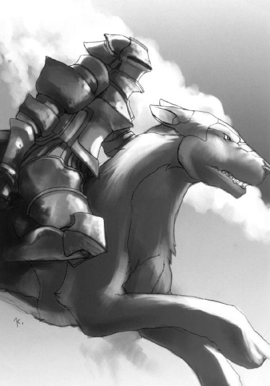
この突然の離脱に置いていかれた形の機動ブイ〈シバ〉は、慌ててミサイルを撃つが、
「何回やれば分かるの、もう！」
銀狼の上で姿勢を低くするベルヒトが、うるさ気に直線の砲身となった腕を後ろに向けた。実弾発砲するまでもない。空打ちによる強力な磁力線照射だけで、誘導兵器は制御を失う。
ミサイルは見当違いの方向へ飛んでゆくが、二人はもはやそんな物は無視して、声を交わす。
「手強いと思って、君や〈悪霊団〉を連れに引き返したのが失敗だったかな。さっさと追撃をかけていれば......」
「判断は間違ってないわ。あんな神業でいきなり飛びかかられたら......避ける自信、あった？」
「......ううん、そうだね。ベルヒトの言うとおりだ」
また一瞬の光を足先から吹いて、有翼の銀狼は前方を行く機動ブイを追う。
ディビジョン駆除商会地下社屋の耐久限界時間まで、あと三十分余。
その危機的状況を全く匂わせず、ディビジョンは朗々と告げる。
「私の推論を言おう。［情報部区協課特別戦務局］は、［ブラックアウト］を捕らえようとしている......これは捜査当局としては当たり前のことだが、しかしなぜか、彼らは我々に協力を要請することもなく、外部との連絡経路を遮断した。つまり彼らは、今ここで起きている事を隠そうとしているんだ。その理由として思いつくものは、一つしかない」
「あのアブラカ云々の、ロンダリングジャック・プログラムっスね」
ゴシップが、それに直面した者として回答する。
「そうだ。ネット内のプール資金や、それを生み出す表裏の経営手法、流通経路、情報の数々。それに、それぞれの組織と繫がっていた人脈のデータや、そこから得られる保護、恐喝による利便......これまでの組織から巻き上げたもの、あるいはこれから巻き上げるもの......あれは、言ってみれば『打ち出の小槌』だよ」
「......よくそれだけ思いつくものじゃな」
とっつぁんは呆れ果てたが、ディビジョンは例によって涼しげに酷いことを言う。
「私が手に入れたときに期待するものを並べただけだよ......まあ、それはそれとして」
とディビジョンは話を進める。
「［情報部区協課］は今まで連中を追って来た。しかし［ブラックアウト］は、常にその先を行って彼らを出し抜き、彼らが駆けつけたときにはもう全てを奪った後......これが今までのパターンで、［ブラックアウト］はそれゆえに恐ろしい連中だ、ということになるのだが......実はこの流れには一つ、大きな盲点がある」
ディビジョンはその解説を、傍らに立つ秘書に、目線だけで求めた。
エリーは、例によって澱みのない回答を返す。
「はい。最初から、［情報部区協課］と［ブラックアウト］が繫がっていれば、彼らの神出鬼没ぶりも、十分に理解可能です」
「なぬ？」
とっつぁんは画面の中で首を傾げたが、ゴシップは気づいた。
「ん、待てよ。裏組織を潰して、金と経路を巻き上げる......その受け手がもし政府なら......」
話は全て逆転してしまう......強盗団が、効率的に非合法武装組織とその情報経路を潰し、資金とそれを生み出すシステムをそっくり頂く、政府の秘密組織に！
「［情報部区協課］は、連中の襲撃計画を前もって知ることができる......しかし、それ以上の制御ができない、という立場にあったのだろう。もしできるのなら、我々と嚙み合わせたりせずとも、連中からプログラムを取り上げるだけで事は済むからね。連中は相当に自由度の高い、あるいは高レベルな機密の中で活動していて、［情報部区協課］は本来、その後始末役に過ぎない、というところかな」
「はい。［ブラックアウト］が通達を［情報部区協課］に送り、非合法組織を潰して資金を政府へと回収。事後に、その『世界犯罪』を追うと称して［情報部区協課］が乗り込んできて、管区司法当局の調査を打ち切らせ、証拠や痕跡を消し去る。通常のシフトは、このようなものだったのではないでしょうか」
エリーの総合分析を、そこに込められた意味を、ゴシップは悟る。
「通常のシフトは、か......それが、今回は違う、と？」
「そうだ、ゴシップ君。今までは後始末のため、おっとり刀で駆け付けて来ていたはずの［情報部区協課］が、今度の件では最初から現れ、あまつさえ交戦までしている」
「まさか、上の騒ぎは......！」
とっつぁんもようやく事態への理解が及んで、絶句する。
「もう一度言おう。外部への通信を遮断したのは［情報部区協課］の方だ。そして、今回の件が、今までの手口とは違う、ということは、この場合、重要な意味を帯びてくる」
「はい。『後始末役であるはずの［情報部区協課特別戦務局］が、独断で［ブラックアウト］を捕獲、ロンダリングジャック・プログラムを得ようとしている』、ということでしょう」
エリーの回答に、ディビジョンは会心の笑みを浮かべる。
「恐らく、正解だ」
「......じゃあ、あの女狐は、どういう位置にいるんスか？」
ゴシップは、今回の件を持ち掛けてきた女クラッカーの、不敵な笑みを思い浮かべる。
「そう、それが我々にとって最大のブラフだったね。彼女が〈フーダニット〉ドライバーだという事実が、必然的に彼女と政府の繫がりを匂わせていた」
「しかし、それも違う？」
「今のところ、彼女が政府の使者だ、という傍証はない。むしろ［特別戦務局］のためになるよう動いている。つまりヴァージョン君は、我々に、あの捕捉不能な連中の先制攻撃で全滅されてはまずいと思ったんだ。あの二人と、隔離された空間内で延々消耗戦を繰り広げてもらうのが、［特別戦務局］のために......二人を弱らせることになる」
「だから連中の出現直前に、虚偽の依頼を持ち掛けて注意を喚起した、ってことっスか」
「ああ。だから、その点に関しては今の所、彼女の思惑通りに進んでいるね」
「ちっ」
ゴシップは舌打ちして椅子に深く腰を沈めた。彼にとって、一番気に食わない結論だった。
ディビジョンはその鬱々とした空気を吹き飛ばすように、大きく言う。
「さあ、仕上げに取りかかろう、諸君。思考でも、行動でも、交渉でも」
「......交渉？ どことっスか？ 今回の件をネタに、政府を強請るとか？」
ゴシップのいじけた難癖にも、ディビジョンは当然、全く動じない。
「今さら政府の介入を招いたら、美味しい所は全部持っていかれて、抱いていた疑問は全部うやむやにされてしまう。それでもいいのかね？」
「......」
「思考で搔き分け、行動で生き延び、相応の報酬を得る。これが我々にとっての、楽しみだ」
とっつぁんとエリーは、忍び笑いをこらえるのに大変だった。
なんと、社長がゴシップを励ましている。
「まず必要なのは、あの非常識なまでに強力な二人組の正体を知ることだ。訳の分からない強盗団ではなく、政府筋で極秘裏に作られた組織というのなら、見つけようはいくらでもあるだろう？ ゴシップ君、君の出番はまだまだ残っているよ」
ゴシップは、嗚呼、と完敗のため息を吐き、そして勢いをつけてコンソールに向き直った。拗ねて見せるとしても、まず相手を選ぶべきだな、と苦笑が漏れる。
「......了解。条件は？」
「簡単だよ。連中が動き出した時期......四年前に政府機関で起きた大きな事件を洗えばいい。研究分野、あるいは組織の設立や異動にも、重点を絞って見ていこう」
「事件、ですか？」
「あんなとんでもない連中が、裏の裏に隠れて強盗まがいの真似をやっているんだ、妙な事情があるに決まっている。その事情によっては、かなり危険な探索になるが......」
エリーが、そろそろいいでしょう、とばかりに間に入った。
「はい。しかしこれこそ、スーパークラッカーの仕事でしょう」
とっつぁんも加わる。
「いよいよ、〈フーダニット〉が出てくるじゃろうな」
ゴシップは、湧いてくる可笑しさから肩を揺らし、大いに得意げに答えた。
「任せろよ、今度は色々備えてる。前みたくケツまくって逃げるような真似ぁ......ゴホン」
エリーが、まあ、といった顔をしたので、ゴシップは作業に専念することにした。
もはや後がなくなってきた。
ボギーはそのことを、階段脇の案内プレートを眺めながら実感していた。空調・蓄電階層を抜けた今、後は自分が立っている、とっつぁんの研究室や会議室などが入り組んだ社用階層と、最下層である社長室階層しかない。
《さて、ボギー君、聞いていたかね》
とディビジョンがその最下層の社長室から通信を送ってくる。
《呆れながら。あと三十分程度しかないってのに、よくもまあ、延々と無駄話ができますね》
そういえば、とボギーは思う。
一番下の社長室階層に、社長室以外に何があるのか、自分は全く知らない。いっそこのドサクサで見ることができるかも、などと紙一重の危険な考えを持ってしまう。
《常に余裕を持つことは、あらゆる物事の成功率を高める、最も大きな秘訣だよ》
《なるほど、社長はその点では無敵ですね》
《そう誉めたり皮肉ったりしないでくれたまえ。給料のアップダウンに迷う》
《......褒めてる方でいいです》
《結構、それで本題だが......》
かつんかつん、こつこつ、とまた音が響いてくる。歩調が前よりもやや早目だ。
《ボギー、その階段は壊していいぞ》
と、とっつぁんが割り込んだ。
《と言われても......とはっ!!》
ニコルがいきなり念動力で階段を押し潰して、ルーともども、ボギーの真ん前に現れた。
ルーは立方体の千切れた面から、その恨みとばかりにミサイルを乱射する。
ボギーは一撃、念動力で波動を撒いて、これを誘爆させる。が、その爆炎の広がる間もなく、無数の記号片が弾丸のように飛んで来た。
「っく！」
必死に広げる防御壁はどんどん押されて、後進するしかない。実際武装が一つというのはキツい。相手がとにかく重武装過ぎた。
《本題だが》
《社長、後にしてください！》
《では時間を作ろう。フォートラン君？》
《うむ、ボギー、第三会議室じゃ》
《どこだって？》
言われても、実はほとんど足を踏み入れたことのない階層なので、勝手が分からない。大抵の話し合いは社長室か待機室でやっていた、その思わぬツケが今頃回ってきた感じだ。
《ええい、仕様のない、次を向かって右の扉じゃ！》
《了解......っわ、何だ？》
滑り込んだのは、見たこともない椅子と机だけの部屋。
その安物っぽい絨毯に着地した途端、ドアが壁ごと滑った。いや、違う。自分のいる部屋が、前の壁だけ残して動いているのだ。入ってきたドアが、あっという間に壁の向こうにスライドして消えてゆく。二つ三つドアが前を横切ってから、ようやく床は止まった。
《初歩的な仕掛けじゃが、当面のごまかしにはなる》
通り過ぎた、幾つか向こうのドアがぶち破られる音がした。
ディビジョンがさっそく言う。
《もういいかね、ボギー君》
《どうぞ》
と言うしかない。
《さっきまでの話を聞いていたのなら分かると思うが、あの二人に比して圧倒的に戦力の劣る［特別戦務局］が乗り込んできた......つまり》
ボギーは、あのニコルとか言う道化師の取り乱しようを思い出す。
《あの二人組への切り札みたいな物を持ってるって事ですか？》
《まあ、あくまで可能性の話だが》
《どうせその可能性に賭けさせるんでしょう？》
《人聞きが悪いな。可能性に賭けるんだよ、我々も、君に》
なるほど、ものは言いようだ、と心に前置きして、
《光栄ですね》
と白々しく答える。
《当面、その物体をフォートラン君が特定するまで、［特別戦務局］を刺激してくれたまえ》
《了解、ま、連中とやるよりは、はるかに楽な仕事ですよ》
《よし、そこまで送る。指示に従え。社屋のマップは開くな、どうせ変わる》
《んー......っと!?》
とっつぁんの声と同時に、また床が前の壁だけ残してスライドする。
この、なんだか好き勝手動かされる自分の有様に、ボギーは、『社長のゲームの駒』、という言葉を想起して、ため息を横に流した。
その前で扉が止まる。
一路、社を目指し空を行く機動ブイ〈シバ〉。
そのキャノピーに空いた穴から体を出して、後方を警戒していたアンディが、わずかに瞬いた光を視認して言った。
「後方、六時方向から何か追ってくる......航空機か？」
おつむの足りない前任者は空に退出願って、ようやく機のコントロールを得たキットだが、その環境は最悪だった。コントロールパネル自体は無傷だったが、肩から上のないシートは赤く濡れているし、砕けたキャノピーからは山間の夜風が吹きつけてくる。ついでに言えば、スカートがフットペダルを隠してしまって、扱い辛いことこの上ない。やっぱりいつでもズボンはいてる方がいいのかな、とキットは真剣に悩んだ。
その悩みを声にも落として、後ろに訊く。
「後席、何か使えるセンサーはある？」
「ダメよ。見りゃ分かるでしょ？ いい腕だわ、ど真ん中！」
キットの真後ろ、わずかに高くなった後席の計器パネルに繫がる大穴の向こうで、ヴァージョンがまさにお手上げの格好をした。
機動ブイは前現代の攻撃ヘリの後身機種だが、複座の配置は戦闘機と同じ、前席がパイロット、後席がフライトオフィサーになっている（ヘリだと前席がガンナー・後席がパイロット）。
兵器類制御の苦労が融合視界の導入でかなり軽減されたので、パイロットがガンナーを兼ねても問題がなくなったというのと、電子戦が対地攻撃機においても非常に複雑になってしまったため、それ専用の乗員が必要になった、というのがその理由だ。どちらも科学の発達からきているが、結果は正反対で、まさにプラマイゼロだった。
さらに彼らは、その兵器の発達に助けられ、また危機に陥っている。
前席の頭部を突き抜けた弾丸は、その真後ろ後席の計器パネルに大穴を空けていた。これが前現代どおりだったら、ブイは操縦機能を失って墜落していた。しかし今、そのパネルがないため、追いすがってくる物体を特定することができない。とりあえず、前席の火器管制機構が無事なことだけでも喜んでおくべきか。
「......見えた」
アンディが、結局一番頼りになる自分の目で、それを確認した。
「例の格闘戦用機械獣だ。上に何か乗っけてる......レールガンの砲兵か？」
その遠く、星空を背に浮かぶ影が、チカッ、と瞬いた。
「っ回避!!」
「っと？」
かなりいい加減に高度を下げた〈シバ〉上面装甲のロケットランチャー直上を、誘爆すれすれの距離でレールガンの砲弾が轟音を上げて通り過ぎた。びきっ、とキャノピーのひび割れが広がる。
「っちい、やっぱりそうか。ランダムに進路を調整！」
「そ、そんなこと言ったって......」
自分の愛機である強襲突撃艇〈チャリオット〉なら、どんな注文にでも答えることができると断言できるが、今初めて触った機体では、細かい調整などできない。反応の悪さから、整備がいい加減なのが分かってしまうのもかなわない。技術屋として非常にストレスがたまる。
アンディは相変わらず、外に身を乗り出して後方を警戒している。キットの位置からは見えなかったが、さっきの砲撃の衝撃波で、額から出血していた。
「やばいな、あいつら、結構速......」
「八時方向からミサイル！」
後席で、アンディと同じく目視警戒をしていたヴァージョンが叫んだ。
アンディが、その源を視認する。
「ええい、このくそ忙しい時に！」
手にある小口径銃の斉射一連、うまくかすらせて爆発させた。
その爆炎の光の中、彼らのものと同じ機影が、下方の山肌から忍び寄っているのが見えた。
キットは、火器管制機構を立ち上げる。
「狼さんたち、最後の一機を落としてなかったのね？」
「さすがに、そこまで親切じゃねえか」
《......そこにいるのか？》
「え？」
キットの保護面に突然、指向光通信による通信音声が割り込んできた。
アンディも、融合視界内にその声を受け取った。目線を後方、接地ギリギリの地上高度で迫る最後の機動ブイ〈シバ〉に向ける。
《そこにいるな》
この声には、聞き覚えがあった。そう、トレーラーコンテナの中で。
「性懲りもなく、デートの邪魔かい？」
《証明しに来ただけだ》
アンディが笑うのを、キットは感じた。
とても嬉しそうに、とても楽しそうに、とても誇らしげに。
強烈に熱い、親愛にも似た敵意を、声にして届ける。
「ようこそ、人間」
『ヘルムート・ニキシュ被告宅、火災で全焼 生存者なし』
ゴシップが見つけたその事件を、とっつぁんはよく知っていた。その筋では有名な事件であるらしく、とっつぁんも、この件については独自に調べもしたという。
この時代、ニュースはほとんど無限にネットワーク上に存在するので、人はそれぞれ好みのジャンルを一定の割合で受け取るニュース・メニューを持っている。つまりとっつぁんのニュース・メニューは技術・科学・発見・書道などの技術者的ジャンルばかり（最後のは趣味兼精神修養）で、この事件もその中にあったというわけだ。
「ドクトル・ニキシュか......一度会ってみたかった人物じゃな」
画面の中で、老人は感慨深げに言ってみせた。
「彼は、一体何の研究者だったのかね？」
ディビジョンは手前のサブディスプレイに、ドクトル・ニキシュの顔写真を映し出した。
科学者と言うよりは田舎町の教師とでもいうような、瘦せっぽちの中年男。しかし、その表情と目付きには、どこか奇妙に突き抜けた明るさがあった。
とっつぁんが得々と語り出す。傍らのスピーカーからは、とある少年の文句が延々、響いているが、皆、あえてそれは無視した。
「よく知られているように、我々の脳組織には、『電気的経路による現象への干渉能力』を生じさせるパターン・モザイクなるものが存在する」
「ふむ」
「これが『才能』、つまり特定の作業への非常適合能力を生むわけじゃが......」
このパターンというものは、先天的に備えている場合もあるし、後天的に形成される場合もある......つまり、生まれたときからできる、突然うまくできるようになる、ということだ。
例えば、アンディは戦闘に対する超理解・行使能力を備えた『戦闘の天才』という内的作用の持ち主だし、ボギーも思念による物理干渉を行う『特殊技能者』という外的作用の持ち主だ。
この作用は電気経路のパターンや共鳴、偶発的形状符合などによって生じるため、人間の持つ自然脳も、それを人工材で再現したアンドロイドのニューロン・ドームも、等しく同じ発生要件を持っている。
このパターン・モザイクこそ、まさに人類という存在そのものの謎であり、逆にその原理の解明が人類を根底から変えると目される、『最後の領域』だった（その力の巨大さを熟知するボギーなどは、この不用意な解明に大いに反対する立場を取っている）。
しかし実のところ人類は、その解明を欲しつつも、密かに、一昔前まで遺伝子に対して抱いていたものと同種の、自分の根源と存在の意味を解きほぐされ、知らされることへの......真実への恐れを抱いていた。
そしてドクトル・ニキシュは、この分野の草分け的存在であり、その真実への恐怖を、探究心と好奇心で取り除いた、あるいは最初から持っていなかった、『禁忌の男』だった。
彼の研究は、他者にとっては、完全に狂気の沙汰だった。
パターン・モザイクのデータを、『発生したものを探す』（この分野の研究は、データ収集が実に九割を占める）のではなく、『最初からパターンに合ったモザイクを作る』ことで得ようとしたのだった。そしてそれは、ニューロン・ドームに関する限り完全に成功した......という。
「という？」
ディビジョンの質問に、とっつぁんは重々しく頷き、答える。
「む、そのテストベッドとして完成した、たった一体のニューロン・ドーマーが、この事件で一緒に焼死したとされている......本当かどうかは、誰にも分からんのじゃよ」
ドクトル・ニキシュは、ニューロン・ドーム形成の初期段階において、特殊技能者から検出したパターン・モザイクのあやふやな電気経路概略マップを、特殊な技術で延々、多重立体複写し続けた。人間として機能する完成品一体を得るまでの過程で、失敗作として廃棄されたニューロン・ドームの数は、実に万を下らないと言われる。
つまり、現代の法的な見地からすると、この科学者は一万人を無為に生み、さらには自己の意向を強要した挙句に殺した異常者、と言うことになる。
ここまでならまだ、彼は霊魂原理主義者あたりが言いそうな暴言、物を粗末に扱った、という弁解で許されたかもしれない。しかし、彼はさらに次の段階に進んだ。
なんと彼は、自分の一人娘や、引き取っていた孤児たち......正真正銘、本物の人間に、その電気経路転写と副次能力の発生実験を施したのだ。
事ここに至って、研究成果と人道を天秤にかけて静観していた連合政府も動かざるを得なくなった。彼は生命倫理規制法違反で起訴された。まず有罪は確定と思われた。
「しかし彼は、自分の後に土足で踏み込んでくる研究者たちに、自分の『研究成果』を荒らされることを拒んだそうじゃ」
とっつぁんの、同じ科学者としての冷淡な口調に、ゴシップは思わず、ごくりと唾を飲んでいた。とっつぁんは気づいて、申し訳程度に笑う。冷笑だったが。
「......いや、その表現は的確ではないな。彼は、『彼なりのやり方』で愛していたニューロン・ドーマーや子供たちが、他人の手でいじり回されることに耐えられなかったらしい」
「......」
ディビジョンは、その話の行き着く先を察した。ニュース画面を見直す。
「彼は、『自分の子供たち』を、『より良き人類』に育ててやることだけを、ただひたすら考え続け、そのための試行錯誤として、かの実験を繰り返していたそうじゃ......その意味では、彼の愛は本物じゃった。誰も彼を笑う事はできん。彼は世間の批難の中、在宅のまま起訴されたが、出頭も頑なに拒み続けた。そしてほどなく、この火事......」
「揉め事、かね」
「恐らく。さっきのニューロン・ドーマーも博士の娘も孤児たちも、死体は酷い有様で、博士が自分で殺した後に自宅に火を放った、と当時は言われたものじゃが......その事件の本当の所を今、我々は見とるんじゃないかね」
大画面に、社内を闊歩する二人組のデータが映っている。
「......ニューロン・ドーマーと娘、ね......で、俺としては、こっからが本題なんスけど」
とゴシップが切り出した。大画面に項目表が浮かび上がる。
「これ見てください。そのドクトル・ニキシュが生前から名誉職なんかで名を連ねていた研究機関が、彼の死後にいくつもの『画期的な発見』をしてます。おかげで翌年から政府からの大規模な資金投下もらって、ウハウハって感じっスね」
「ふん、ハイエナどもが」
とっつぁんは吐き捨てた。今度はゴシップが笑って、
「その研究機関を洗ってるうちに、政府が妙なファイル名を連発してるのに気がついたんスよ」
画面に表れたのは、ただのファイルネーム。それが、研究機関も含めた、大樹のような繫がりの一分枝として出現し、その先をみな途切れさせてしまっていた。その名は、
「［ハーバーガイス］？ 『子脅しお化け』......独系の名詞じゃな、ドクトル・ニキシュと同じ」
とっつぁんが博識を披露した。
「それで、逆にそのファイル名が挙がる場所から、軍需関係の分野に繫がりがないか当たってたんスけど......二、三個、兵器製造なんかとは関係のないはずの分野の研究所に、かなり無茶な額の予算が、政府からの巧妙な迂回・偽装経路を通って投下されてます」
ふむ、とディビジョンは頷いて、先を促す。
「で、それらの研究所が、これまた一つの政府機関と密接に連絡を取り合ってるんス」
「［情報部］かね？」
「いえ、それが......これなんスよ」
画面の分枝が切り替わり、一つの調整中の経路を示す。
「かなりでかい相手らしくて、侵入経路の割り出しに時間食ってるんス。〈フーダニット〉に食いつかれないよう何とかやってみま──」
遮って、ディビジョンが突然、言った。
「いや、必要ないよ」
「は？」
振り向いたゴシップは、そこに意外すぎるものを見た。
ディビジョンが、眉を顰めていた。
「......なるほどね、よく分かったよ。彼らの活動の意味も、意図も、黒幕も」
「社長？」
とっつぁんも、彼らが誇る無敵の社長の深刻過ぎる口調に驚いて、自前のモニター頭部を振り向けた。
「多分、この［ハーバーガイス］という計画名、あるいは組織名は、当たりだよ。私はこの経路のパスコードを、それを使う組織を、よく知っているのだよ。エリー君」
「はい。パスコード、転送します」
ゴシップが苦労していたこの経路が、一つのパスコードによって、あっさりと開く。
ディビジョンは、頭を抱えるように、軽く額に手を添えた。
「なんということだ。あの二人組は、私がこの世で二番目に恐れるものの手先だったのだよ」
「社長が？」
ゴシップが、
「恐れる!?」
とっつぁんが、戦慄する。
やがて、ディビジョンが、おもむろに口を開く。
「......それは」
画面に、一つの政府機関名が点る。
［連合政府財務省税務管理徴収部］。
「税務署だ」
ディビジョン駆除商会地下社屋の耐久限界時間まで、あと二十五分を切った。
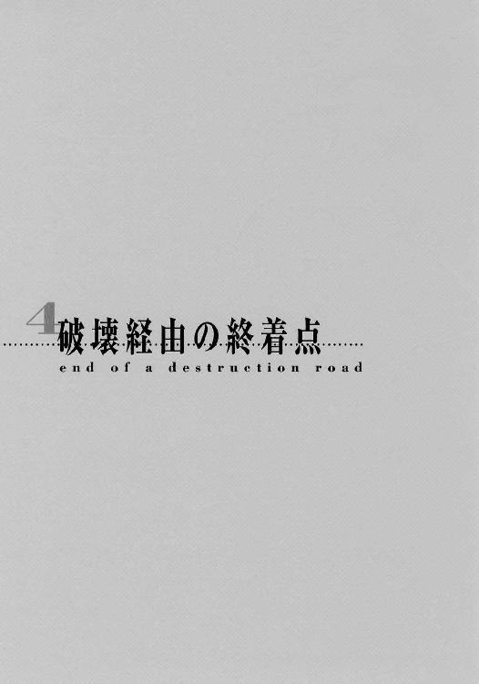
暗夜山間、三者による追跡劇は、まさに今、最高潮の熱気と危機感の中にある。
その先頭、アンディらの乗る武装をまとった鉄の箱舟・機動ブイ〈シバ〉が、地上高度......つまり地形すれすれの低高度を、最高速度で飛翔する。
続いて追うタールワンの同型機〈シバ〉、その上下装甲にある、穴を幾つも空けた円筒形の連装ロケットランチャーから、推進剤の燃焼音を吹き上げながら、ロケット弾が連続して発射された。山間にたゆたう闇の中、火を引く矢のように標的へと向かう。
「降下だ！」
「分かってるわよ！」
ロケット弾は、アンディとキットの叫びを乗せた〈シバ〉の、わずか上を突き抜けた。
「さ、下げすぎよ！ 木に引っかかる！」
後席から下を覗くヴァージョンが悲鳴を上げた。物凄い勢いで、眼下の光景が流れ過ぎてゆく。もしこの速度で樹木に引っかかれば、一気にひっくり返って地表に激突してしまう。
「ええい、もう......なんて鈍い操縦桿なの!? この下手くそっ!!」
前席のキットが、ここにいない［特別戦務局］の整備士を罵倒しながら必死に操作するが、やはりというべきか、〈シバ〉は、なかなか言うことをきいてくれない。
「次だ！」
アンディが、タールワンの〈シバ〉と別方角、追跡の最後尾に閃く光点を見、叫ぶ。
「どっちよ!?」
答える間にもキットは機位を右方向にずらす。と、そのずらした先で、空気を裂く音も後に置く弾丸が通過した。その衝撃に、舷側先端にあったミサイルポッドが一つ、爆ぜた。
「う、右翼被弾......じゃない、誘爆！」
いつの間にかナビゲーター役になっているヴァージョンが叫んだ。
「こらあ、当たりに行ってどうする！」
「こっちは見えないのよ!?」
アンディとキットが絶叫を交わす間にも機体はヨレて、速度が落ちる。
その容易い標的が追跡の最後尾、滑空するシンメルに騎乗したベルヒトの照準中央に入る。
撃発、ほぼ同時の着弾。
「後部被弾んぐぐ!!」
ヴァージョンが見た先、機尾に、斜めに突っ込んだ砲弾が破裂、大穴を空けていた。凄まじい衝撃が、機内の三人を攪拌するように揺さぶる。
ヴァージョンはキャノピーから外を覗いて脱出を検討するが、〈シバ〉は未だ、飛び降りるには危険すぎる速度を保っていた。なんとも往生際の悪い......あるいはタフな兵器だった。
アンディはそれでも、もはや山を越えたあたりでこの機体が力尽きることを理解する。
「ち、これまでか」
「簡単に言わないでよ」
「うぉわ!?」
キットは、姿勢制御を思い切り誤った......ように見える機動を取った。飛行する針路はそのままに、姿勢だけをぐるりと後ろに向けたのだ。見た目、全速後退のていになる。
「派手にやるから、あと何とかして！」
「簡単に言うなよ、相手は空飛んで......っとと！」
残った武装ラックから、後先考えない全力射撃が行われる。それでも、非誘導兵器のロケットランチャーや機関砲弾で空の銀狼を、誘導・対地ミサイルで地表近くの〈シバ〉をしっかりと狙っているあたり、決して無駄撃ちではない。
「くそったれ、思い切ってやるか」
アンディは夜風の中、周りを眺めやる。
下方の〈シバ〉が、ミサイルの直撃を受けていた。ひたすら逃げるこちらとは違い、接近し続けているのだから、出合い頭に被弾してしまうのは仕方がない。それでも、タールワンは勇猛果敢に接近を続ける。至近距離での機関砲掃射で撃墜するつもりなのだ。
こっちの速度は落ちている。一旦その射程内に入ったら、もう振り切ることはできない。しかも、山地はもう終わる。そこは主要都市郊外の緑地帯......社に程近い、まさにホームグラウンドだが、遮蔽物も地面の起伏もない。そこに入る前にケリを付けなければならなかった。
「キット、速度は落とすな、このまま全速で突っ切れ」
「言われなくても......っアンディ!!」
アンディが、すっぽりとキャノピーから抜け落ちた。いや、自ら落ちたのだ。
速度と慣性の、非常識なタイミングを取って、彼は濛々と黒煙を吐きながらも突進してくる機動ブイ〈シバ〉の前に、長銃を構えて舞い降りる。確信があった。
タールワンは、絶対に避けない。
避けるくらいなら、ここにはいない。
望みの勝負を、やろう。
〈シバ〉の後席乗員が、目前から銃を構えて降ってくる人影に驚き、叫ぶ。
「タールワン、近すぎます、回避を！」
「......」
「タールワン!!」
続けて放たれる声を、
「......っくく!!」
（笑っているな）
やはりタールワンは無視して、笑った。
（見えないが、笑っているな）
融合視界内で、標的を捉える。
（俺には分かる）
「......なあ、人間」
空中正面に交差する、機関砲と長銃の撃ち合い。
アンディの右太ももが機関砲弾の衝撃でえぐられ、
そして、
タールワンの頭部がスイカのように弾け飛び、後席乗員の胸が爆発した。
機関砲がトリガーを絞る圧力を失い、ひゅん、と回転を緩めて止まる。
しかし、アンディの本当の勝負はこれからだった。
「......っく！」
自分が撃ったキャノピーにぶつかり、衝撃を無理矢理殺す。速度につられて後方に跳ね飛ばされそうになるが、辛うじて指先をキャノピーに引っ掛けた。急ぎ、中へと滑り込む。
「よう」
と、そこにいる男に、旧知の友に会ったかのように軽く親しく声をかけると、操縦桿を、いまだ握る彼の腕ごと動かし、融合視界に火器管制プログラムを走らせる。
指示は『急速反転』、〈シバ〉が風を切って機首を標的に振り向けた。
続いて『全力射撃』、瞬時に全兵装を撃発する。
機首の先、至近を飛び過ぎようとしている、有翼の銀狼と騎乗する異形の鎧に向けて。
《撃墜されてない!? ベルヒト!!》
二人は、両者の激突の結果が、いきなりこっちへの反撃に転換されるとは思ってもいなかった。完全な不意打ちになった。
《あと五秒要る！》
言う間に、アンディの奪った〈シバ〉から機関砲とロケットランチャー、ミサイルが夜空に火の豪雨のように逆巻き立ち上った。
ボボッ、とシンメルの足先から青白い炎が走ったが、姿勢制御がせいぜいで、回避には遅すぎた。ベルヒトは緊急措置を取る。
《っ撃つわ!!》
砲身となった長い両腕が振られ、磁気嵐を火花と撒きつつ火の豪雨に真っ向から発砲。電力チャージ不足による砲撃は威力不十分だったが、それでもその弾速は並みの砲弾とは比べ物にならない。豪雨の中心を一気に貫いて、砲弾が一発、アンディの〈シバ〉をぶち抜いた。
火の豪雨の大半が、この砲撃で誘爆を引き起こす。
この、空中で起こった、まるで銃手の決闘のような瞬時の撃ち合いは、膨れ上がる炎と爆風が双方を空から押し出すような、墜落で終わった。
アンディの機動ブイは、真正面から機関部に直撃を受けていた。致命傷だ。
キャノピーの穴から身を乗り出したアンディは、ふと振り向いて、後に残す男に声をかけた。
「倍返しがしたけりゃ」
まだ相当な高度を、それでも機を蹴って飛び出した瞬間、
「天国で待ってろ」
その背を襲うように機関部が大爆発を起こした。
そして反対側、
《ベルヒト......！》
異形の鎧が、銀狼の背から零れ落ちていた。片腕を機関砲弾に持っていかれ、破片に体中を切り裂かれていた。分厚い曲面装甲をまとった格闘戦用機械獣と違い、砲撃・管制機構体の彼女は、至近の多重爆発に耐えられなかったのだ。
《ベルヒト！》
《......》
《ベルヒト!!》
泣く時に目の前にいる相手の名前を連呼するのは、あの男の子の癖だ。
そういえば、昔はよく聞いていたその癖を、いつからか、聞かなくなった。
あの炎の中で一人、目の前で死なせてからだろうか。
《ベルヒト!!》
炎の中。
今、自分もそこにいる。
ディビジョン駆除商会地下社屋の耐久限界時間まで、あと二十分余。
まるで追い剝ぎだな、とボギーは思った。
突然壁が開いて、［特別戦務局］の突入要員を射程に入れる。〈ワルツスコア〉が唸り、先頭集団の最後列から順番に、冷酷に、片付ける。
突入要員たちの運命は、まさに悲惨の一語に尽きた。後ろからは銃撃を受け、慌てて進めば、前には恐怖の二人が待っている。一旦退いて態勢を立て直そうとしても、退路にはいつの間にか壁があって、まごついている間に追い討ちの銃撃を喰らう。
あまりに呆気なく、先頭集団は壊滅した。後続は、とっつぁんが迷路の中に誘って、もはやいようがいまいが同じだ。あの二人に比べて、与し易いことこの上ない。
ボギーは、その先頭集団の死体を一つ蹴転がして、とっつぁんに視覚映像を送る。
《で、どれ？》
《そうじゃな......隊長格の人間は分かるか》
《ん。これだね》
集団の最後尾、つまり真っ先にボギーに撃たれた強化服に、ラインペイントが施されている。
その手には、他の人間が持っていない銃が握られていた。単発式で口径も大きく、まるで信号弾の発射筒のようだ。ボギーは薬室を開けて、そこに一発だけ弾が入っているのを確認した。軽くスキャンしてみる。
《何の変哲もない、ただの弾だよ》
《ふむ......謎は材質にあるのかのう？》
他も調べてみたが、どうも、この安っぽい銃以外に、それらしい物はない。
《やれやれ、訳の分からない武器が決め手、か......一番恐い勝負だな》
不満を隠さずに言うボギーだが、しっかりと他に弾の予備がないか調べているあたり、抜け目がない。
しかし結局、その一発だけだった。
疲れた。四年間、闇の徴税吏として、友の子らを守るために戦ってきた。
本当に、疲れた。少しも前に進めない、下がり続けるだけの、消耗するだけの日々だった。
しかし、もう少しだ。今、ようやくその無為の時に終わりが訪れた。
全てを終わらせることができる。俺の終わりで。彼女らの始まりで。
そもそもの始まりは、いつだったか。最初に意識が覚醒して、
「おはよう。君の名は、ニコラウスだ。ずっと、そう決めていたんだ」
と朝の光の中、奇妙な明るさに満ちた笑みを初めて瞳に入れた時からか。
それとも、顔である場所を不審げに触っている時に、
「すまんな。あいつらに見掛けだけでも取り繕う必要があったんだ。そのうち変えるよ」
と悪戯っ子のような笑みを仮面に映した時からか。
それとも、肩にとんでもない装備を付けられ、
「こいつは君だけのものだ。より良き一人の、僕の理想の、一つの結晶だ」
と外れた誇らしげな笑みを向けられた時からか。
それとも、［特別戦務局］の襲撃を受け、
「あの子らを頼むよ。僕には、君しか頼みにできる人間がいないんだ」
と澄んだ哀しさを込めた笑みとともに託された時からか。
それとも、燃え盛る炎の中、
「父様、答えて」「博士、博士......」「死んじゃいや、死んじゃいやー!!」
立ち尽くすあの子らを見つけた時からか。
疲れた。それを終わらせることができるこの日を、思い描いていた。
本当に、疲れた。今なら分かる。俺はこの時を、待ち望んでさえいたのだと。
そうだ、もう少しだ。もう少しで、全てを終わらせることができる。
あの弾丸の前に俺が生きる道はなく、その終わりへの恐怖もある。だが、
諦めよう。
その代わりに、あの子らを、解放してやれるのだから。
もらった命と名に賭けて、約束を果たそう。
あの子らを、解放してやろう。
あの子らのために、我が友のために、
俺を、諦めよう。
痛い。
こんなに痛いのは、あの時以来。全てが燃えていた、あの時以来。
シンメルライターとベルヒトが、わんわん泣いていた。
「大丈夫だよ。ニコルに付いていきなさい。あいつが、お前たちを守ってくれる」
それは、命令？ ニコルにも、そう命令したの？
「はは、どうだろうね」
なぜ笑ってるの。痛くないの。
「お前の傷ほどじゃない。それに、笑っていなければ、おまえたちが泣くだろう？」
シンメルライターとベルヒトは、泣いてる。
「......それでも、笑うのさ。おまえが思い出すたびに、私は笑っていたいんだ」
そんなの嫌。
「......ブリギッタ？」
そんなのは、嫌。もっと、悲しくなる。
「......そうか......ありがとう、私の娘」
なにが？
「......お前も......私を、愛してくれて、いる、の......だ、ね......」
愛してる？ 分からない。ただ、悲しいだけ。
父様。
「..................」
笑ってる？
父様。答えて。父様。
答えて。
ゴシップは案外簡単にそのファイルを見つけ出していた。当然来るものと警戒していた〈フーダニット〉が襲ってこなかったのだ。
ファイル名は、［連合政府財務省現況調査兼強制徴収特例法下税務署］。
この長ったらしい名前が、署長ニコラウス、統括官ループレヒト、強制調査官シンメルライター、同ベルヒトらに与えられた、社会的任務だった。
彼らがここに配された理由は、ひとえにドクトル・ニキシュの研究成果ゆえだった。
ドクトル・ニキシュの研究成果は、実は有用なものではなかった。それは、特定個人の能力伸長を促すためのものであり、万人に施せる普遍的な技術ではなかったのだ。
その典型的な例がニコラウス、通称ニコルに装備された〈メトロノーム〉可変念動力伝導体、およびループレヒト、通称ルーに装備された〈アウフホッカー〉総合サポートデバイスだった。
いずれも、一部の戦闘様式を変化させるほどの発明だった。しかし、これらの装備は、運用者の脳内に、焼き付けねばならない特別な制御パターン・モザイクを必要としており、常人が後付けで装備することはまず不可能だった。さらに、その焼き付け......電気経路転写の成功確率も天文学的な数値になる、となれば、その技術に公的な価値はないに等しかった。
『人工的天才』という個人の持ち物に過ぎないそれらは、まさにドクトル・ニキシュの愛情の産物だった。彼は彼の子らを、『より良き人類』に育てることしか考えていなかったのだ。
それが個人の財産によって行われたのなら、まだしも問題は大きくはならなかっただろう。しかし彼は歴とした政府機関の研究員で、それも湯水のように費用を使って行ったのだった。
彼に投下した莫大な研究費が、個人の道楽として使い込まれたことにようやく気づかされた連合政府は、彼を表向き生命倫理規正法違反者として起訴し、社会的地位を奪った。
そしてほどなく、博士にとある嫌疑がかけられた。
理論や学説で反目する同業者か、彼を科学的狂人と警戒した政府部内者か......その嫌疑を口にした人間が誰だったのか、今となってはよく分からない。
ただ、『博士が電気経路転写技術を裏の世界に流した』、という他愛のない噂が、その特異な人物像の影の中で膨らんでいったことだけは事実である。
結末は、呆気なかった。
［情報部区協課特別戦務局］の部隊が、自宅で『何らかの行動への準備中だった』博士を殺害、屋敷に火を放ったのだ。その家族......娘一人、養育者二人、ニューロン・ドーマー一人......は、世界反逆罪加担者として拘束された。彼らが、博士の望んだ『より良き人類』として強大な力を持っていたのだから、この拘束は正統な予防措置である、と［情報部］は言い張った。
彼らは以降、政府管理下の研究施設での実験協力に従事し、その大筋の完了とともに、特例法下破壊活動に投入されることになった。強大な力を持つ、しかし後のない使い捨ての天才たちの、せいぜいの使い道だった。
［ハーバーガイス］。
戦闘を無限に行い、非合法組織を潰し、連合政府へと資金を上納し続ける、
それが、彼らの投入された特例法下破壊活動計画と、それを遂行する組織の名称だった。
「......やっぱり、逃げたがってるんスかね？」
「分からんな。まさか本人たちに尋ねるわけにもいかんじゃろうし」
「お互いの立場上、尋ねるのは無理だろうが......」
「はい。彼らの話に、きっちり耳を傾けておきましょう。敵と味方は、この場合、とても近い位置にあります」
ディビジョン駆除商会地下社屋の耐久限界時間まで、あと十五分を切った。
いつか必ず、始末される。
ニコルは、その恐怖の中で生き続けることに疲れ果てていた。
いや、生きてさえいない。生かされているに過ぎない。それは彼にとって、実験や任務で思い知らされた、どうしようもない現実だった。
しかし、それでも彼はその現実の中に希望を一点見出し、自身が始末されるという終わりを待ち焦がれてさえいた。
自分の終わりこそが、彼女らの新たな旅立ちに繫がる、という一点。
そして今、その終わりの時が来た、と彼は思う。
終わりの具現は、一つの弾丸。
彼に絶対確実な死をもたらす、必殺の弾丸。
それを当然持っているだろう連中の訪れに、恐怖から逆上して、全く本末転倒なことに、守らねばならない少女を傷つけてしまった......そのことに彼はわずかに動揺していたが、しかし、自分の死の末に現れるはずの幸福、という歪んだ希望が、彼に辛うじて平静を保たせている。
ともかく、その混沌とした内心が表に出ることだけはない。
（ああ、幸いなるかな、笑みの仮面よ）
彼は、攪乱から偽装、後の身の立て方まで、彼女らを逃がし生かす準備を万端、整えていた。忠実な徴税吏としての彼が〈アブラカダブラ〉を使って取った、唯一の任務外行動だった。
しかし彼だけは、逃げることができない。
彼の胸深くに、その他でもない〈アブラカダブラ〉が内蔵されているからだ。かの〈フーダニット〉さえフリーに通過するという、政府機関秘蔵のプログラム。取り出すことは、時間も信用も技術もない彼には不可能だし、持ったまま逃げるのは、あらゆる意味で危険だった。
ルーやシンメル、ベルヒトらは違う。〈アウフホッカー〉や戦闘機構体を放棄させれば、政府もさほど重要視しないはずだった。元々が濡れ衣で拘束された身だし、何より彼とは違って、彼女らの持ち物は、各種兵器の制御における才能であり、直接的な力ではない。
彼女らを逃がす。そのためには、とりあえず当面の前後の敵を倒さねばならないし、この怪しげな企業が持つ大きなシステムは、保護者を失った彼女らの助けになるはずだった。潰し、奪い、普段は政府に上納しているものを彼女らに与え、逃がし、そして彼は......お役御免の時を迎える。後方の［特別戦務局］......無抵抗だったヘルムートを死に追いやった連中から撃ち放たれる必殺の弾丸で、同じように......。
「あの子らを頼むよ」
ニコルは、ヘルムート・ニキシュにそう言われたことを、重荷に感じたことはなかった。命令だとも思わなかった。そもそも、意識が覚めて以来、彼に命令されたことなどなかった。
（ただ、やりたいからしてきたんだ）
やりたい、それ自体の理由を、ニコルは考えなかった。
彼女らとは、別れねばならないのだ。考えて、胸の内に余計な感情が芽生えてしまったら、自分は彼女らの重荷になってしまう。それだけは避けなければならない。
特に、傍らにある少女の重荷には。
（ああ、幸いなるかな、笑みの仮面よ）
もし表情の浮かぶ顔があれば、今彼は恐怖と緊張に歪む顔を、ともに育った少女に見せてしまっていたろう。
（ああ、幸いなるかな、笑みの仮面よ）
今まで、どれほど訊かれても本心は明かしていない。露骨に迫られても誤魔化した。
彼女の心に、いつもへらへら笑っていた奴がいた、という大きさ以上に、自分の存在を留めてはならない。理解すればするほどに、失った時の痛みは増す。だから自分は、彼女にとって理解できない、遠い存在であり続けねばならない。
彼女が父親や自分から解放され、世に走り出た時、痛みも重みも背負うことがないように。
（ああ、幸いなるかな、笑みの仮面よ）
俺はここで終わる。
だが、
せめて彼女は自由に。
廊下は、静かだった。後方にいたはずの［特別戦務局］も、なぜか姿を現さない。前方で粘っていたはずの戦闘員も、どこかに消えていた。
ただ二人だけの足音が、響く。
ニコルは、その静けさの中で、予定調和を求めていた。
（......ルーはいつも訊いてくる......『ニコル、笑ってる？』ってな......だから今も）
「ニコル」
傍らにあるルーが、口を開いた。
ニコルは、仮面の奥で答えを用意する。
（......そう、『ああ』と答えるのさ......笑顔は仮面が作ってくれる......）
しかし、調和はあまりに呆気なく、崩れる。
「泣いてる」
それは、断言だった。
「！！！？」
ニコルは心の底から凍りついた。
足が止まった。
恐怖が、湧き上がってくる。
（やめろ）
希望が、崩れる。
一歩、ルーの前から下がった。
「なぜ？」
ルーは訊きながら、一歩、歩を縮めた。
意識が覚めて以来、ずっと一緒にいた少女の顔が、近づく。
「なぜ、泣いてるの？」
（......やめろ......俺は笑ってる！）
言われて初めて、ニコルは自分がどんな表情を浮かべているのかを、感じさせられる。
しかし、認めるわけにはいかない。
また一歩、ルーの前から下がった。
「答えて」
ルーは訊きながら、一歩、また歩を縮めた。
あの日以来、表情というものをなくした少女の顔が、また近づく。
「やめろ」
声に出た。また一歩下がる。壁が背中に当たった。
逃げられない。笑みの仮面が、役に立たない。
「答えて」
ルーは訊きながら、一歩、また歩を縮めた。
答えを求め、しかし今まで決して返されたことのない、それゆえに表情を浮かべられなかった......時の中で凍りついていた少女の顔が、また近づく。
「やめろ」
ニコルは恐怖する。凍りつかせた......そう、凍りつかせたのは自分。答えを求める少女に決して答えなかった自分。しかしそれは、彼女の幸福のためだった。そのはずだった。
「なぜ、泣いてるの？」
ルーは訊きながら、一歩、また歩を縮めた。彼女の顔が、仮面のほんのすぐ下にある。じっと、笑みの仮面を見上げている。
「やめろ......泣いてねえ!!」
その声が、足が震えていた。
ルーは黙って首を振った。そっとその硬い頰に、残った手を添える。
「......やめ......」
「ニコル、勝手なことを、考えてる。自分を生け贄にして、私たちだけ、逃がそうとしてる」
打算が、計画が、
「......う......ぁ」
「父様のせい？」
彼女の自由が、幸福が、
「それとも、私たちのせい？ それとも」
四年間の思いが、全て霧散する。
「私の、せい？」
なぜか、ルーは微笑んでいた。
ニコルは唸り声を低く上げていた。駄々をこねる子供のように。
「......っ............なぜだ、なぜ......逃がそうと、俺は必死で、なぜ、守らせてくれない？」
ニコルは、ようやく認めた。
「......俺の、家族を......!!」
自分は、今、泣いている。
それは、彼女らの幸福を消し去ってしまう、彼女らの重荷に自分を変えてしまう、決してやってはならないはずの行為だった。
しかし、ルーは微笑んでいた。
「それが、答え」
ルーは、仮面の頰にやった手を、そのまま頭の後ろに回した。
手に引かれて、ニコルは前屈みになる。顔と顔の距離が近すぎて、くらくらしてくる。
向き合うルーは平然と、しかし覚悟の問いを発した。
「ニコルが、私たちを守ったのは、命令だったから？」
それは彼女にとって、四年間、恐くて訊けなかった問いだった。
ああ、と軽く答えられるのが恐くて、訊けなかった問いだった。
しかし今、返ってくる答えはそうではない、という確信があった。
彼は泣いている。
彼は、泣いてくれている。
そして確信は、正しかった。
目の前にある仮面の向こうから、ニコルが答えた。
「違う」
と。
ルーは微笑みを浮かべながら、自分の確信を口にする。
「あなたは、泣いている。あなたは、私を愛してくれている」
死の弾丸よりも、強烈な言葉。
そして、止めが来た。
「私も、そう」
「......!!」
ニコルの歪んだ希望が、恐怖が、疲労が、粉微塵に砕けた。
「ニコル。あなたは、私の、家族。シンメルライターも、ベルヒトも......だから」
代わりに小さな、困難な渇望が生まれた。しかし、その渇望はすぐに心を占めるほどに大きく、強く、熱くなる。
「諦めないで、生きよう。一緒に」
その大きさ、強さ、熱さが、彼に再びの余裕を、今度こそ本物の余裕を与えた。
「......く、くく......言うように......なったな、この......！」
間近にあるルーの微笑みに、少し朱が混じった。
「もう、守られてるだけの子供じゃ、ない」
「分かってる......いや、分かった、か......」
「私も、守る、あなたを。それだけのこと」
そしてルーは、近すぎる顔を、さらに。
廊下の隅で隙を窺っていたボギーは、今日で一番気の抜けた声を出した。
《............社長》
《なんだね》
《キスシーンを邪魔する奴って、普通は悪役なんでしょーね》
《ハーレクイーンあたりを参照したまえ》
《あいにく、全部灰になってます......で、コレ、まだ試します？》
手の中にある銃が、やけに無粋な代物のように思えてきた。さて、事情は概ね社長や当人たちから聞いてしまったが、だからといって同情するのも妙な話だ。なんといっても、
《あ～、そうだな、ボギー君。もういいから、こっちに帰ってきたまえ》
向こうがこっちを殺そうとしていることに違いはないのだから。今さら説得どころのテンションではない。その証拠に、記号片の散弾が無茶な速度で飛んでくる。
《ぅわっ！》
かわすと今度はロケット弾が。まったく盛大なクラッカーだ。
《デバガメは失礼だが、大体事情は諒解させてもらった。結論から言うと、彼らは前にも増して強力になるだろう》
《身をもって、味わってますよ!!》
《彼らが我々の〈ポーカーハンド〉を乗っ取って、取引材料なり逃亡の直接間接の力とするなりで使おうと考えることは、容易に想像がつくからね》
《つまり、僕たちは、もっとヤバくなってるってことじゃ》
最後の、社長室区画への階段ホールが、前方に見えてくる。
《だからこっちに帰ってくるように、と言っているんだよ》
《袋の鼠でしょう？ 上向きに区画を動かしたりしたら、連中に発見されるんじゃ》
《いいから、戻ってきたまえ》
ディビジョンは、いかにも可笑しそうに言う。
《我らが〈ポーカーハンド〉の、王者の一撃必殺を見せてあげるよ》
あと、十分を切った。
空中の決闘で、相討ち同然に吹き飛んだアンディは、いきなり地面に......ではなく、引き返してきたキットの機動ブイ〈シバ〉の上面装甲に叩きつけられた。
「ば、馬鹿！ なんで引き返してきやがったんだ！」
起き上がる間も惜しんで、アンディは噴き上がる黒煙の中で怒鳴った。
しかし、返ってきたキットの声は、意外に冷静なものだった。
「馬鹿じゃないわよ。どうせ社長たちも襲われてると思ったから、一つ細工して引き返してきたの。これでダメなら、社に向かってもどうせ無駄よ」
「......ったく、日頃の行いでどれだけ因業積んでたら、こんな騒ぎになるんだ？」
「あ、馬鹿......」
《そうは言っても、妬みから来る恨みまでは制御できないものさ》
通信機から、馴染みの、余裕に満ちた声が流れてきた。
「うげっ!? しゃしゃしゃ社長、本日はご機嫌とお日柄がダンス踊るほどよい気分で」
《挨拶は後でじっくり聞こう。それよりも、ようやく電波妨害を抜けたようだね》
動転するアンディをよそに、操縦席のキットが、高度を再び落としながら答える。
「まあ、なんとか追手を振り切りました......かなり危なっかしい状況ですけど」
《こっちも、劣らずの危機的状況だよ。王者の一撃必殺を繰り出すくらいに》
「ええっ！」
「はあ？」
キットは目をキラキラさせ、アンディは怪訝な顔付きで答えた。
ディビジョンは続ける。
《ゴシップ君が今、確認した。そっちに行ったそうだよ。多少、へこんでると思うがね》
「海兵魂を親方とあたしで鍛え上げた業物ですよ。砲撃やミサイル程度!!」
《うむ、よく言った！ 帰ったら、好きなだけ〈ポーカーハンド〉をいじらせてやるぞ》
割って入ったとっつぁんの声に、キットは飛び上がって喜ぶ。
「え、本当！」
アンディには、会話の意味がさっぱり分からない。
再びディビジョンが言う。
《とりあえず、追撃者よりも先に、社の上にいる機動ブイと地上部隊を片付けてくれたまえ》
「了解！」
「......ん、まさか？」
アンディは、キットがいきなり元気を取り戻した理由に思い至って、地平線を注視した。
キットは、さらに機位を下げる。
「社との交信域に入ったのが分かったから、緊急起動信号を打っといたの」
「な、なに？ なんのことよ？」
成り行き上、今まで身を潜めていたヴァージョンが訊くが、二人は目線を前にやったまま。
ひび割れたキャノピーの彼方に広がる暗い空。
その中に、より黒い点ができた。それはすぐ大きく、鋭く空を裂く弾丸となる。
「速度同調！」
キットが進路を変える。弾丸も、それに誘導されてか、進路を同方向に取った。
「よっし、ヴァージョンの姉ちゃん、このブイ、やるよ」
「さよなら」
「は、ええっ!? ......ああっ！」
最初の叫びは、アンディに手を引かれたキットが無造作に操縦席から出たもの、次の叫びは、真横に並んで飛ぶ物体を確認したものだった。
〈チャリオット〉強襲突撃艇。
ディビジョン駆除商会の看板機、空飛ぶ武器庫、そして、
死神の巣。
山間に、異形の鎧とそれにかしずくように座る巨大な銀狼の姿がある。
体中に裂傷を負った鎧、ベルヒトが、声をかすらせながら言った。
「大、丈夫。レールガン、片方無事だし、致命的な損傷も......ないわ......」
「でも」
「だから、大丈夫だってば......〈悪霊団〉も、すぐに追いついてくるはずだから、心配は痛ッ！」
ベルヒトは立ち上がろうとして転んだ。ずん、と転ぶ大重量が恨めしい。
銀狼シンメルも助け起こそうとして、それができない自分の体を恨めしく思う。
「ほら、無理しちゃ駄目だ......後は僕がやるから、ここで休んでるんだ」
「嫌！」
簡潔な答え。そして、今までされたことのない反応。
一瞬絶句してから、シンメルは大きく怒鳴り返した。
「い、嫌じゃないだろ!!」
「嫌!! 絶対に嫌!! そんなに私が邪魔!?」
「そんなこと、あるわけない!!」
「じゃあどういうわけよ!!」
ぎゃーぎゃーと二つの金属体は怒鳴り合い、やがて沈黙した。
しかしすぐに、ベルヒトの方が辛抱できず、泣き出した。
「うう......うううう......」
銀狼が困ったように頭をうなだれさせ、しかし言う。ぐずぐずしてはいられないのだ。
「ベルヒト、僕、行くよ」
「シンメル、置いてっちゃやだ!!」
いつもの別れ際のような、しかし比べ物にならないほどに強い恐怖が、少女の声に満ちていた。その心は、炎の光景に埋め尽くされていた。全ての幸福を奪った、あの光景に。
「お兄ちゃんたちの強さを見たでしょ!? もしシンメルに何かあったら、ニコルたちもやられちゃってたら、あたし、あたし一人になっちゃう!!」
ベルヒトが震えていた。かちゃかちゃと、鋼鉄の体が鳴っている。
「......！」
シンメルはようやく理解した。少女が、別離の恐怖に苛まされていることを。
「そんなの、そんなの嫌!!」
地面を傷だらけの鉄腕で叩いて、ベルヒトは絶叫していた。
対するシンメルは静かに答える。踏み出す覚悟と、気持ちの自覚を持って。
「......君がそう思うなら、僕に行かせて欲しい」
「えっ？」
「お兄ちゃんたちが行った先に、ニコルたちがいるんだ。家族が危ないかもしれない時に、何もしないなんて、僕は嫌だ」
「シンメル、今......」
「......『家族』......博士が死んでから、そうだね、使ってなかった言葉だ」
なぜか皆、使わなくなった言葉だった。
彼女らの父たる男が、いつもいつも、あれだけ口にしていた言葉だったのに。
それをシンメルが使った。使えば、徴税吏・実験動物の自分たちが、存在の必然性が、消えてしまう......しかしどうしようもなく温かい、その言葉を。
「ベルヒト、僕はこの任務が終わったら、もうこの仕事を辞めようと思う。ニコルは色々準備してくれているし、ルーだって反対はしないはずだ。君はどうだい？」
「え......でも、そんな」
「僕は、君を今みたいな目に遭わせるようなことは、もうしたくない。だから辞める。そのために、とにかく今日、皆が生き残らなくちゃならない。皆が、だ」
ベルヒトの体から、震えが去っていた。大きな金属製の頭を、小さく頷かせる。
「............うん、皆一緒に」
「そう、一緒にだ」
シンメルは銀狼の奥で笑い、駆け出した。
駆けつつ、彼は思う。ベルヒトを不安にさせないため、あえて口に出さなかった、一つの懸念について。この任務の特異性や、アンディたちではなく、明らかに自分たちの方を標的としていた機動ブイの一団......恐れていた日が来たのではないかという、危惧。
しかしもう、事情などどうでもいい。あの子は限界だ。
なら、自分の取るべき道は決まっているのだ。
助けよう。そして辞めよう。
あの子に、安らぎをあげよう。
どんどん奥へと下がっていくボギーを追って、二人は肩を並べ進む。
「ルー、一つ教えとく。〈デスコード〉弾......俺の活動を完全に止める、命令信号弾だ」
「それから、守るのね」
「ああ。頼む」
ニコルが彼女にかける、初めての言葉だった。
「事項了......」
ルーは途中で声を切って、やはり初めての言葉で、言い直す。
「......任せて」
小さくしか、まだ言えなかったが。
噴煙がわずかに途切れつつある、薄暗い緑地帯。
ディビジョン駆除商会から丘を幾つか隔てた、［特別戦務局］の待機区域である窪地。
そこに陣取る、カモフラージュネットをかぶった重装甲ブイ〈シェパード〉の司令室の暗がりに、コンソールを叩く音が響いた。
「くそっ、馬鹿な！」
ミラー局長は、やることなすこと、全てに破綻をきたした計画に、せめて怒鳴って反抗しているようだった。惨めさを増すだけと分かっているが、それでもやらずにはいられない。
別働隊タール・チームはついに壊滅し、突入部隊ナロータ・チームも音信を途絶させた。今もってなお、状況に変化はない。どころか、たった今、社屋の瓦礫に埋もれていたはずの強襲突撃艇が発進、機動ブイの追撃を振り切って（というよりも、〈ゾーン〉内部に閉じ込めた連中が逆襲を開始しはしないかという恐れから、社屋上空に残したのだ）、飛んでいってしまった。
逃げたにせよ援軍が帰ってくるにせよ、もはや退き時であることは間違いなかった。
しかし、まだ彼は未練を持っていた。何と言っても、あの［ハーバーガイス］の首領に、たった一発、銃弾を打ち込むだけでよいのだから。
その銃弾の弾頭は彼の武器と同じ材質で作られており、彼の念動力に完全に同調する。同調しつつ、瞬間の衝撃で防御壁を飛びぬけて、中に飛び込む。かすりでもすれば、そこに込められた強制停止信号が入力されて、道化師はその役目を終える、というわけだ。
ミラー局長は、この最重要機密に類する銃弾を、彼らを運用している研究機関から、密かに持ち出させた。その実行と隠蔽にあたっては、十年来使ってきた情報提供者にして腕利きのクラッカー・ノーティスの手を借りた。奴にも報酬を分けねばならないというのは気に食わなかったが、それでも得られるものの大きさからすれば、些細な出費だ。
宿主の活動が停止すると、〈アブラカダブラ〉は自動的に付近のネット中枢部に転送される。それを、自分たちが用意した特殊な受信システムと、それをバンクに捕らえる秘匿回線に、速やかに密かに捕らえる。そういう計画だ。
〈アブラカダブラ〉。かの〈フーダニット〉さえ手出しできない、政府の裏金作成プログラム。［情報部区協課特別戦務局］局長たる自分がこのプログラムを手に入れれば、どんな資金操作も思いのままだ。なにせ、自分の獲物は被害届を出さない。その後始末を行うのも自分たちだ。
それに何より、独自に収集した情報によると、政府高官は誰もこの組織のことを知らないらしい。彼らを運用する研究機関だけしか知らない、しかし政府に金を上納する組織......要するに、あの［ハーバーガイス］計画というのは、立案や運用の手続きまでは執り行われたが、後はその存在をほとんど忘れ去られているのではないか。
それがどこかで消えたとて、大きな騒ぎにはなるまい。
そのはずだった。
それが、餌にした連中が、全てを台無しにしてくれた。計画はあちこちにほころびを見せ、もはや自分もただでは済まない、という状況だ。
（ならばこそ、限界まで粘って、せめて〈アブラカダブラ〉だけでも手に入れねば......）
しかし、その限界は、彼が思っていたよりもはるかに早く、訪れた。
今、操縦席からの報告という形で。
《局長！ 目視確認、上空に機影！》
「なに!? 砲撃準備、音声信号でムー・チーム三機に迎撃命令を出せ!!」
ミラー局長の中で猛烈に嫌な予感が膨れ上がる。返答がそれを肯定する。
《ま、間に合いません。視界不良で発見が遅れたため、すでに直上に......速い！》
「発進!! ネットを切り離せ、作戦領域を離脱する!!」
ミラー局長は狂乱して叫んだ。
《ほ、砲兵たちはどうするのですか!?》
「本機の安全確保が先だ!!」
ド、ド、ド、と腹の底を打つような砲撃の轟音が、周囲で上がる。
《来たぞ、近づけるな！》
《対空砲火開始！》
有線通信網から、砲兵たちの絶叫が入る。
《駄目だ、速すぎて！》
《降下するぞ!!》
《まずい、あれは》
ミラー局長はたまらず、司令室を出た。追い詰められて、危機的状況下にあることさえ、頭から消えていた。操縦席に飛び出て天窓を仰ぐと同時に、通信士が叫んだ。
「全制空戦用強化服!!」
ミラー局長の目が、対空砲火の嵐の中、しかしどんどん降下してくる漆黒の、肩を大きく張り出した人型のシルエットを、不気味なほどに、はっきりと捉えた。
その先に掲げる筒が膨大な光を吐き出す、その瞬間まで、はっきりと。
プラズマ火弾の閃きに一線貫かれ、巨大な重装甲ブイ〈シェパード〉が吹き飛んだ。
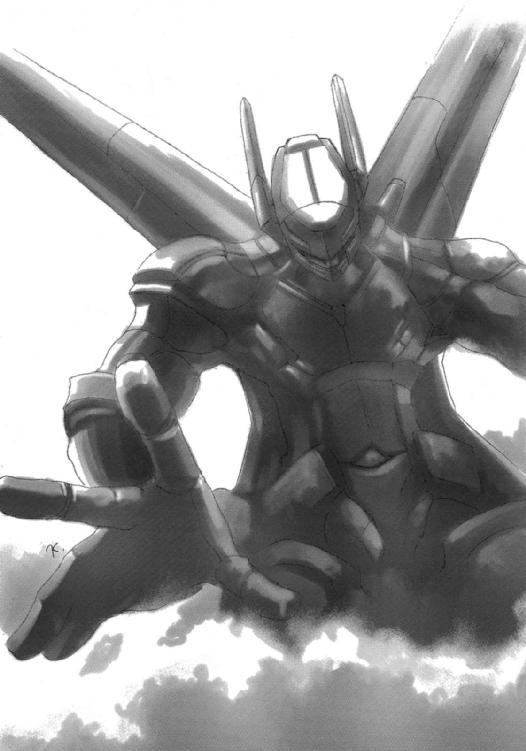
アンディは、ようやくその身体に得た駆除屋の黒い翼、〈ＰＳＧ[I]２ ブラックゴースト〉全制空戦用強化服の中で、熱いため息を吐いていた。
「......痺れるな......」
弾丸のような飛翔。
排気炎も吐かず、噴射煙も引かず、ただ驀進する、弾丸のような飛翔。
直下の、指揮機らしい重装甲ブイを一撃で破壊した、腹から伸びる〈ジャックポット〉大口径プラズマ火砲の冴えも、やけに久しぶりの感じがする。
インナースーツを着る時間を省いた直接装着で出てきたので、傷を負った太ももはじめショックがきついが、アンディは気にしない。今無茶をせずに、いつするというのか。
地面が近づいてきた。両肩の荷重力推進機の指向を一気に真横に入れて、スラスターを思い切り吹かす。ほとんど地面をえぐるような噴射で軌道を修正、指揮機の爆発で混乱する砲兵陣地を低高度で突っ切り、そのまま一気に上空へと離脱。
通り過ぎた後方で、次々に大爆発が起こる。両腰の散布ラックから投下された〈ホットビーンズ〉小型散布爆雷の仕業だった。これで砲兵は黙らせた。
あとは、前面から迫る機動ブイ〈シバ〉三機だ。こちらを視認したのか、連続してロケット弾を射出する。しかし所詮は対地攻撃機の装備、戦闘機の加速、上昇能力には追いつけない。悲鳴を上げるほどに荷重力推進機の出力を上げ、どんどん上昇。
その途上で、突然くるりと体勢を翻して、右二の腕に取り付けた簡易ランチャーから、
「喰らってくたばれ、クソ野郎ども」
クルミ大の砲弾を射出。それは機首を上げて上昇しつつあった三機の〈シバ〉の上方で破裂、お椀を伏せたような形状のエアゾール雲を発生させた。その広がりが三機の鼻面を覆った瞬間、
爆発!!
その一撃、広範囲を高熱と爆風で破壊する〈パニッシャー〉気化燃料炮弾の一撃だけで、機動ブイはぐしゃぐしゃに砕け散った。
アンディは獰猛な笑みを浮かべ、そして一転、最後の戦場へと天空を疾走する。
（...前座は終わりだ！）
本命が、はるか彼方、山の奥から馳せ下ってくる。
銀色の体に暗夜の星を流す、巨大な狼が。
社のある丘まで走り抜けようとする、その進撃路を塞ぐため、降下する。落下の位置エネルギーに荷重力推進機の力を加え、猛烈に加速。
遠距離から、〈ジャックポット〉で先制攻撃を加える。プラズマ火弾が空を裂いて走った。
しかし、銀狼は軽くかわす。その足並みは一向に衰えず、ただ前だけを目指す。進撃路を変えることさえしない。とにかく前へ、という断固たる意思が、その猛進を支えている。
地表をすれすれに飛ぶアンディは、その進路を銀狼の真正面に合わせる。
構わず突っ込んでくる銀狼に向けて、〈ジャックポット〉が撃ち放たれた。
両者の距離がプラズマ火弾を間にして、狭まる。
その光の中、銀狼が、口を開けていた。プラズマ火弾をその中に受け、吞み込み、銀色の体表に流す。体が、燃え上がった。
シンメルは、単なる猪突猛進を行うほど愚かではなかったのだ。
〈イル・リヒト〉熱量帯蓄装甲。エネルギー兵器の熱量を吸収し、なおかつそれを装甲表面に流して自身、灼熱の弾丸と化すという、これが格闘戦用機械獣シンメルの切り札だった。
しかし、アンディは構わず突進。もう近すぎて、回避は敵に隙を与えるだけだった。
シンメルの前足、戦車の装甲さえ打ち抜く巨大な打撃と熱量が、真正面から降ってくる。〈ジャックポット〉の砲身が、これを受けて容易く折れ曲がり、ひしゃげ、溶ける。
アンディはその打撃の衝撃を使って右向き横に回転、左手で背のマウントラックから、熱量さえ押して貫く大打撃たる〈ケーキワーク〉短身砲を取る、
（...）
その前に、シンメルの牙が真ん前に振り回されてきた左肩の荷重力推進機を嚙み裂いていた。
（......トリガー）
猛烈な衝撃の中、トリガーガードの中に指が入る。
（.........届け、）
一回転した、その腕の先に、マウントラックから外れた〈ケーキワーク〉が握られている。
（トリガー!!）
さらにその先、砲身の向こうに、腕を牙を振り抜き嚙み切った銀狼の、無防備な体が。
撃発。
アンディは、〈ジャックポット〉と左の荷重力推進機を叩き潰され、自身、運動エネルギーの暴走で吹っ飛びながら、
銀狼シンメルの胴体を、真っ二つに砕いていた。
五分を切った。
「わーっ!! あの馬鹿、〈パニッシャー〉なんぞ使いやがって！ 〈ギブリ〉が吹き飛んじまうだろうが！」
というゴシップの叫びがこだまする社長室は、にわかに様変わりしていた。
机と社長席を旋回させていた円がそのまま迫り上がって一段をなし、ゴシップととっつぁんが位置していた壁は、その社長席の方に折れ曲がって、皆同じ方を向く席取りとなった。
大スクリーンは社長の背後で絵画に戻り、代わりに天井が傾いて、前方を緩やかな傾斜で塞ぐ。
「各部ジョイント予備稼動開始。重力発生機関作動。グレムリン警戒サイト全照射。直立機構起動。中間作動チェック全省略。即時起動体制へ移行」
とっつぁんが、自分の席で機械体をわざわざ動かして、てきぱきと手順をクリアしてゆく。
「ボギー君はまだかね？」
ディビジョンは一段高くなった席から、慌てるでもなく訊く。
答えたのは、その右後方に立って、補助情報ボードを手にしたエリーだ。
「はい。あと、二ブロック......押し込まれないように頑張っています」
「ふむ、中に収容する余裕はないな。外に張り付いてもらおう」
とっつぁんが最後の手順のように、ごん、とコンソールに鉄腕を置いた。
「社長、オール・グリーン......派手に行こう」
ディビジョンは力強く笑い、
「ゴシップ君」
「あいさ！」
一人ずつを眺め、
「フォートラン君」
「うむ」
そして、おもむろに、
「エリー君」
「はい」
告げる。
「〈ポーカーハンド〉緊急プログラム、『王者の一撃必殺』起動!!」
三分を切った。
しかし、もはや関係ない。
《それとついでに、ボギー君》
《なんです、そっちだけ盛り上がって？》
ほとんど拗ねた口調でボギーは廊下の角に滑り込んだ。炎がその廊下を埋めて通り過ぎる。あのルーとかいう物騒極まりない（とボギーに思わせてしまうほどの）少女は、火炎放射器まで持っているのだ。全くお熱いことで、と皮肉を口に出す体力も既にない。
《社長室に飛び込みたまえ》
《は？》
今までそこを、自分がいる角から一直線の突き当たりにあるドアを守るために必死に頑張ってきたのではないか。
《ありがとう、もう十分だ。後はグレムリンと［ハーバーガイス］への警戒だけでいい》
《いったいなんの......》
《ぐだぐだ言ってねえで早くしろ！》
《驚かせてやるぞ》
《言ったろう、王者の一撃必殺を見せてやる、と》
《はい。さあ、ボギー、帰ってらっしゃい》
ゴシップが咆え、とっつぁんが得意げに言い、社長が笑い、そしてエリーが締めた。
訳が分からないまま、ボギーは目前の戦闘を放棄して奥へと飛んだ。
ズズズズズズ......、と低い唸りが廊下を振るわせる。
「なんだ？」
と見る間に、目の前の廊下が縦に割れた。
「うえっ!?」
周囲の建造物が、丸ごとブロックかパズルのように崩れ、組み替えられして、空間を作りつつあった。ぶちぶちとコードやパイプが離脱してゆき、薄く蒸気が、開けた空間に籠もる。
その空間には、
本来社長室のある場所に、内部へと通じるらしいハッチがあった。
尖った長い鼻面から背後に抜ける、流れるようなラインがあった。
重く深い黒を表面に輝かす、磨き抜かれた重装甲があった。
可変中のカナード翼と水平尾翼が、鈍く唸る推進機関の咆哮を待っていた。
そこには、発進態勢にある、馬鹿でかい戦闘機があった。
「う、こ......これが」
《そう、我らが〈ポーカーハンド〉を内蔵した複合戦闘爆撃機、〈王者の一撃必殺〉だ!!》
そのノズル部から噴煙が濛々と噴き上がり、全てが白煙に包まれた。
この大仕掛けの発動に弾んだとっつぁんの声が入る。
《ボギー、位置信号を送る、警戒につけ！》
《りょ、了解！》
（......そうか、展開〈ゾーン〉の大きさのわりに、やけに限界耐久時間が短いと思ったら......）
ディビジョン駆除商会地下社屋の限界耐久時間とは、建物そのものの耐久時間ではない、境界面がこの馬鹿でかい戦闘爆撃機を通す、その時間だったのだ。
（なんて馬鹿な真似を......）
確かに、〈ゾーン〉の縮小という事態に陥ったとき、据え付けのコンピューターを運搬するよりは楽だ。しかし、だからといってこんな派手な真似をする必要性はどこにもない。だいたい、このサイズ......ボギーは分解する社屋の惨状を見て呆れる。
この戦闘爆撃機、社屋を破壊しないと発進できないではないか!!
要するにこれは、とっつぁんと社長による趣味と道楽の、一大セレモニーなのだ。
（......でもまあ、かっこいいから、いいか）
ボギーは、くくっ、と楽しげに笑った。
社内の予備構築線、つまり発射経路に関係がないため、元の構造を保っている場所は、実は地下ほど大きい。一番余裕が必要なのは当然上層なので、とっつぁんはこのあたりをできだけ壊さないよう、ボギーに指示を出していた。特に階段部は、各階層の空間展開を行う際の駆動レールも兼ねているため、戦闘においても大いに気を遣った場所だ。
今まさに、そのボギーの目立たない好プレーの成果が結実しようとしている。
巨大な、〈王者の一撃必殺〉複合戦闘爆撃機は、上層部まで一挙に開けた空間の中、機尾を床に沈ませ、また機首を宙に差し上げて、直立体勢を取りつつあった。
この騒ぎは、当然ニコルたちの耳にも届いている。
「なんだ!?」
「前方で巨大な動体反応」
「まさか......ルー、行くぞ！」
脱出艇を隠していたのか。いや各階層は立体把握している。そんな脱出経路はなかった。
ニコルはルー諸共、記号片で球体移動空間を作り、防御しつつ前方へと飛ぶ。
そして、さすがの二人が啞然とした。
目の前で、巨大な戦闘機が猛烈な炎を吹き上げながら、天を突くように浮上していた。全てを吹き飛ばして、破壊して、それは舞い上がる。
「......な、なんだと!?」
「......！」
噴煙がすぐに球体外を埋めて視界をふさぎ、位置の固定よりも防御を重視した球体は、風に吹かれたシャボン玉のように翻弄される。凄まじい破壊が、その通過を見計らったように起こり、ディビジョン駆除商会地下社屋は、一挙に崩壊した。
球体の防御壁はその破壊の中に紛れ、やがて噴煙が全てを隠した。
「来た来た......♪」
「おいおい......正気かよ？」
空中に浮かぶ〈チャリオット〉の中のキットと、その下で座り込むアンディ、二人が見つめる彼方で、見慣れた丘が濛々と噴煙を上げていた。〈ギブリ〉凝集スペクトラム伝導剤の粘り気のある黒煙とは違う、真っ白な風のように広がってゆく噴煙。
やがて、その中から、真っ黒な鼻面が伸び、カナード翼が突き出し、やや縮まったような主翼が切り出され、最後に噴煙を引く推進機が光と煙を撒いて、伸び上がった。
圧倒的な体積の飛翔。
二人は、意味もなく痛快さを感じていた。
とはいえ、当事者は結構大変である。
あれだけの巨大なエネルギーの爆発があったものの、運良くグレムリンは出現しなかった。もっとも、〈王者の一撃必殺〉は噴射開始から一分経たない間に〈ゾーン〉の外へ出てしまうから、現れたとしても、それほどの脅威ではない。
実際に現れて、しかも脅威であるものは、目前にいた。
機外待機ポケットに収まっていたボギーは最初、それが何なのか、よく分からなかった。紐つき風船が、上部装甲の尾翼方面に流れている......しかし、そんなものがあるわけがない。
ボギーは飛び出した。
記号片の間隔を詰めて強力なワイヤーとし、限界まで小さくして力を凝縮した球体防御壁に収まる、全くしぶとい退職希望の税務署員たちに向かって。
上部装甲を滑るように、両足を先に出して降下したボギーは、まさにここぞの銃を取る。
よく狙いをつけて、球体防御壁の中を、狙う。
片腕しかない少女は、道化師を抱いていた。
腹から上しかない、道化師を。
少女は、背負っていた立方体を失っていて、よりか細く見えた。すがるように守るように、道化師をその細い体で包もうとする。
ボギーは悪役のように、躊躇なくトリガーを絞る。
抱かれている。
つながりを、感じる。
そう、本当の恐怖は、死ぬことではなかった。
彼女らと、彼女と別れるのが、恐かったのだ。
それが、四年もの間、彼女らを引き連れ、自分を引き摺ってきた理由だったのだ。
二度と会えなくなる。
嫌だ。
そんな事は、あの男との別れ、一度きりで十分だ。
諦めない。
例え相手が必殺の弾丸でも、
抗おう。
一撃で、ボギーが弾け飛んだ。
弾丸は全く歯が立たず、ニコルの防御壁に跳ね返された。
（......な、に!?）
念動力の大打撃を受けたボギーが、
そして、道化師を抱いた少女が、
光を引いて夜を貫く、直上への飛翔から、零れ落ちた。
ディビジョンは、操縦室兼司令室兼社長室の、しかしいつもと同じ椅子に鎮座している。
「アンディ君？」
その彼の問いに、即答。
《了解、こっちも片肺なんでなかなか......っと、拾いました。しかしまた、酷い有様ですね》
「もう一組も、拾ってくれたまえ」
《はあ？ しかしあいつらが社を......》
と言いつつも、既に拾うための降下に入っているアンディである。
「証人がいるのだよ。我々が要求する際、相手に提示する事実を裏付けるための、証人が」
《......なるほど、さすが社長》
ゴシップは言い難い顔をし、とっつぁんはモニターを頷かせ、エリーはにっこりと笑った。
「証人は、生きていなければならない。もう彼らも、止まるための踏ん切りをつけて、こっちの話に耳を傾ける余裕ができたことだろう。証人となる見返りに......そう」
今思いついたふうに、言う。
「自由くらいは、あげたいね」
エリーは、当然のように続ける。
「はい。交渉を終えてから、具体的な検討に入りましょう。キット、手当してあげて」
《了解。それと......ごめん、せっかくの服、汚しちゃった》
「いいわ。新しいの、また見てあげる」
軽く答えると、エリーは通信を切った。
ここからは、彼らの領分だ。
さて、とディビジョンは爽やかに切り出す。
「そろそろ、我々『善良な一企業』に酷い仕打ちをしてくれた連中を......」
「ぶっとばしますか！」
「懲らしめてやるかね？」
とゴシップが息巻き、とっつぁんが訊くが、ディビジョンは優雅に首を振って答えた。
ディビジョン駆除商会オーナー兼経営責任者・ディビジョンの真骨頂たる言葉で。
「いいや、利用してやるのさ」
その忠実にして有能なる秘書が、メインスクリーンに各種項目を並べる。
「はい。通信を開きますか？ ［財務省］と、［情報部］に」
ディビジョンは、それにも軽く手を振って制した。
「いや、彼らとは話す必要はないよ。彼らにはそれぞれ二つずつ、ファイルを送ってやればいい。『今回の戦闘経過』と『我が社の被害総額』を。いずれ何らかの『返事』があるだろう」
ゴシップととっつぁんは呆れ、同時に感心した。もはや何度目か、数え切れない。
［ハーバーガイス］の黒幕たる［財務省］と、暴走した一部署の管理責任者である［情報部］。
あまりに大きな弱みを持つ彼らは、同時に送られてきた被害総額に込められた暗黙の要請......平たく言う弁償を、進んで吞むだろう。そして、横の連絡を密にするでもないこれら組織は、それぞれで支払う......つまり二重取りだ（もっとも、連絡を取り合ったとして、話し合って半額にするという不誠実への報復を彼らは恐れるだろうから、同じことではある）。しかしディビジョンは、それを明確に求めたわけではない。それは向こうが勝手に気を遣ったことなのだ。
ともかく、極め付けの戦闘屋を潰し、［情報部］を出し抜いたディビジョン駆除商会を、彼らは見直すはずだ。社がこれから目をかけようとしている者たちへの、これは保証でもある。
「その『返事』の名目や口実は、向こうが勝手に考えてくれる。楽でいい」
爽やかな笑みが、例によってひどく胡散臭い。
しかし、今回は少しその後がある。
「話す必要があるのは、職員に心身の過重労働を強い続けた、幾つかの研究機関だよ」
親切心だけの言葉ではない。その証拠に行為への蔑みと嫌悪が、その笑みの陰に潜んでいる。
「権力の牙が自分に向けられたとき、人はどんな感情を抱くのか......それを学ぶ機会をあげようじゃないか」
「はい。直ちに、繫ぎます」
恐怖と絶望を演目とする大歌劇の、それは開幕の合図だった。
（......まったく、うまくやってくれたものだわ......）
夜明けを迎えた緑地帯は、先日とは打って変わった晴天の下、清涼な風に吹かれている。
その丘を渡る風は、途中で進路を遮る無粋な物体の前で数秒たゆたうと、また次の場所へと渡り行く。その無粋な物体は、かつて機動ブイと呼ばれた物の残骸だった。
その陰に、一人の女性が拳銃に両手を添えた伏せ撃ちの体勢で潜んでいた。
ヴァージョンである。
笑みが湧いてくるのを、止めようがない。
（本当に、望みどおり嚙み合って、消耗して、こうして目の前に現れてくれるなんて......！）
融合視界に直接視覚情報として入るスコープ越しに、遠く丘の中腹に集う一団を見つめる。
そこは、さながら仮装大会の会場だった。
ヘルメットを外したぼろの強化服はボギーだ。前にいる『何か』に剣吞な視線をやって言う。
「......ちょっとみんな、こいつらに優しすぎない？」
「だって直接、酷え目に遭ったのはおめえだけだしよ」
よれよれのスーツにグラサン（相変わらずダサい格好ね）というゴシップの、あまりといえばあまりな無情の返答に、ボギーは思わずずっこける。
「とっつぁん!?」
すがるように、無骨な機械体にモニターを乗っけたフォートランの爺さんを見るが、
「儂は仕掛けを存分に試せたし、何と言っても〈王者の一撃必殺〉をぶっ飛ばせたから大満足じゃよ？」
「......社長」
最後に一応、といった感じで見るのは、スーツ姿に一分の隙も見られないディビジョン社長と、これも絵画のように、彼の右後方の定位置に立つ秘書エリー。
「収支報告書を後で見せてあげよう。君も臨時ボーナスを得て大笑できると思うよ」
「はい。ボギー、この人たちを、今さら『さあ殺そう』って言える？ 止めないわよ？」
「......ん～......」
「うぷぷ......」
フェイスガードを開けた黒い強化服のアンディが、たまらず口元を覆って笑う。と、いきなり足下を見えない力ですくわれてひっくり返った。
「なにやってんのよ、応急処置の邪魔でしょ」
その転んだ下に、血や泥でぼろぼろになった普段着のキット、そして彼女が工具を振るって手当しているのは、車ほどもある銀色の狼だった。その傍らには、片腕になった異様な西洋鎧（顔が出ているが、どうしてもサイズが合っていない、子供だ）がへたり込んでいた。
そして、
それら、居並ぶ者たちの中心に、元は緑系の色だろう、ワンピースを着たツインテールの少女がしゃがみこんでいた。左腕が肩口からなく、残った右腕で『何か』を抱いていた。
（......さあて......）
舌なめずりする。
その『何か』こそ、獲物だ。
スコープは小さく、銃は拳銃でしかないが、融合視界に同調した今、その『何か』は十分に射程圏内だ。なんといっても、細かく狙う必要がないのだ。
散弾だから。
あの馬鹿で強欲なビル・ミラー［情報部区協課特別戦務局］局長に渡した、いかにも特別然としたダミーとは違い、これは見た目、普通の拳銃弾と変わらない......しかし、この世に一つきりの代物だ。
なんだかよく知らないが、狂った博士がほんの少しだけ作っていた特殊な金属製。あの強力すぎる『何か』の行動を掣肘するため、その肩からぶら下がっている飾り紐のようなものの一片から作ったという。念の入った話だ。
この散弾には、行動制御プログラムを乗せた極微暗証紋様式が付着していて、それに触れた瞬間、あの『何か』は、一挙に全機能を強制停止させられるという。
そしてその瞬間、宝が飛び出す。
（もう少し、体から離しなさい......そう、いい子......）
〈アブラカダブラ〉という、宝が。
その捕獲のための仕掛けは、すでに準備済み。特殊な受信システムで転送経路を限定して、それを自分のデータバンクへと秘匿する、仕掛け。
実は、ミラーと交渉していたノーティスとかいう爺さんは、とっくに死んでいる（寿命だか殺されたのだか知らないが）。あれは自分の制御下に置かれた偽者だった。
ネット上に死亡した人間の偽装姿態を置き、それと繫がっている人間の挙動チェックを行う......これは［情報部］伝統極秘の、そして［保安機構］が請け負う、内部査察方式なのだ。
数年前に［保安機構］で〈フーダニット〉ドライバーの一人となった自分は、その査察委員としても活動するようになった。今回の〈アブラカダブラ〉に関する一件も、その任についているうちに知った。ダミー・ノーティスに、ミラーが話を持ちかけるという形で。
その杜撰な計画も、実際には、ほとんど自分が立案、監督したと言っていい。
［ブラックアウト］＝［ハーバーガイス］に出される指令の伝達経路を突き止めて、二手に分かれさせる偽の指令を出し、道化師に止めを差す〈デスコード〉弾を研究施設から移送させた。然る後、［特別戦務局］の暴力馬鹿どもに前準備をさせて、仕上げに危険な餌・ディビジョンの連中に準備の隙を与えず、しかし対応をぎりぎりできる程度の事前通告をした。
自分が巻き込まれるなど、多少のハプニングもあったが、まあ結果オーライ、すべては今、うまくいっている。
［ハーバーガイス］は戦闘力を完全に失うほどに消耗し、ディビジョンの連中は事態に振り回されて相討ち同然の損害を受け、ミラーは自分の存在すら知らぬまま死んだ。
虚による実の自在な操作......これぞクラッカーの醍醐味だ。
そのクラッカーたる自分を縛り、惹きつけて止まない、究極の対クラッカー情報網兵器〈フーダニット〉。ミラーに話を持ちかけられてから、自分が探れる範囲で探って知った。〈アブラカダブラ〉こそ、その雛型であり、ゆえに通過もフリーなのだと。
ならば、それを得、解析し、システムを理解すれば、自分はまさに......!!
政府のシステムジャックなどという下らない目標よりも、こちらの方がよほど官能的だ。
この引き金を絞るだけで、それが得られる。全世界のプログラムに、システムに、あまねく意思を力を及ぼす自分......魅惑の世界が、この引き金を絞るだけで。
（......ダサダサの『青』、ディビジョンの皆さん、お世話様、そして、さよなら......）
引き金が絞られ、撃鉄が銃弾を打った。
信管に火花が走り、炸薬が爆発し、その燃焼ガスが銃弾を押し出す。
弾頭床部に刻まれた微細な筋がガス圧力で広がり、圧縮形成されていた弾片が砕ける。
砕かれた弾片は銃身を前へ前へと走り、指向性を持った破片の嵐となって銃口を出る、
寸前に阻まれた。
銃身内部に接着されていた、小さな、飴玉のような物体に。
その物体は、弾片による高圧高熱の接触を受けると、己が内に蔵していた濃縮炸薬を一気に点火、大爆発を起こした。
「!?」
事態を理解する前に、その腕が、頭蓋が、全身が、爆圧と破片を受け、粉々に砕け散った。
その爆音に、ディビジョン駆除商会の面々は一斉に警戒態勢を取った。
が、キットがそれを制した。
「あ、大丈夫大丈夫。多分、ヴァージョンさんが壊れたのよ」
「なに？ どういうことじゃ」
とっつぁんが訊く。
キットは、飛び起きようとしたルーに、大丈夫だから、と言って座らせ、解説する。
「一緒に逃げてる間に、念のため銃に細工しといたんです。最初に感じて、見つけたときに分かってたし。腰の拳銃の中身が変な散弾だってこと」
ルーに抱かれているニコルを見て、
「この人のそれと同じ材質でできた弾頭......さっき聞いた〈デスコード〉の弾だと思う」
「いや、そっちじゃなくて......あそこで吹っ飛んでるんだろ？ ヴァージョンの姉ちゃんが」
アンディが恐る恐る言うが、キットはこれにもあっさりと答える。
「大丈夫。彼女、あそこにはいないから」
ゴシップが、フン、と鼻を鳴らし、忌々しげに吐き捨てた。
「やっぱりな」
どことも知れない暗がりの中で、機械の塊の中から、うぐ、といううめき声が上がった。
その機械の塊は、椅子と机を一緒くたに固めた上にパイプやコードでデコレートしたような物体で、その中には人間が一人、頭だけを残して埋もれていた。
その収まりの悪い髪が、うめいた拍子に広がり、美貌が凶相を帯び、歪んだ。
ヴァージョンだった。
「なんてことなの！」
バシュッ、と空気の開放音が鳴って、中から右腕が現れた。思い切り、機械に打ちつける。力一杯の打撃は、しかし痛さと虚しさしかもたらさなかった。腕に痺れが走る。
これが本物の、ヴァージョンだった。
ディビジョン駆除商会で砕け散ったのは、外部へと接触を図る際の、彼女の代行体だった。
「最後の最後で!! 〈アブラカダブラ〉がもう少しで」
こつん、
と、最初ヴァージョンは、自分の後頭部に何が起こったのか、理解できなかった。
何かを突きつけられている。
幾重にも電子・物理的手段でシールドした、この極秘の隠れ家に潜む、自分の後頭部に......
「......『国事には、窺い知れぬ秘密あり。神ともまごうその働き、筆舌遠く及ばざる』ってね」
おどけたような、軽い声が、突然背後から上がった。
すい、とその突きつけられた物体が、頰を過ぎて前に伸びた。
金属製の腕。その人差し指だった。それにしても、ぼろな作りだ。
きい、と初めて後ろで機械がきしむ音がした。
「やあやあ、偶然とはいえ、ディビジョン駆除商会とはね。連中とは余程の腐れ縁があるみたいだな」
「あんた、誰？」
ヴァージョンは首を動かさず......というより硬直させて、訊く。
「そうだな、狩人もまた獣の獲物、ってことを教えにきた優しいお兄さん」
「私が誰か、分かってるの？ 私は」
「〈フーダニット〉ドライバー・ヴァージョンだろう？ もちろん、訪ねてきたんだから」
後ろの方で、馬のいななく声が聞こえた。耳障りな、安っぽい合成音。
「待ってな、すぐ終わる」
その後ろの方に声をかけてから、指を差し出していた人物は、
「しかし、あんたも妙な連中に目をつけられたもんだ。［虚数の獄吏］とは......恐い恐い」
おどけた調子だが、その奥には、何か巨大な圧力のようなものが存在する。
「あんた......まさか［クールフェイカー］？」
それは政府の密偵、恐怖と死の別名。
「......さてね、そうだとしても名乗る気はないし。とりあえず、見てくれ」
ネジの緩んだ指先（［クールフェイカー］だとしたら、そんな見かけはただの飾りだ）の先が、わずかに瞬いて、彼女の前にあったスクリーンに灯が入った。
情報経路がどんどん延びてゆく、彼女も見慣れた大樹のようなネットの俯瞰図。
しかし、ヴァージョンはやがて、その経路が何であるかに気づいた。
「これは......［ハーバーガイス］が集めた......」
「さあすが、才媛として名高いヴァージョンさん。これね、嗅ぎ回られると駄目なのよ」
大樹の先が、やがて先細りして、一つの壁に突き当たる。
連中が四年間で集めた莫大な資金が、ここに流れ込んでいると言うことか。
「無論、これだってほんの一部なんだけど、連中、慎重だからな。あんたや［特別戦務局］のちょっとしたおイタにも、目を付けてるわけだ、これが」
じわじわと、戦慄が体を駆け上ってくる。何か、触れてはいけないものに触れているという、クラッカーとしては馴染みの感覚。しかし、これは今までの中でも最大級の......。
「......［虚数の獄吏］って、何？」
ボロ指の持ち主は、指を引いた。がさり、とマントか何かに腕を収めたらしい。
「ん～、おいらもよくは知らないよ。ただ、おいらみたいな立場の人間でもない限り、触れたらまず、生きてはいけない、死さえも秘される、そういう連中さ」
ヴァージョンは、いまだ機械のうちにある左手で、部屋の防衛装置を作動させるキルスイッチに密かに手を伸ばす。
「それを私に教えてくれるなんて、やけに気前がいいのね、［クールフェイカー］」
「なに、構やしない」
キルスイッチが躊躇なく押される。
その前に、
抜き打ちの古臭い重拳銃が、ヴァージョンの頭蓋を、胸から上ごと、前の画面もぶち抜いて、吹き飛ばしていた。
「旅立ちの餞別さ」
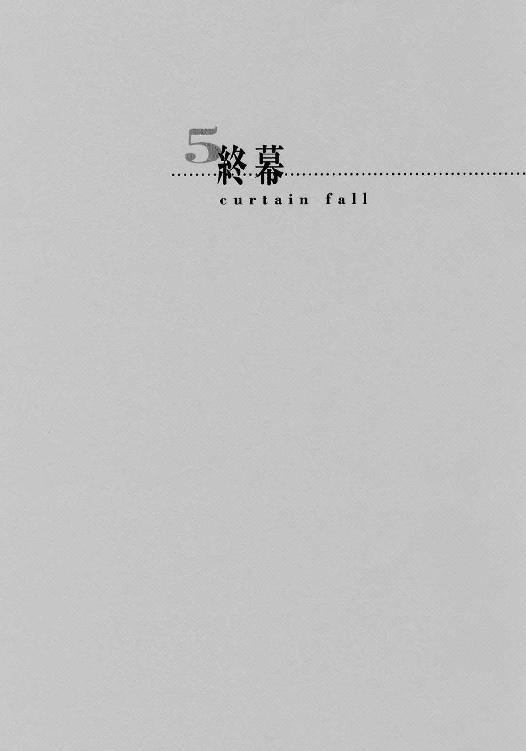
非常識な税務署の取立てから数週間がたった。
ディビジョン駆除商会の社屋は未だ再建の見込みなく、彼らは春近い丘の上で、テント暮らしをしている。
「あたし、てっきり、新規採用でもするのかと思ってましたけど」
キットが、少し残念そうに言った。
とっつぁんが社屋の再建に取りかかるのは、もう少し先になってから、とのことだ。なんせ、今度も無駄な遊びを多く入れたいとのことで、ディビジョン社長、ゴシップに加え、アンディもその立案に参加することになったのだから、なかなか話がまとまらない。
「ふん、冗談じゃない。あんな奴ら」
と不機嫌そうに言うボギーに、アンディが呆れる。
「おいおい、まだ根に持ってんのか？」
ともあれ、エリーの意見で、丘の上に着陸させた〈王者の一撃必殺〉複合戦闘爆撃機の下に最低限の設備だけを揃えたテントを張るという、豪華だか侘しいだかの仮社屋が出現することになった。なんせこの巨大な戦闘爆撃機、居住空間が旧社長室区画しかないときている。
「それにしても社長、いくら〈アブラカ云々〉を丁重に返還したからって、よく奴らを野放しにする許可が出せましたね。コネの力って奴っスか？」
ゴシップがサングラスをずらし、遠ざかる人影を見送る。
結局社長だけ生活が変わらず、という所がいかにもらしくて、エリーととっつぁんを除いた面々は、温かいブーイングを大いに雇用者に向けて送った。
無論、送られた方は爽やかな笑顔で答えた。今のように。
「たいした口添えはしていないよ。彼らの勤務評定は、非常に優良だったからね。自由はむしろ、当然のご褒美なのさ。信頼を置ける人間には、社会はそれなりに優しいものだよ」
例によって、ディビジョンの後にはエリーが続ける。
「はい。いくつかには、黙ってもらうよう、念入りに交渉しましたし。それに彼らなら、そういう庇護がなくても、きちんと暮らしていけるでしょう」
この日、彼らは仮社屋に四人の客を迎え、その簡単だが丁重な挨拶と謝辞を受けていた。
彼らは引き止めるキットとアンディに、やはり丁重に詫び、すぐに去った。
「......しばらくは、あの小さいの二人に食わせてもらうとか言っておったような気がするが」
とっつぁんが頰を搔く真似をした。
社員たちは他にすることもないので、全員で彼らを見送る。
春をわずかに薫らせる風の中、皆はしばらく無言で、去って行く四人を見つめていた。
何か、彼らには決して届かないものを持つ姿に、羨望さえ感じながら。
「ねえ、ルー。今日から、その、家族、になるから、その......一つお願いがあるんだけど」
ルーとお揃いの、赤いワンピースでおめかししたベルヒトが、どもりながら訊いた。
「なに？」
「......あの......その、また、ブリギッタ、って呼んでいい？」
「うん......いい」
「......本当！ やったぁ！」
ベルヒトはループレヒト＝ブリギッタ・ニキシュの手を取って駆け出した。
「嬉しくて駆け回るなんて、まだまだ子供だな」
その後にゆっくりと続く、子供用スーツをきっちりと着込んだシンメルが、苦笑しながら言った。ソフト帽が似合いすぎである。
その傍らを歩く、こっちはスーツをラフに着崩したニコルが、呆れ顔で応える。
「......そういうおまえさんは落ち着きすぎだと思うがね」
「自然とそうもなるよ。大体、僕は前からニコルの、何でも一人で背負い込む癖を、直して欲しかったんだ」
「あ～」
ニコルは、説教の予感を感じて眉根を寄せた。
「あ～、じゃなくて。ルーを幸せにするつもりがあるのなら、もう今までみたいな刹那的な考え方はやめて、しっかりと地に足を着けた生活をしないと。ルーの旦那が無職の社会不適合者なんてことになったら、僕ら博士に申し訳が立たないよ」
「......そこでヘルムートを引き合いに出すかね。第一、旦那っておまえ......」
渋い顔をするニコルに、シンメルは子供らしい率直さで訊く。
「じゃあ、何のためにその顔を付けたのさ」
「ん～？ そうだな......とりあえずは、笑うためかな」
「あれだけ笑っておいて、まだ足りないの？」
「......まあな」
万感の思いを込めてニコルは答え、遠くを見やる。光景が、大きく開けている。
その広い世界の中で、ベルヒトが道端の花を指差していた。
「ニコルー！ これなんて花？」
身軽そうな、何も背負っていないルーが、その手を引っ張って、首を振る。
「摘んじゃ、駄目」
「ええ～？」
シンメルは、そんな様子を眺める男の顔を見上げて、とりあえず満足し、口を閉じた。
ニコルは誰にともなく、呟く。
「......これが、笑う、か......」
頰を少し緩ませ、ぽつりと。
「悪くない」
完
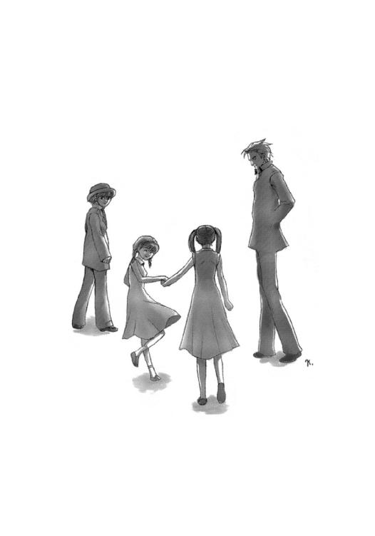
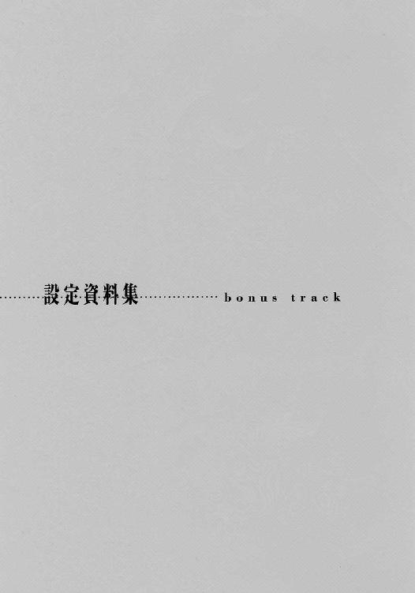
■組織■
［ハーバーガイス］
『子嚇しお化け』の意。正式名称は、［連合政府財務省現況調査兼強制徴収特例法下税務署］。
政府の特例法下破壊活動組織。不正規な資金の流れを持つ非合法武装組織を密やかに襲撃し、ロンダリングジャック・プログラム〈アブラカダブラ〉によるクラッキングで組織の資産、経営基盤などすべてを強制徴収することが任務。平たく言う『極秘の取立屋』。署長ニコラウス、統括官ループレヒト、強制調査官シンメルライター、同ベルヒトの計４人からなる。
なお彼らは、治安当局や［情報部区協課］の案件では、強盗団［ブラックアウト］の呼称で扱われ、世間的にもこの呼称で、わずかに知られるのみである。
［連合政府情報部］
略称［ＡＩＢ］、または単純に［情報部］とも呼ばれる。連合政府の管轄の下、区域間の対立に関する情報蒐集と、様々な反政府・犯罪活動を監視し調査する諜報機関。どこにでもあり、またどこでも嫌われ、しかしどこにでも必要な組織。その性格も、この種の組織の例に漏れず、あまり明るいものとはいえない。警察機構や治安軍とも、例によって非常に仲が悪い。
また、［特別戦務局］とは、情報部総務局にある区域間協力課の一部署で、［情報部］が独自に保有する武装集団。情報部員のみで構成され、軍の正規教育は受けていない。『政府として表沙汰にするのは好ましくない』事態を秘密裏に、速やかに片付けることが任務。
［虚数の獄吏］
詳細不明。
■武装■
［〈クラリネット〉軽機関銃］
生身で撃つクラスとしては高性能の機関銃。グレネードはとっつぁんによる後付け装備。
［〈アウリッシュガン〉高性能強化服］
高性能強化服とは、通常の類別における強化服の高級機種のこと。荷重力推進機も含めた各部の換装で機能に変化をつける『戦う着せ替え人形』。今回は固定武装さえつけていない。
［〈メトロノーム〉可変念動力伝導体］
念動力を高効率伝達する金属片を核に、発動念動力全体の誘導・制御を意のままに行う、特殊技能者用の万能武装。その用途は多種多様で、防御壁構築から弾丸、運動補助などの他、防御壁に認識操作の力を通して索敵・探知装置から逃れることも可能である。
ただ、この装備は制御のために、運用者の脳内に焼き付けねばならない特殊なパターン・モザイクが必要で、常人が後付けで装備することは不可能。
［〈アブラカダブラ〉］
クラッキングによって対象総体の運営する全資金、資産、経営基盤、保持情報、伝達経路を政府機関に強制徴収するロンダリングジャック・プログラム。
奪った資産は全て、とある経路を通って政府組織へと流れ込む。かの〈フーダニット〉も、何故かこの違法行為には反応せず、完全にネット内での自由行動を許している。一説には、この〈アブラカダブラ〉が、〈フーダニット〉の雛型の一つであるためとも言われる。
［〈アウフホッカー〉総合サポートデバイス］
『おんぶお化け』の意。巨大な鋼鉄の箱の中に、『支持アーム付き杭打ち機』『チェーンガン』『ロケットランチャー』『探査機』『大口径短身砲』『ミサイル』『火炎放射器』など、多種の武装と積載軽減機関を組み込んだ『持ち運びできる武器庫』。これら、複雑極まりない火器管制・機関制御を駆使した戦闘は、多重同期制御能力者たるルーならではのもの。
［〈ケーニヒ〉格闘専用機械獣］
『王』の意。戦時に通常生活体を格納して機能する戦闘機構体。巨大な銀狼型。頑丈で信頼性に富み、近接戦闘能力者たるシンメルの操作に十二分に応えるだけの運動性能も持つ。限定的ながら飛行も可能。
［〈イル・リヒト〉熱量帯蓄装甲］
『鬼火』の意。受けたエネルギー兵器の熱量を吸収し、なおかつそれを装甲表面に流して自身を灼熱の弾丸に変えるという特殊装備。帯蓄限界以上の熱量は周囲に放射されるため、強力な兵器を持つ敵へのカウンターにもなる。かわしかわして、最後に不意を打つための必殺武器。
［〈ケーニギン〉砲撃・管制機構体］
『女王』の意。戦時に通常生活体を格納して機能する戦闘機構体。寸詰まりで腕だけが長い西洋鎧型。非常にデリケートかつ精密な機体で、各種武装も電磁調律能力者たるベルヒトが着装して初めて機能する。
［〈ヤーレス・フォイヤ〉磁場誘導砲］
『年毎の祝火』の意。ベルヒトの両腕をそれぞれ砲身として発射される強力なレールガン。本来は〈ローレライ〉誘導力場の補助を受けて一定空間内に百発百中の制圧砲撃を注ぎ込む、『誘導を受ける大砲』。本編では、追撃に移って以降、打ちっ放し状態で、誘導力場の最終加速も得られなかった。それでも通常の装甲では全く太刀打ちできない破壊力を持っている。
［〈悪霊団〉］
ベルヒトの統制を受ける自動戦闘ロボット群。一体一体はたいした戦力ではなく、その自律思考もベルヒトの大意命令を受けて初めて行動できる程度のものだが、彼らの本分は戦闘ではなく、女王ベルヒトのために戦場環境を整備することである。
彼らは集団で一つ〈場〉の電磁を形成し、その内部に〈分身〉という電子的幻を映し出す。この〈場〉内に敵を捕らえ、自動追尾装置・射撃管制機構を攪乱、通信・情報蒐集活動を妨害するが、彼らの最も重要な役割は、〈ローレライ〉誘導力場の展開である。
［〈ローレライ〉誘導力場］
『導きの魔女』の意。正確には武器そのものではなく、〈悪霊団〉の展開する電磁〈場〉の、調律完了状態のこと。この〈場〉は、〈ヤーレス・フォイヤ〉磁場誘導砲の誘導路の最大最終地点として張られ、自動的にその弾体を吸い込む。弾体はこの時点まで加速し続けているため、その着弾は壮絶な威力になる。
■メカニック■
［対地攻撃機（Air to Surface Attacker）］
前現代のヘリの役割をほぼ受け継いだ、対地攻撃と輸送を主任務とする低速飛行機種。一般に機動ブイ（Bouy＝浮標）と呼称される。重力制御機関で進退昇降し、ローターを持たない。ちなみに、対地攻撃機における〈〉内の愛称は、犬の種類から取られるのが通例。
［マクディビットＡＳＡ─64〈シバ〉］
対地攻撃タイプの機動ブイ。全長約18メートル。複座式。両舷側にミサイルポッド、上下に連装ロケットランチャーと機関砲をそれぞれ装備している。
［グリソムＡＳＡ─24〈シェパード〉］
指揮管制タイプの機動ブイ。全長約23メートル。操縦は複座。二十名の搭乗が可能。重装甲で機動性はいまいちだが、積載量は大きい。今回の仕様での武装は機首上下の機関砲のみ。
［〈王者の一撃必殺〉複合戦闘爆撃機］
元となった機種は、フィリップスＶ／Ｆ／Ｂ─２〈バルトロメオ〉。航空師団の指揮管制を一手に行う『空飛ぶ師団司令部』として開発された巨大な戦闘爆撃機。
とっつぁんは、この機体の広大な司令室区画を取っ払って、社の頭脳中枢〈ポーカーハンド〉と秘密の社長室区画を据え付け、『空飛ぶ社長室』に改造した。おそらくは、趣味と道楽の産物らしく、本来の仕様から無駄にスペックアップがなされているものと思われる。
了
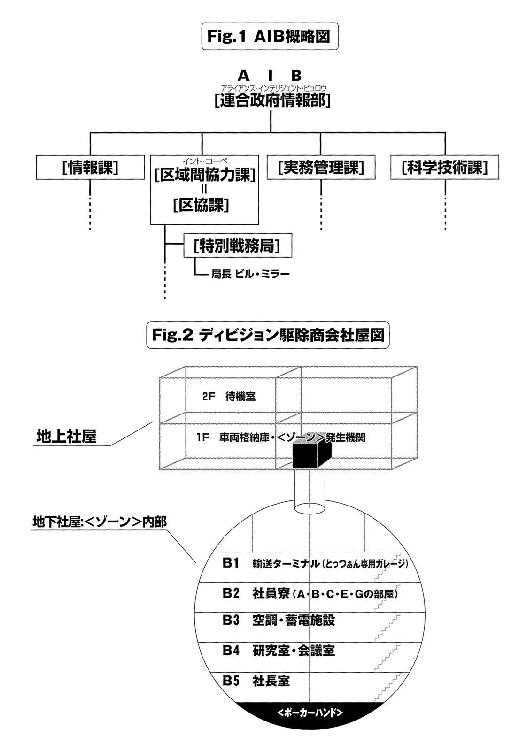
あとがき
はじめての方、はじめまして。
久しぶりの方、お久しぶりです。
高橋弥七郎です。
再び皆様のお目にかかることができました。ありがたいことです。
さて本作は、痛快娯楽アクション小説です。
一応、前作『Ａ／Ｂエクストリーム ＣＡＳＥ─３１４［エンペラー］』の続編ということになっていますが、話自体は独立していますので、前作を知らなくても楽しめる......はず（弱気）。
テーマは、描写的には、これまた例によって「アクション」で、内容的には「絆」です。
本文に鑑みて胡散臭くはあっても、作者としてはそういうことになっています。ええ、そういうことなんです、そういうことにしましょう、そうだといいなあ、そうだと思って。
筋は、さらに撃って打って射ちまくりです。いい加減にしろ、というくらいです。
さらに今回は敵側も負けじと撃って（以下略）なので、おおよそ二倍からの破壊力を撒き散らしていることになります。ひどい話です。でもそういう話です。
担当の三木さんは、結構うっかり屋さんです。見えにくいところでうっかりしてます。
でも、読者思いのナイスガイです。今回も「これがないと読者は全然わかりませんよ」と仰せになり、微妙にお徳感のある設定資料集が付いています。少々ネタバレなのでご注意を。
挿絵の金田さんは、とてもすごい絵描きさんです。いえ、見れば分かりますが。
文章で表現するのが虚しいほどに、格好いい絵を描いてくださいました。個人的にはディビジョンが想像まんまでした。今回はイロモノが揃っているので楽しみです。
......
......また書く事が、なくなってしまいました。なかなか紙面が埋まってくれません。
他の皆さん、どうやってネタを思いつかれるのでしょう。不思議です。一つ二つ話題を分けてくれないものでしょうか。助けて鈴木さん！ ......とか言っても駄目ですか、そうですか。
ともかくともあれなんにせよ、今回はこのあたりで。
この本を手に取ってくれた読者の皆様に、無上の感謝を、変わらず。
三度、皆様のお目にかかれる日がありますように。
高橋弥七郎
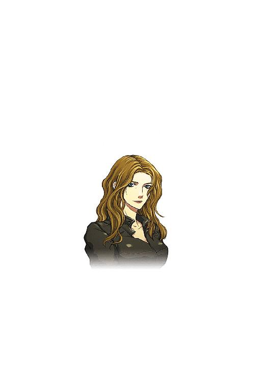
高橋弥七郎
生まれも育ちも在住も大阪、という純大阪人。会話にオチを求めるらしい。『他人は二重三重に疑い、自分は本音を語らない』という人として破綻した性格ゆえか、今回の受賞でも、周囲からは顰蹙と爆笑しかもらえず。
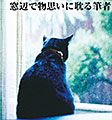
金田榮路
小説挿絵のほか、ゲームやトレカのイラスト等で活動中。趣味は映画、演劇、スポーツを観る事。
 電撃文庫
電撃文庫
Ａ／Ｂエクストリーム
ニコラウスの仮面
高橋弥七郎
発 行 2014年9月25日
発行者 塚田正晃
発行所 株式会社KADOKAWA
〒102-8177 東京都千代田区富士見2-13-3
03-3238-8745（営業）
http://www.kadokawa.co.jp/
プロデュース アスキー・メディアワークス
〒102-8584 東京都千代田区富士見1-8-19
03-5216-8399（編集）
http://dengekibunko.dengeki.com/
本書（電子版）に掲載されているコンテンツ（ソフトウェア／プログラム／データ／情報を含む）の著作権およびその他の権利は、すべて株式会社KADOKAWAおよび正当な権利を有する第三者に帰属しています。
法律の定めがある場合または権利者の明示的な承諾がある場合を除き、これらのコンテンツを複製・転載、改変・編集、翻案・翻訳、放送・出版、公衆送信（送信可能化を含む）・再配信、販売・頒布、貸与等に使用することはできません。
(C)2002 YASHICHIRO TAKAHASHI
※2002年7月25日発行の電撃文庫『Ａ／Ｂエクストリーム ニコラウスの仮面』初版に基づき制作